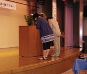

| 2011.3.11大地震大津波を語り継ぐために: 声なきものの声を聴き形なきものの形を刻む みやぎ民話の会叢書 | |
| 第七回みやぎ民話の学校実行委員会 | |
| (2018) | |
みやぎ民話の会叢書第十三集
「第七回みやぎ民話の学校」の記録
２０１１．３．１１
大地震 大津波を語り継ぐために
―声なきものの声を聴き 形なきものの形を刻む―
第七回みやぎ民話の学校実行委員会 編
「第七回みやぎ民話の学校」実行委員
秋山 伸司
小田嶋 利江
小野 和子
加藤 恵子
河井 隆博
〇島津 信子
長須賀 直子
山田 和郎
山田 裕子
（あいうえお順 〇印は実行委員長）
はじめに
山田 裕子
みやぎ民話の会叢書第十三集ができました。
今までの叢書は、語り手から聴いた民話を集めた「民話集」の形をとっていますが、第十三集は、「記録集」として刊行します。二〇一一年八月二十一、二十二日に開かれた「第七回みやぎ民話の学校」の記録です。
今回の「民話の学校」では、六人の方が、津波に遭った体験を語ってくださいました。地震の前のおだやかなひととき、突然襲った大津波、大切なものを奪われてしまった悲しみ、その後の避難所での生活。そして、大きく変わってしまった暮らしのなかで、何を支えに生きていこうとしておられるのかを語りました。
全国から参加した二百数十名の方が、ひとりひとりの語りを全身で受け止めて聴いていました。
津波の体験を「語る」、深い共感をもって「聴く」、まさに「語る」「聴く」という民話の原点が、そこにはあったと思います。
この一冊は、「民話の学校」で、大地震、大津波を「語る」「聴く」ということが、どのように行われたのか、そして参加者が感じたことは何かを記録し、編んだものです。
わたしたちは、「第七回みやぎ民話の学校」のこの記録集が、より多くの方に読んでいただけることを願っております。
二〇一二年三月十一日 （ みやぎ民話の会代表 ）
目次
「第七回みやぎ民話の学校」における「三．一一」津波の語りから〜 福田 雄（関西学院大学大学院）
みやぎ民話の学校に義援金や寄付の品を寄せてくださったみなさん
1 年おきに（ときには二年おきに）開いてきた「みやぎ民話の学校」も七回目を数え、今年は、当初県南地区での開催を計画していました。県南の三つの地域、（１）伊具郡丸森町、（２）角田市、（３）亘理郡山元町と福島県相馬郡新地町、この三地域を中心に、そこにお住まいの語り手から民話を聴き、その地で生れた「民話」サークルの活動に学び、これからの語りの方向をともに考えたいと思っていました。そして、昨年の夏から準備にかかり、そろそろ案内書を作成しょうかというときでした。
三月十一日、大震災に襲われました。宮城県北東部の海岸沿いの大きな被害はもとより、仙台湾を臨む仙台市をはじめ、多賀城市、名取市、岩沼市、亘理郡亘理町・山元町、隣接する福島県相馬郡新地町など、県南部が蒙った被害も甚大でした。
わたしたちが「学校」のために選んだ三つの地域のうち、山元町・新地町もおそろしい津波にやられ、この地域に住む語り手が二名までも家を流されました。また、語りの会場の一つに選んでいた日本最古の小学校である、新地町の観海堂も根こそぎ海へ持っていかれました。
このような状況の中で「学校」を開くことは難しいと考えて、一度は、中止を取り決めました。
しかし、わたしたちを「学校」開催に踏み切らせたのは、被災された語り手の方々から寄せられた言葉でした。形あるものをすべて失った語り手の方々が、「わたしには民話が残っている」といわれ、「生きている限り、語っていきたい」といわれるのでした。家財産、田畑、なにもかも手から離れた今、身体のなかに無形の民話が息づいていると語り、これからの暮らしの「命綱」にするといっておられるのです。
胸を揺さぶられました。被災されたみなさんに、わたしたちのほうが勇気づけられ、背中を押されていることに気がつきました。それに応えるためにも、わたしたちは「学校」開催を決めました。
そして、今回の「学校」は、当初の計画を大きく変更し、被災されたみなさんを中心に、その体験を語っていただくことからはじめたいと思いました。過酷な災害に襲われたふるさと宮城県から、わたしたちは何が発信できるのか、どんな方法がとられるべきなのか、なにもかも判然としないままです。が、せめて、そのスタートラインをともに模索し、震災がもたらした苦しみをわずかでも共有させてもらい、そこから、すべてをはじめたい、そんな「学校」にしたいと考えました。
そして、大きな被害を受けた南三陸の地を会場に選びました。宿舎の「ホテル観洋」には、現在もたくさんの避難者が身を寄せておられます。この方々との交流も持ちたいと願っています。
基調講演をお願いしました川島秀一さんは、気仙沼で生まれ、気仙沼の海を起点にして民俗採訪をつづけてこられました。このたびの津波で母上は、いまだ行方不明です。大切な資料、そして家をなくされました。わたしたちの願いを受け入れてくださった有り難さを決して忘れません。
被災後の川島さんは、つぎのように述べておられます。
《ただ一つ分かったように思えたのは、三陸の漁師たちは海で生活してきたのではなく、海と生活してきたのではないかということである。海と対等に切り結ぶ関係を持っていなければ、今後もなお漁に出かけようとする心意気が生れるはずがない。そのような積極的な生き方に、私自身もう少しだけ賭けてみたい。日はまだ暮れてはいないのだから。 二〇一一年五月二日 河北新報より 》
（みやぎ民話の会顧問）
◇八月二十一、二十二日のプログラム
◇参加者募集要項
◇被災地地図
八月二十一日（十三時三十分～十五時）
開校の言葉
大地震、大津波を語り継ぐために .............................. 小野 和子
基調講演 「津波と語り」 リアスアーク美術館副館長
........................... 川島 秀一
司会 島津 信子
開校宣言 山田 裕子
只今から、みやぎ民話の会主催、「第七回みやぎ民話の学校」を開校いたします。
開校式の司会は今回の実行委員長の島津信子さんにお願いします。
島津―司会進行を担当いたします島津信子です。よろしくお願いいたします。
開校に先立ちまして、三月十一日の大地震、大津波で亡くなられた方々に献花と黙祷を捧げたいと思います。
 なお、献花くださいましたのは、仙台市にお住まいの佐藤進さんが世話人をされておられる、関東方面の先生方十名のグループのみなさん方からです。皆さん方は昨日まで気仙沼でボランティアをなさっておられて、帰途、この「学校」があることを知り、参加して下さいました。
それでは、只今より、みやぎ民話の会顧問の小野和子さんが「開校の言葉」を述べさせていただきます。小野和子さん、よろしくお願いします。
大地震 大津波を語り継ぐために
小 野 和 子
海の見える町
ぬれた砂に
指であなたの名前を書いた
波が寄せては消していくけど
なんどもなんども
くりかえし書いた
悲しくなったら
ここに立ってください
風にのってわたしは
あなたのもとへ行くでしょう
思い出したら
大きな声で呼んでください
打ち寄せる波に
私の声が聞こえるでしょう
わたしは
海に生きています
あなたは
海の見えるこの町を
離れないでください
これは、みやぎ民話の会の仲間、早坂泰子さんの詩です。
早坂さんの古 里 名取市 閖上 地区も、今回の大震災の津波で、町はほとんど消えました。早坂さんの実家も、両親が眠る墓地も、友だちも、古い町並みも、みんな海の向こうへ消えました。震災のあとしばらくは、ただぼんやりと過ごすばかりだったと言います。言葉が出てこなかったと言います。そして、三か月後にむかえた、六月の合同慰霊祭の日、亡くなった人たちに語りかけたい気持ちがあふれて言葉になり、それを記したものを、「つたない詩ではずかしいのですけれど、読んでください」と送られてきました。
この詩からは、去っていった人たちに対する早坂さんの思いが伝わってまいります。同時に、消えていったものと、今ここに在る自分とを結んで、ともに生きようとする希望にも似た明かりも、向こうに見えてまいります。
三月十一日、わたしたちもまた、みんな言葉を失ったのではないでしょうか。被災し、地獄を眼のあたりにした人たちの苦しみ、悲しみは、それを体験しなかった者には、おしはかることさえできませんが、被災地の近くにいてその様子に息をのんだ人たち、それから、はるか遠くにいて被災地の様子に息をのんだ人たち、みんなみんな言葉を失って、苦しみもだえる日々を送っていたのではないでしょうか。なにものかにむかって、ただ祈る日々であったといってよいかもしれません。
それから五か月あまりたった今も、あの日、被災された方から、「泣こうとしても、どうしても涙が出てこない」「言葉が凍ったように出てこない」――という切実な声を聞くこともあります。
けれども、時間がたつにつれ、もうひとつの思いも込み上げてまいります。
その声を聞くことができなくなったたくさんの人たち、もう、その姿を見ることができなくなったたくさんの人たち、こうした方々の、その声なき声を聞きたい。その姿なき姿をありありと見たい。それを可能にする生きたつよい言葉を生み出したい。そして、立ち上がろうとする人々に寄り添うことができる言葉を、自分の胸に生み出し、わたしたちは語りはじめたい、語りはじめねばならない、と思うのです。
今日、お集まりの一人一人のみなさまと共に、ここで語られる事実を胸に刻み、その目で確かに見た現実を脳裏に刻み、それを明日のためにどう語り伝えていくことができるのか。この二日間が、それを考える時間になればと願っております。
みやぎ民話の会は、三五年前にスタートし、宮城県を中心に山の村や海辺の町を歩いて、そこで聞いた民話を、一つ二つと記録する作業を、ただ愚直につづけてきました。二十名足らずのまことに小さいサークルです。
そこで聞く民話の面白さにひかれ、それを語ってくださる人たちの誠実な生き方に魅了されての年月だったと思います。お会いして話を聞かせてもらった方はどのくらいになるでしょうか。お聞きした民話は、また数知れず、これを多くの方に知ってほしくて、その一部を今日までに、みやぎ民話の会叢書として、まとめてきました。
二〇〇九年十一月に出しました、一番新しい第十二集（実際には十四冊め）が、偶然にも『南三陸町入谷の伝承―山内郁翁のむかしかたり―』でした。語ってくださった山内郁翁は、震災以降体調を崩されてここにおいで願えませんでしたが、津波についての話も語ってくださっています。
叢書は、常に一人の語り手から聞いた民話で一冊を編んできました。単に民話を集めた民話集ではなくて、民話が生れる背景や、語る人の人生が一話を深く彩ることに、わたしたち自身、教えられることが多かったので、それを表現できればとの思いから、一人の語り手にこだわりました。
さらに、この貴重な文化遺産を文字ではなくて、肉声でも聞いてほしいと願って、語り手と膝を交えて過ごすための時間を設定しました。それを「みやぎ民話の学校」と名付けました。語り手のみなさんから、暮らしの話をはじめ、この世の中のこと、人生のこと、言ってみれば社会の土台を支えて暮らす方々からこそ学ぶ、そのための「学校」です。
もう一つ、近年盛んになっている、民話を活字から学んで語ろうとする新しい語り手の人たちのために、地域に生きている伝承の語りにじかに触れてもらうことは、きっと良い勉強になるだろう、その機会になればと願いました。
そして、一年おき、二年おきに、「学校」を開いてまいりました。今日、ご参加のみなさんの中には、この「学校」に欠かさず出てくださった方もたくさんおられます。
今年は、県南部の伊具郡丸森町を中心に、亘理郡山元町、隣の福島県相馬郡新地町、そして角田市にお住まいの語り手から民話を聞き、暮らしの話を聞き、それらを生んだ地域共同体の姿、そしてまわりの厳しくも美しい自然に触れていただくことにしていました。
そして、具体的な準備にかかり、そろそろ案内状をつくろうかというときでした。
三月十一日の大震災に襲われたのでした。
宮城県北東部、ここ南三陸や気仙沼、石巻、女川、東松島などの被害はもとより、仙台湾を望む県の南部、亘理郡山元町や、名取 市 閖上 、福島新地町などの被害も甚大でした。こちらは津波が来ないだろうと思われていただけに、襲って来た津波の暗黒の様相をみたときの恐怖はどれほどだったことでしょうか。
わたしたちが、「学校」でお世話になるはずだった語り手の方々、それから、これまでの「学校」でお世話になった方々、また、その人に聞けば町のことはなんでもわかるという物知りの古老、みなさんが津波の大きな被害に遭っておいででした。
また、語りの会場に予定していた、日本最古の小学校といわれる新地町 の 観 海堂 の茅葺きの美しい建物も、根こそぎ持っていかれていました。
わたしたちは、ただ、呆然とし、「学校」を開くのは無理だと結論し、一度は中止を決めたのでした。
そのわたしたちに、「学校」開催を決意させたのは、実は、被災された語り手のみなさんの言葉でした。
「みんな波に持っていかれたけど、わたしには民話が残った。生きているかぎり、わたしは民話でがんばろうと自分を励ましている」と言われた小野トメヨさん。
「民話があって良かった。形のあるものはみんな無くしたけれど、わたしには民話が残っていた。わたしを支えてくれる命綱」と言ってくださった庄司アイさん。
「先祖が耐えて、苦労して作り上げた町を守りたい。これからも年とった人間が知っていることを話して、古里のために生かしたいと考えている」という鈴木善雄さん。
「田圃、畑、家、みんな無くしたが、民話と、大好きな民謡は、これからも生きがいにしてつづけたい」と言われた土見壽郎さん。
「民話の仲間にあうと、無くしたものがみんな戻ってきたような気がして、うれしいんだよ。これで生きて行けるって気がして」と言って、手をにぎってくださった髙橋武子さん。
「震災以来、がっくりしてなにも言う気がしなくて、まわりを心配させてきたけど、みなさんに会って、はじめてよくしゃべったの」と言ってくださった仲松敏子さん。
この方々に今日は津波の体験を語っていただきます。聞き手である私たちを信頼して、つらい話を、「いいよ。話すよ」と、快く引き受けてくださったのでした。有り難いことです。
そして、基調講演をしてくださる川島秀一さんも、こう書いておられました。「そのような、―これは、津波の後、なお海に挑もうとする漁師さんたちのことですが―そのような積極的な生き方に、わたし自身もう少しだけ賭けてみたい。日はまだ暮れていないのだから」。
先のお誘い文にも書きましたが、川島さんも、家、沢山の資料を無くされ、大切な母上の行方はまだ不明です。そんな中で基調講演を引き受けてくださり、「日はまだ暮れていないのだから」とおっしゃっています。
町も村も家も田圃も港も、なにもかも壊されてしまったけれども、そして、近しい人たちを失ってしまったけれども、なおこれからを生きようとする気持ちは壊されていない―そのことをみなさんの言葉は語っています。その生きようとする気持ちを、ともに守っていくことこそ、「復興」の真の姿なのだと信じています。
先祖が語りのこしてくれたたくさんの民話は、こうして、ぎりぎりの現実を、実は背景にして一話一話、生れてきたのではないでしょうか。それをいまわたしたちは受け継いでいるのだと思います。そこにはたくさんの、亡くなった方たちの思いが託されているのだということが、あらためて身にしみてまいります。
最後にもう一言申し上げたいのは、津波は形あるものをみんな奪っていきましたが、一方、形あるものを、すべてそっくりそこに置いて、山も川も田圃も畑も、牛小屋も鶏小屋も、家も仏壇もお墓も、みんなみんなそっくりそこに置いて、避難を余儀なくされた、福島原発の被害者の方々を忘れることはできません。
このたびのわたしどもの「学校」では、それに触れることができませんでした。けれども、福島の原発事故がもたらした破壊を、どう語り継ぐのか、どうとらえて記録していくのか、三月十一日の、もう一つの大きな課題です。
そのことを胸に深く置きながら、「第七回みやぎ民話の学校」のスタートを切らせていただきます。
この二日間が、皆さまにとって、実りあるものであることを願っております。
（ みやぎ民話の会顧問 ）
島津―「基調講演」に入らせていただきます。
本日の基調講演をしていただきます川島秀一さんをご紹介します。
川島さんは、気仙沼市でお生まれになり、法政大学社会学部を卒業されました。東北大学付属図書館や気仙沼市市史編纂室などでご勤務のあと、現在は気仙沼市にあります「リアス・アーク美術館」の副館長をしていらっしゃいます。
リアスとは三陸リアス海岸のこと、アークとは方舟という意味だそうで、本格的な美術館であり、展示と共に、子どもたちの体験などイベントも豊富な美術館です。
川島さんは、副館長としてのお仕事のほか、歴史・民俗に関する企画にも力を尽くしておられます。
本日、いくつかの著書を用意させていただきましたが、『ザシキワラシの見えるとき』『カツオ漁』
『 漁撈伝承』『追込漁』など多くの著書をお書きになっています。
みやぎ民話の会では、川島さんの『ザシキワラシの見えるとき』を学習会のテキストとして、一年間勉強したこともありました。東北の民間伝承の由来などが詳しく書かれ、大変良い勉強をさせていただきました。
手にとっていただければ分かると思いますが、川島さんは、常に東北、特にここ三陸海岸を拠点にしながら、それを全国的視野で位置づけておられます。同じ東北に住む者として、土着から発想する川島さんのお仕事にはいつも考えさせられます。
さらに、今回の大津波にあたり、昭和八年の三陸大津波の際、津波後の村々の現状を自分の足で確かめて書いた山口弥一郎の著書『津波と村』を東京学芸大学の石井正己先生と共に再版されています。
海の傍らに住む人々の津波に対する警戒と油断の歴史が書かれたこの本を再版されたということには、川島さんの再興にかける強い思いが込められている気がします。
また、川島さんは、地元紙・河北新報の「大地震・現場で思う」で、「海と共に生きてきた漁師の心意気に賭ける」と街の再生への期待を込めた記事を載せておられます。さらに、「流された漁村に立つ」、「津波と記念碑」、「漁師と高台移住」などの論文を書かれ、自らも立ち上がろうとする姿を示してくださっています。
川島さんのこれまでの地道なお仕事のたくさんの記録・資料など思いが詰まったご自宅、そして、最愛のお母さんは、今なお不明だとのことです。
今日、ここで川島さんにご講演いただくことは、本当にありがたく、意味深いことだと思います。

（島津 信子）
津波と語り 川 島 秀 一
只今紹介していただきました川島です。
今日の集まりのメインは第二部の津波の体験、「津波を語る」だと思いますので、私はほんの前座のつもりでお話をいたします。一時間程おつき合いください。
海ととともに考える
私は昨日の二十日、仙台市若林区の荒浜に行ってまいりました。灯篭流しが毎年行われていた日でした。
あの三月十一日の三日前に、私はその荒浜にいました。漁師さんから荒浜のことをお尋ねしに行ったわけです。
お会いする時間が夕方、船から戻って来てからということで、しばらく荒浜の海岸で海を見ておりました。
そのとき、漁師さんが「八月二十日の灯篭流しは必ずやるから来るように」というようにお話されました。その漁師さんが今回の大震災でどうなったか分からないのですが、もしかしたら会えるかもしれない、という一心で荒浜に行ってきたのでした。
普通だと暗くなってから灯篭流しをするんですが、昨日は午後四時からほんの三十分も経たずに終わってしまいました。そのときに、私はカメラを首からぶら下げてぶらぶらしていたものですのであやしい者と間違われて、パトカーから巡査さんが下りて来て職務質問を受けました。「名刺を見せろ。免許証を出せ」と。わけを話しましたが、「ここは血縁の者だけしか入れない」というような言い方をされました。血縁でなくても友人とか知り合いは、その人に対して思いを強くしている筈です。そういったことが分からずにいたようです。それは職務上仕方がないことかもしれませんが、その職務質問されている間にも荒浜の人が来まして、「海に行って供養したいんだ」ということをおっしゃいました。でも、その巡査は断っておりました。「浜はもう入れない状態だ」って言うんです。どうも被災地は、海と人との関わりを切ろうとしている力によって押さえこまれているような気がしたんです。この宮城県で提案している「水産特区」の問題もそうですが、力づくで海と人を離そうとしても海との関わり方というのはそれぞれだと思うわけですね。
今日の講演のお話が、みやぎ民話の会顧問の小野和子先生から早くにあったときに、私は被災者として何を語ればいいか分からないような気持ちでおりました。
ところが、会場が南三陸・志津川のホテル観洋だと聞いたとき、海のそばでやれるんだ、語れるんだ。それは被災地にきちんと向かって海とともに考えようということですので、私は喜んでその後お引き受けした次第です。
今日は、「津波と語り」という表題でお話しますが、防災や減災のために語るということではなくて、「語り」そのものに関わることを、津波という非日常的な出来事や、それと先ほど話したような人と海との関わりということを通して、少し考えたことをお話させていただきます。
と言いますのは、私は一九九五年、今から十六年前に 、 唐桑 に住む大正十三年生まれの女性とたまたま会って、昭和八年の津波の話をしていただきました。昭和八年の津波のあった三月三日は非常に雪が降っていたようで、彼女は雪降る中を津波から逃げた恐怖の体験をお話していただきました。
話を聞いて帰り際に玄関先でこういうことを言われたんです。「本当に津波のことを聞きに来てくれてありがとうございます。おかげで胸の中がすうっとしました」と言われたんですね。彼女にとってはおそらく六十年以上も心の中に押しこんできた出来ごとだったと思うんです。語る者も聞く者もある種の心の浄化を促すというか、語り本来の持っている力みたいなものを感じた覚えがあります。それで今日は、「津波と語り」という題でお話をさせていただきます。
津波の伝承と記念碑
先ほど、小野先生からこの資料集についてご紹介があったと思うのですが、私はこの資料集の後半を見まして一番驚いたのは、津波の記念碑とか供養碑までも報告されていて、口承の語りと、文字というか碑に書かれている碑面も載せていることに非常に興味を示しました。
まず、その口承の語りの方、特に津波の防災、減災に関することでちょっとお話していきます。
資料の「伝承の力と忘却」と書いているところをご覧になってください。
これは先ほど、私の紹介のときにも語っていただきました山口弥一郎という今は亡くなった民俗学者なんですが、その方が昭和八年の津波の二年後に調査の開始をして、津波から十年後に出版されております。
ここに伝承に関わることが書かれています。ちょっと読ませていただきます。
重茂 には戸数は少ないが、明治二十九年、昭和八年と再度全滅し た 姉 吉 部落がある 。 郡 鵜住居 村 両石 なども、再度全滅した部落であるが、昭和八年の死者は、両石は二、三名であるのに、姉吉は救われた人が二、三名に過ぎなかった。生命の災害の差は何に原因するか。両石には二十九年の津波に遭っている古老がなお数人いる。これらの人々は八年の地震の際、津波が来るかも知れぬと、夜中浜に出て警戒していたと言う。波の異常なざわめきを感ずると、村中を叫び廻って、皆山へ駆け上がったのである。姉吉には二十九年に全部死亡して、津波の経験のある古老がいなかった。それが八年にも死者の多かった主因だと知ると、古老の偉大な経験と指導を、今さらのように見なおしたくなる。
これは津波で生き残った人がいた集落は次の津波のときに助かった。それがほとんど全滅に近い集落では、また同じように被災したということを記述しております。
今回、その両石と姉吉がどういう状態であったか、ちょっと目の前の写真を通して見てください。
これは両石です 。 〈 写１ 〉
釜石市の北にあります。今、釜石市に含まれていますが、そこの状態です。昭和八年の津波と比べても非常に大きな津波です。こちらのコンクリートのノリ面保護枠に傷跡があるのは、多分そこ に 瓦礫 がぶつかって傷をつけていった。それぐらい波が来たということを表わしています。
姉吉は、このように港や作業場とかあった所は全滅しております 。 〈 写２ 〉
この沢の上の高台に移住した土地があるんですが、津波がこの沢を勢いよく這い上がったような感じが見られます。まるで大蛇が這っていったような跡、ダムの底を見るようです 。 〈写３〉
集落の入口に、ちょっと見えにくいですが右側にその記念碑があります。昭和八年の記念碑です。すぐ後で紹介します 。 〈写４〉
ここが姉吉の集落で、死者は出ませんでしたけれど、もともと少ない戸数の集落です 。 〈写５〉
ここには「めくら神」という、ある伝説がついている神社があるんですが、もともと下にあった神社なんですね。昭和八年に被災されたときに、集落とともに神社も全部上にあげてしまったということですね。それがひとつ、姉吉の特色だと思います 。 〈写６〉
これが昭和八年の記念碑です。いろいろマスコミにも取り上げられている姉吉の記念碑です。
〈写７〉
一番衝撃的なものです。文面は、「此処より下に 家を建てるな」ということが書いてあります。
〈写８〉
姉吉だけが特異なものかということで、方々見て歩いたんですが、例えばこれは同じ重茂半島の里という集落です。
左側にあるのが津波記念碑で、その下が全部被災されています。今回はその跡がはっきり分かるんですね 。 〈写９〉
これ は 大槌町 の 吉里 吉里 という所です。
ここも右側に鳥居と一緒に建っているのが津波記念碑です 。 〈写 10 〉
この吉里吉里の碑でも、その三番目の文面、標語のようなものですね、「危険地帯に住居をするな」ということがはっきり書いてあります 。 〈写 11 〉
これは釜石市 の 唐丹 の本郷という所です。
明治の津波記念碑が右側で、左に昭和八年の碑が建っていたんですが今回被災してどこかに行ってしまいました。この碑はどこに建っているかと言うと、防潮堤の上に建っているんです。だからここまで逃げれば大丈夫なんですね 。 〈写 12 〉
昭和八年に高台移住した家が見える所です。
〈写 13 〉
これ が 唐丹 の本郷の五月頃の写真ですが、家が残っている所が昭和八年のときに高台移住した所です。今回、昭和八年から七十八年ぐらい経っているんですが、下に下りた家は全部被災しています 。 〈写 14 〉
これ は 大船渡 の赤崎町 の 合 足 です。車の見えている所が津波が来ている所で、左側が明治二十九年の供養碑で、右側は昭和八年の津波記念碑が残っています 。 〈写 15 〉
これが赤崎 の 蛸ノ浦 です。ここも津波記念碑があります。上が記念碑で、下が津波の入った所です 。 〈写 16 〉
以上のように、姉吉だけが特異なものではなくて、多分この三陸の記念碑を建てる場所というのは、最初からある程度浸水域に建てるということが決まっていたと思っていました。そうしましたら資料が出てきました。
次の資料の２をご覧なってください。
「岩手県昭 和 震嘯史 」というのが昭和八年の津波の翌年に出ています。この碑のことについて書かれているんですが、
災害防止施設の一環として東京朝日新聞社の指定義捐金二萬六千二百三十圓を以て罹災地各町村に震災記念碑を建設せしめることとした。此の碑は各部落ごとに、（ここでいう部落は、東北では集落のことを指します。） 津波浸水線上の適当の箇所 に震災年月日時・死亡者数・流出戸数等を表示した石塔を建設し、津波の浸水線を標識すると共に右線内は本時津波の被害地帯であり且つ将来も亦容易に津波の氾濫する地域であることを後世に知らしめ災害を警戒せしめるものである。
ということで、サイドラインが引いてある所に注意していただきたいのですが、津波浸水線上の適当な箇所、やはり津波が来た、ぎりぎりの場所に立てるという指示があったために残ったと思います。
岩手県だけかと思いましたら、宮城県もそういった碑が建っています。これは気仙沼市 の 唐桑町 の 舞根 です。この道から下が全部流されてしまって新しく道路がつくられたんですが、ちょうどその所に碑が建っておりました。私は震災以前にここを通って気づいていたんですが、なんでこのような誰もいない所に建っているんだろうと少し不思議に思っていたんですが、今回の津波でちょうど浸水線上に建っていたことがはっきりと分かったわけです 。 〈写 17 〉
これは昨日、東松島 市 宮戸 島 室 浜 という所に行ってきました。これも読売新聞に載ったんですが、この地蔵に逃げれば津波は助かるという言い伝えがあったそうで、今回もこの地蔵さまの所に逃げて人命は宮戸島だけでは七名ぐらいしか亡くなってはいません 。 〈写 18 〉
この地蔵さんが左側にありまして、正面が被災されている場所ですね。右側が仮設住宅なんです。昔の伝承どおりここに家を建てれば問題はないということです。
〈写 19 〉
しかもこのまん中に、これから発掘が始まるという町指定の「室浜貝塚」の表示が立っています。貝塚の場所と地蔵さまの言い伝え、それから今回の仮設住宅が同じ所にあるということに注意をしてもらいたいと思います 。 〈写 20 〉
宮戸島にもう一つ石柱というものがあって、これもちょっと高めの所に昔からの石があって、ここまで逃げれば津波に遭わないよという言い伝えがあったそうです。それも残っております。
〈写 21 〉
龍神の石
こういった高波とか津波で上がった石をどのように祀るかということも興味のあるところでして、事例をいろいろ探しているんですがなかなかありません。ただ、岩手県大船渡市の赤崎町 の 外口 という所にですね、、明治二十九年の津波で上がった石があって、そこに遺体がいっぱい集まっていたそうです。そのために、その石 を 龍神 として祀ったということです。津波がどういう神様に祀られるかというのは興味があるのですが、龍神というのは三陸ではちらほら見られます。死体が上がったのでその石が守ってくれたんだというような言い伝えなんですが、その石自体が津波で上がった、ある種これも津波の浸水線ですね。そこにあったものです 。 〈写 22 〉
こちらは、宮古市 の 磯鶏 という所です。裏面を見ますと、これは明治二十八年の十二月、津波の前年に高潮で上がった石を祀ってある 。 蛭子 石 と書いてあるんですが、実際は表面を見ると龍神となっています。この志津川町の近くの北側に南三陸 町 歌津 という所があります 。 名足 という所ですが、そこにも龍神の石が祀られています。今回ちょっと探したんですが見つかりませんでした。それは、ある家の漁師さんが蛸を獲るときにいつも見ていた、海の底にあった石がある日突 然 陸 に上がっていた。それで龍神として祀ったというようなことがあります。いずれ高潮とか津波とかそういったことで上がった石を祀るということがありまして、それは得てして龍神として祀られているようです 。 〈写 23 、 24 〉
これは三陸沿岸に限ったことではないんです。沖縄県の、例えば宮古島とか石垣島に津波で上がった石を津波石ということで祀っています。或いは、そこに御嶽という拝む所を建てたりしている例もあります。黒島という八重山のある一つの島には「よな石」というのがあります。「よな」というのはどうも津波のことのようです。
実は、三陸でも津波という言葉が使われるようになったのは明治二十九年の津波からです。その前は、「よだ」と言っています。この「よだ」と「よな」というのは多分同じ言葉であると私は思って資料を集めています。
元宮城学院大学にいた先生で後藤明さんという方が、八重山の津波の伝承を集めておられます。その中で、津波石の分布だとか津波を祀っ た 拝所 をつなぎ合わせてみると、どうやら明和八年（一七七一年）の八重山を襲った大津波の浸水線に祀ったり、もともと海から上がった石ですから浸水線上にありますが、そういったものがあるそうなんですね。だからこれは単なる神話的な話ではなくて、過去の津波の証しのようなものとして伝承とか昔話とかそういったものが残っていたということです。
元々がそういった浸水線に立っていた昭和八年の津波の記念碑です。おそらく建てた当初、津波が来たときはそこまで逃げれば命が助かるという言い伝えは伝わっていたと思います。ところが、七十何年も経ってから伝承みたいなものは忘却されてしまった。一つは昭和三十五年のチリ地震の際はさほどの津波ではなかったということ。それから、昭和八年以降、戦争という、これはまた別な我々にとっては災害でもあるものに上書きされてしまったというさまざまな理由によって、この碑があることさえ忘れられていったのではないかと思います。
津波の音について――語りの変異
そういった言い伝えの中にも忘れ去られていったものがあるということですが、次に、その津波の語りの中でもやはり忘れ去られていくものがあるのではないかという例を一つだけお話します。
同じ山口弥一郎さんがこのようなことを書いています。
津波の音なんですね。津波はどういう音をして来るかということです。資料３を見ていただきますと、
どこの漁村でも、古老との話は先ず津浪襲来当時の模様から始まる。ノーン、ノーンと海がなって押し寄せてきたというのは、実際どんな波の音を形容したものであるか、未経験の私には知悉することはできないが、旅で話をノートして歩くと、ある哀愁味を耳底に残す言葉である。（ 山口弥一郎『津波と村』一九四三 ）
と書いてあります。私もこのノーン、ノーンというのは、どういう音なのかと常に気になっておりました。同じことは、吉村昭さんの『三陸海岸大津波』の中にも書いてあります。
ノートの副本が残っていたので、今回、年月日を調べてみたんですが、一九九六年の八月二十二日に私は岩手県の岩手町、ちょうど秋田県と岩手県の境ですかね、そこ の 一方井 という所で、遠藤幸吉さんという大正十一年生まれの人とお会いしました。そこで多分、ザシキワラシのことなど聞いていたと思います。その中で、昔話の話が出まして、「誰から昔話を聞いていたんですか」とお尋ねしたところ 、 曾祖母 さんから、はしばみとか栗を食わしていただきながら語ってくれた。その中で覚えているのが、戊辰戦争の話だったということなんですね。南部が秋田に攻め込んだときのことをよくしてくれた。アームストロング砲の音が聞こえて仕方がなかった。「どういう音ですか」と聞いたら、ノノーン、ノノーンという音だったんですね。これは多分、ノーン、ノーンというのは、ドーン、ドーンのちょっと変異したものだと思うんですね。ナニヌネノとダヂヅデドの音は容易に変換します。さっきの「よな」と「よだ」を考えてください。ナとダの違いです。このノーンもドーンも多分そんな難しいことではなく、音がひっくり返っていると思うんですね。それを証明するのが一つあります。
資料の裏の方をご覧なってください。
これは 『 絵本 海嘯録 』という明治二十九年の大津波のものです。非常に読みにくいんですが、右の方のページの上段の後ろから六行目、 「 海嘯 中に突進す」というエピソードがあります。これを読んでみますと、
唐桑村字只越の予備歩兵根口万次郎は日清戦争以後は護国の精神益々盛んにし て 何 時 敵国、来寇するやも計かるべからずと、治に居て乱を忘れずと の 古言 を守り常にそ の 準備 をなし居りしが 、 海嘯 の当日、大船の走るごとき響きあると共に轟然たる大砲の如き音の聞こえしよりスワ敵艦来たれりと急ぎ用意の軍服を着て、剣を提げて海岸に突進するや山なす怒涛 に 捲 き去られて行方知れず其後浜邊に死骸漂着せしになお剣を放たざりしと。
と記されており絵もついています。大砲の音に驚いて敵国が来たと思って外に出た。それで被災してしまったという話です。普通我々が考える大砲の音は、ドーン、ドーンですね。恐らく、ノーン、ノーンというのは、ドーン、ドーンという音と同じではないか、それは山口弥一郎とか吉村昭が感傷に浸るような音ではなかったと私は思っています。
このように伝承自体、語り自体が変異している。それをきっちりと我々の世代が昔の津波はどういうふうに伝えられたかということを見て行かなければならないと思っています。
三重県大紀町錦での聞き書き
実は私もそろそろ今回の津波の聞き書きをして歩こうかと思っております。ただ自分も被災しているものですから、なかなか聞き手の側に回るというようなことはできにくいところがあります。
たまたま、名古屋の研究会に呼ばれたときに、紀伊半島の三重県大紀町錦という所に行ってきました。
これが錦という所です 。 〈写 25 〉
東南海地震津波というのが一九四四年、終戦の前年の十二月七日に来ておりまして、特に紀伊半島を中心に非常に大きな津波が襲いました。そのとき、死者が九百九十八人、全半壊の家屋が約七万戸。それでも戦争中ということでなかなか具体的な調査が入らなかった。それから、日本人の士気が失われるんじゃないかということで報道も規制された。それから、このことを米軍に知られるということも恐れて、なかなかきっちりした資料がなかったんですね。それが最近、紀伊半島の都市部を中心に、どんどん当時の津波の記録の掘り起こしを行っております。
これは三重県の熊野市が子ども向けの津波の防災用に作ったテキストです 。 〈写 26 〉
われわれのリアス・アーク美術館でもこれを目指して頑張ろうということでやっているんですが、『津波が来る。子どもを逃がせ』という書名で、絵が描かれていて分かりやすくなっています。ちょうど今回の津波のように、津波に押し流されていく家の絵とかそういったものが載っております。
私が行った錦という所ですけれども、一九四四年の津波で六十四名の死者を出しているんですね。その他に何故ここに行ったかという理由があります。
左側が学校で、右側にあるのは避難タワーなんですね。津波から逃げるための建物です。ここには人口の割には二十二ケ所の津波避難所がありまして、このタワーがある所は山側から遠い所、川に挟まれている所に建っておりまして、大体五百人くらい収容できるタワーで す 。 〈写 27 〉
一番興味があるのは、夜も灯台のように電気が点いていまして、津波があっても多分消えないもので灯りが灯されています。夜の地震のときはここを目指せばいいわけで常時、夜は灯りがついています 。 〈写 28 〉
津波の避難誘導標みたいなものが電光掲示板のように出ておりまして、夜、散歩すれば至る所にこういう表示がついておりますね 。 〈写 29 〉
ここに行って私は、今回の津波ではなく昔の津波のことを聞くことで、これから聞き書きをして行く上でのトレーニングを積んでこようと思って聞きました。
資料にありますのが、その錦でお会いした二人の方の聞き書きです。聞き書きと言いましても、この後、第二部で皆さんの語る語り口などを活かしたものではなく、ただ情報ですね、私がメモしたものなんです。それでも、なかなか興味のあることがあります。例えば最初 の 方 は、
十四才の中学生のときであった。戦争中のことでもあったので父は出征しており、その日は午後から学校が休みだったので、祖父母と共に山の畑のそばで朴の葉を採りに行っていた。朴の葉は、兵隊さんの枕の中に入れたものだという。
こういった事実ですね。津波という非常時のことを聞いているんですが、そこに出てくるのはやはりそのときの日常生活ですね。そういうことが非常に大事かなと思います。朴の葉を枕の中に入れるものにするというんですね。
午後一時三十六分に地震、津波の到来は十六分後の午後一時五十二分であった。二回目の波が大きく、船が丘の上にある小学校まで流れてきた。百四十七戸の家がすっぽりと流されたという。溺れかけていた少年を助けた男はその子にミカンの汁を吸わせて、元気をつけさせていたという。津波後は畑の中に、六畳に三畳の大きさのバラックが三十五戸も建ったが、翌年の終戦を迎えてからは、少しずつ元の場所に家を建てるようになった。
現在と照らしあわせて考えてみるとき、興味深いものがあります。次 の 方 は、
津波の前日はカマスの大漁だった。大漁をしたので小金を持ってしまい、その小金を取りに家に戻った人が津波に流されたという。昭和三十五年（一九六〇年）のチリ地震のときにも、錦ではシビ（マグロ）の大漁が続いていた。
「 津波」という言葉は祖母から聞かされていたので知ってはいたが、体験するのは初めてであった。家のハナレは二階屋で、二階の六畳二間には常時若い衆が十人くらい泊っていて、下で家族と共に麦搗きをしていたときに地震が来た。
十二月の頃ですからこの地方では麦搗きをしているんですね。
屋根瓦がずり落ちて道を塞いで逃げ場がなかった。それでも母親は一反フロシキに位牌を入れて逃げ、父親は夜になることを考えてチョウチンを持ってカマドジョウ（これは町の一区画のことらしいのですが）を回って、「津波が来るから逃げろ！」と叫んで歩いた。
自分は食料のことを考えて、釜揚げして屋根に干してあったコガツオをフロシキに包んで逃げた。戦争当時は、敵に後ろを見せるなと教育されていたので、一反フロシキを持って逃げるのが恥ずかしかった。
こういった言葉は時代を感じさせますね。
ゲートルを巻いた足にはもう流木が当り始めていたが、途中、目の不自由なおばあさんをおぶって農園の方まで駆け上がった。必死だったので津波の来るところは見ていないが、大きな浚渫船が家々をなめして行った。津波後、地盤が下がり平地にある墓地には長靴を履いて行ったものだという。
ということです。
津波に関する言い伝え
興味があるのは、津波のときには前年に大漁するという言い伝えなんですね。これは三陸でも言い伝えがあります。
これはどういうことなのか。自然科学者はそれなりの説明はするでしょうけれど、おそらくもう少し深く考えなければならないと思います。
昭和八年の津波のときは、三陸では、近年稀なるイワシの豊漁だと言います。その大漁があるということと津波のあることが交代でやってくるような感じがします。津波の後は大漁するというような言い伝えもあります。
海で亡くなった者が何になるか、という言い伝えも三陸には伝えられています。
それは、海で亡くなった者は「ガニっこ」になるという。ガニっことはカニですね。そういう海で亡くなった者はカニになるという言い伝え、恐らく西日本 の 平家 蟹 のような伝承は、こういった民間伝承をベースにして言われてきたと思うんですが、カニになるんですね。
例えば、船の上でご飯を食べた残り物を海に投げ与えるときに、漁師さんは「ガニっこに上げ申す」と言ったりします。
それから、お盆とかお彼岸で上げたものを海に下げるときにも、「ガニっこに上げ申す」と言った人もいたそうです。
そういうことを考えますと、人間も海で亡くなったときに魚になるとか、そういったものに変わるという意識が強いのではないかと思います。
私の知り合いの漁師さんの所にいた三十代の若者が船から風に飛ばされて行方不明になったことがあります。そのときに、亡くなった息子のお母さんは、「川島さん、魚に食われてしまった」と言ったんですね。それが非常に印象的なこととして覚えています。
人を食う魚、水死体を食う魚として伝えられているものにシイラがあります。「シイラ は 死人 を食う」という言い伝えがあって、喜んで食文化の中に取り入れている地方もありますが、毛嫌いをする地域も結構あります。
それから、吉村昭さんの『三陸海岸大津波』の本を見ますと、あの人もこの地域の魚の名前とかそういうことは疎いので間違って書かれているのですが、「ガゼという魚が遺体に着いていた」と書いています。このガゼというのはウニのことなんですね、魚ではないんです。あの本の中には「ガゼという魚」と書いてありますが、ウニが着いていた。遺体を引き揚げたとき、ウニが遺体にいっぱい着いていたという、これは明治二十九年の津波の記録の中に出てきます。
そういうことを考えると、海の生物と人間の命というのは入れ換わりになる。こういったことを言うと大変冷たい言い方かも知れませんが、そのような考えを持っていたんではないかと思います。
私が最近会った、十三浜でワカメ養殖をしていた女性は、家は流されてしまったんですが、「また、浜に戻って仕事を続ける」と言いました。その理由は、「亡くなった人には悪いけれども、海からそれ以上のものを得ている」というようなことをおっしゃいました。海とともに生きているんですね。
それから、二、三日前にテレビに出ていた宮城県の漁師さんは、「我々の財産は海から得たもので作ったものである。それが今回、全部海に取られてしまったんだから、また戻してくればいい」と。そういった考え方が多分大事なのではないかと思います。やたらに被災地を囲い込んで人を入れないようにするとかいうことでは、それぞれの海に対する思いというのが無くなっていくというか、一律化していってしまうと思うんですね。それは、最近中国で起きた列車事故のときに列車を土に埋めると同じように、隠してしまうだけだと思うんですね。やっぱり、被災地にはいろんな人がいて、いろんなことを考えてしかるべきだと思っています。
津波記念碑と津波供養碑
そのような意識で、昭和十九年の津波の記念碑があるという三重県大紀町錦 の 金蔵寺 というお寺に行ってきました。
右側がその記念碑です 。 〈写 30 〉
隣は何だろうと思って見たんですが、これはボラの碑です。一番左側がマグロの碑なんです。ボラの碑が一番早くて大正九年の大漁記念碑なんですね。マグロの碑が昭和三年、最後が昭和十九年の津波の記念碑です。
これを同時に見たとき、常日頃から考えてきたことなんでしょうが、大漁も津波も海の向こうから来る「寄りもの」であることがわかった。われわれはそれらをいただいているんです。ボラとかマグロとか、この錦もリアス式海岸ですからこの地形を利用した方法で、追い込み網で取っているんですね。
津波も確かに不幸をもたらすものなんだけれども海からやって来る。それが村にとっては日常的なことではないんで、こうやって記念碑を建てているということです。寄り来る魚も津波も同じように捉えていたと私は思っています。
その津波記念碑なんですが、これは吉里吉里で見つけた魚類、魚属の供養塔なんですね。魚に対しても供養はしています。その例として見ていただきました 。 〈写 31 〉
今日の資料の中にもあったんですが、昭和八年の記念碑です。これは志津川町戸倉 の 水戸 辺 という所で横になっておりました。宮城県が建てる場所は浸水線ではなくて、海側に建てる所が多くて、半分くらいはこのような状態になっております。
これに書かれているのは、「地震があったら津波の用心」
と、こういったメッセージが多いです。先ほどの岩手県の例もそうでしたね 。 〈写 32 〉
明治二十九年には確かに津波の記念碑もあるんですが、供養碑というのもあるんです 。 〈写 33 〉
これは明治三十年、津波の翌年に建てましたね。旧の五月五日ですから、ちょうど一年後に津 波 溺死 精霊塔ですかね。そういうのがあります。
〈写 34 〉
これは峠道に建っていまして、こちら左側の方には百万遍の供養碑があります。必ずここで手を合わて行ったものと思います 。 〈写 35 〉
これは大船渡市の西光寺にあった、明治二十九年でもなくて昭和八年でもない、昭和三十五年のチリ地震の津波の供養碑があったんですね。
〈写 36 〉
昭和八年は、なかなか供養碑は見つからないです。どうしてなのかというのはちょっとまだ検討しなくてはいけないことなんですが、記念碑と供養碑の違いというのはいろいろあります。先ず、対象となる津波自体がどういう時間を持っているかということを考えなくちゃいけないですね。
時間というのはよく言われるんですが、直線的な時間があります。我々が一般的に、昔とか明日とか明後日とか昨日とか一年前とか言っているのと同じような、一直線に向かって時間が動くというものと、一年に一回、必ず廻ってくるもの、これは年中行事とかがそうですね。回帰的な時間というものですね。津波というのはその二つを合わせたようなものでして、周期は分かりません。でも必ず来るんです。この百年のうちに間違いなくこの三陸沿岸には来ます。そういうものを対象にして、どのように我々が生活して行くかというのは一つの文化ですね。三陸の文化は津波を抜きにしては語れないということと同じです。
昭和八年の記念碑を見る限り、メッセージですね。今後津波が来たときにどうすればいいかというのを標語に刻んで伝えています。あくまでもこれは未来に向けての今後の津波に対するメッセージを伝えているんですね。ある意味、これは直線的な時間のものと同じです。
ところが供養碑というのは、亡くなった人へのメッセージで、向いてる方向は昔なんですね。過去ですね。それが何度も何度も繰り返すんで、やはりそれは回帰的な時間の感覚ではないかと思います。
語りと供養
記念碑のことはあくまで伝承の世界、メッセージを伝えるということなんで「話す」という言葉が一番適当な言葉ですが、供養の場合は、やはり、「語り」ではないかと思います。
そのことを最後に話しておきたいと思います。
三陸地方で顕著な民間信仰としてあったのが、「オカミサン」と言われている人たち。死者を供養するということですね。今ではだいぶ少なくなっていますが、青森県の「イタコ」とか、そういったものです 。 〈写 37 〉
「口寄せ」というのがありまして、死者を供養するんですね。地方によっていろいろですが、普通は亡くなってから一週間目ですかね、そのくらいでやることがあります。亡くなったばかりの死者のことを 「 新口 」と言います。資料の右側の上の方、資料４を見てください。
口寄せは、その「ミチビキ」、から始まって（「ミチワケ」でもいいんですが）「トメグチ」で終わります。死者の口寄せをするときに、必ず、「ミチビキ」と「トメグチ」があって、死者が男である場合は、「ミチビキ」は女の方の霊を呼びます。これは古いホトケですね。先祖で誰か亡くなった人がいたならば、死者が男だったらそのお母さんを呼ぶとかそういうことで「ミチビキ」が始まります。オカミサンが「このオホトケをどのオホトケで下ろしますか」という聞き方をするのですね。そうすると、「誰々にしてください」ということで、その人が誘導して行きます。最後に「トメグチ」というので止めるわけですが、古いホトケに挟まれた形で新しいホトケの語りがあるわけですね。それは、その日からお線香がそれまでは二本立ててたんですが、一本に立て始めるというような、非日常から日常へのワンステップの儀礼だったわけですね。
興味深いのは「ナナクチ」、七つ語るんです。一口というのは大体十分から三十分。相手に対して一口なんですね。
まず、この表の事例一では、死者の長男が最初に聞くんですね。それから順番に若い人ですね。大体一口が十分から三十分くらいですので、その七口が終わるとひと休みです。それからその後、親類がみんなで聞くんですね、一人一人。この事例一の場合は五十三口、五十三人聞いているんですね。一日中、朝から夕方まで聞きます。
事例二の場合が約四十口ですね。ホトケさんに一番近い身内に語りながら、実はホトケさんの一生を語るんです。だから、できれば最初の人はホトケさんの古い時代をよく覚えている人から順番に出ていって、最後は孫と か 曾孫 になるような形で終わるんですね。
そういうふうにして語るということですね。こういった口寄せは、「語ることというのが供養になる」ということなんですね。語るというのは供養になるということです。
私があるとき、漁師さん、今はそれこそ被災した家なんですが、お盆に行ったとき、その漁師さんから亡くなった父親のことを聞いてたんです。一生懸命聞いてたんですね。そうしましたら、そのお爺さんがやおら立ち上がって、「この話もったいないから隣の盆棚のある部屋に行こう」って言うんです。盆棚のある部屋というのは、そこにオホトケが下りて来ていて我々の話を聞いているという考え方なんですね。だから、亡くなった人の話をその盆棚の前ですれば、そのホトケは喜ぶだろうという考え方ですね。それが語るということが供養になるということです。
一番典型的なのが「耳無し芳一」の話ですね。あれは平家に呼ばれて芳一が出かけるんですが、平家の一番華やかな頃から最後の壇の浦の最後まで語る。それが平家の人々の霊が喜んでいるということです。語りという言葉の中には、必ずこういった民間信仰とつながるものがあります。
このことは人間だけでなく魚に対しても同じでして、これは枕崎市にあるカツオの供養塔です。私の著書の『漁撈伝承』とか、『カツオ漁』の中に出ていますが、こういった供養をします 。 〈写 38 〉
これは枕崎の近く の 坊津 という所のものですが、カツオを釣る真似をしているんですね。これは「供養釣り」と言っています。大漁した船がもう一度、湾の中で大漁の再現をするんですね。どうして供養なのかと言うと、やはりこれもカツオの最後の華やかな所を見せるということで、それがカツオの霊を鎮めるという意味も含まれていると思います 。 〈写 39 〉
今回、この後、第二部の語りがあるわけなんですが、私が一番最初に話しましたように、この講演を引き受けた理由は、南三陸のホテル観洋でやるということでした。
口寄せの供養もそうなんですが、必ず霊がいる所でやるものだということがあります。四十九日は霊が離れないと言いますから、そこでオカミサンが来て口寄せをやります。必ず場所というものが特定されます。お盆の盆棚のある部屋とかも、同じような機能がある所です。
今日、ここでやるということは、海で亡くなった人の霊も恐らく聞いて喜んでくれるだろうということを私は信じております。
復興は何も美しい町を作ることが復興ではないのです。心の復興ということも、今後、我々が考えていかなければならない大きなテーマであると思います。
以上で私の講演を終わります。ありがとうございました。
（リアス・アーク美術館副館長）

第二章 語り 聞く―その二―
八月二十一日（十五時十五分～十八時）
◇津波を語る 三月十一日、あの日の体験...
語り手
小野 トメヨ（大正十三年生。福島県相馬郡新地町）
庄司 アイ（昭和九年生。宮城県亘理郡山元町）
鈴木 善雄（大正十五年生。宮城県名取市閖上）
土見 壽郎（大正十四年生。宮城県塩竈市寒風沢）
高橋 武子（昭和十三年生。宮城県本吉郡南三陸町）
仲松 敏子（昭和十七年生。宮城県本吉郡南三陸町）
司会 山田 裕子・小田嶋 利江
はじめに
みなさん、第七回みやぎ民話の学校に、ほんとうに日本のあちらこちらから、お出でいただきまして、海を越えて海外から来ていただいた方もいらっしゃいまして、ほんとうにありがとうございました。主催者であるわれわれは、こんなに反響を呼んで、みなさん方に来ていただいたことに、とても驚いてもいますし、とてもありがたいと、心より感謝しております。
これから、第二部「津波を語る」と題しまして、被災された六人のみなさんのお一人お一人に、三月十一日の体験された事実、その人にとってのあったることを、ありのままに、語っていただきたいと思います。その進行を務めますのが、みやぎ民話の会の山田裕子さんとわたくし小田嶋利江です。よろしくお願いいたします（ 会場拍手 ）。
今回のこの「津波を語る」については、まず、顧問である小野和子さんからの「開校の挨拶」と、その後の川島秀一先生の講演とに込められた意図、それがもう、すでにこの「津波を語る」の意図を雄弁に物語っているので、私が言うべきことはほとんどありません。でも、始めにちょっとだけ、「津波を語る」という試みについて、それを企画した側の思いを聞いていただきたいと思います。
あの日の体験を語る集い、それを語り、それを聴くことは、すでにさまざまな場で、さまざまな目的を持って、さまざまな形で、行われております。われわれのこの集いも、その一つではあるのですけれども、ほかの集いのように、なんらかの形ある成果であるとか、あるいは特定の理論的な原理とか、有意義な教訓とかを導き出すことを、さしあたっての目的としているのではありません。たとえば傾聴ボランティアが、被災者の心のケアを目指して、あるいは将来の防災のために、災害時の有意義な教訓を引き出そうとする、聞き取りのようなものではありません。ただ、この集いになんらかの目的がもしあるとすれば、それはただ一つ、一見さもないけれど、しごく基本的なことに立ち戻って、そこから出発したいということなのです。
今回の民話学校のテーマは、「二〇一一・三・一一大地震 大津波を語りつぐために」と、なんだかちょっと自信なさげな「ために」という言葉がついております。これは、あえてつけたものなんですね、もちろん。さらにその後に副題として、「声なきものの声を聴き 形なきものの形を刻む」とあります。これもなんだかちょっと曖昧というか、心許なさげなんですけれども、この心許なさこそが、この集いを企画したわれわれのめざすことと、関わるのではないかと思います。
さきほどの川島さんのお話とも繋がりますけれども、人と人が向き合って、一人一人がその話を語り合ったり、聴き合ったりすることは、人と人が関わることの土台というか、タネになるんじゃないか。だから、一人一人がそれぞれ、他にはない、ただ一つの、その人だけの、あの日のあったることを、たがいに分かち合うということは、これから生きていく上の、タネになるのではないか。それは、その場に居合わせることができなかった人々にとっても、その可能性は開かれているのではないか、と考えました。
だから、この集いは、ただただ、一人一人のいくつものあの日を、あったることとして、ありのままに語ってもらい、それを全身を傾けてひたすらに聴いて、そして、胸に刻みつけて分かち合おうとする、ただそれだけのことです。簡単に、「ああ分かった」ということでもなくて、なおかつ、「私には分からない」と突き放すことでもなくて、ただひたすら耳を澄まして、胸に刻みつける、そういうことなのです。なぜなら、そのことを通過しなければ、語り継ぐということも、見えてこないのではないかと思うからです。
事実をありのままに、この六人のみなさんに語っていただく。それを聴くということは、その声の後ろにいくつもの声を探して、耳を澄ますことになります。失われた人や暮らしの、いわゆる声なき声を聴き取ろうとすることです。それゆえ、好むと好まざるとにかかわらず、語り手のみなさんには、その背中にいくつもの声を背負って語っていただくことになります。そうした意味で、重い役目をお願いしているのだけれど、だからこそ、聴き手であるわれわれも、心して、会場全員が全身を耳にして聴き取りたいと思います。
さて、これからお一人ずつ語っていただくことになりますけれども、ここに集まっていただいた六名のみなさんは、民話に関わりのあった方も、そうでない方もおられます。でも、どなたにしても、それぞれの土地の、いつもの日々の暮らしというものを、なによりも大切にして、自分の中に積み重ねていらした方々です。
語っていただくのは、あの日一日のことなんですけれども、それがそのまま、それまでのみなさんが積み重ねてこられた、人生や人柄や暮らしぶりを、自ずと浮き上がらせるものになるはずです。体に積み重ねてこられた暮らしの重みや深みに、みなさんに触れていただき、それがこれからの暮らしのタネとなり、根っこともなっていることを感じていただけたらと、そのことを願っております。 （小田嶋 利江）
語り手のふるさと紹介
では最初に、語り手の皆さんの暮らしておられ
た地域を、地図の上で確認することから始めたいと思います。お手元のしおりの後ろについております宮城県を中心とした地図、浸水域を示した地図がありますけれども、それを開いてみてください。
宮城県の浜辺は、じつは二つの特徴的な地形に分かれるんですね。北の方、上の方はリアス式海岸、入り組んだ入り江がある、入り江入り江に浜がある地帯です。南の方は、広い浜辺、砂浜を持ちます仙台平野から続く開けた沖積平野の端の砂浜ですね。
まず、南からいきますと、わたしから右手お二人目の小野トメヨさんは一番南で、福島県相馬郡の新地町 に住んでいらっしゃいます。地図中の十八番になります。浜辺に釣師浜 という、とてもおいしい魚のあがる港がありますけど、そこからちょっと入ったとこの、農村地帯に住んでらっしゃいます。
そのお隣り、真ん中の庄司アイさんは、その上の、こんど宮城県に入りまして、地図中一七番の亘理郡山元町です。トメヨさんもそうですけども、アイさんも、ひごろ津波については全く問題にされていなかったというふうに、三陸が津波常習地帯と考えられるのに対して、全くそんな意識はなかったんですけれども、非常に大きな被害を受けたのが、新地町に山元町でした。
それから、私のお隣におられます鈴木善雄 さんは、名取市、地図中の何番かといいますと十四番ですね。十四番の閖上 という、とても難しい字を書くんですが、門構えに中に水と書いて、揺り上がるという意味ですね。これ地名の由来になってるんですけれども、閖上の、ほんとうに海を目の前にするとこに住んでおられました。仙台近郊の漁港として、とても活気があった賑やかな町です。
一番向こうから、山田さんの隣りにおります土見 さん、土見壽郎 さんは、地図中八番の塩竃市 です。塩竃市でも町中ではなくて、松島湾に浮かぶ、浦戸 諸島の中の、最も歴史の古い島であります寒風沢 です。海と非常に近いところに暮らしていらっしゃるんですけれども、大きな田んぼを持つ米農家でいらっしゃいました。
その二人隣りの、真ん中の仲松 敏子 さん、きれいな色の上着を着ていらっしゃる仲松敏子さんと、その隣りの高橋武子 さんは、地図中二番の南三陸町、いまわれわれがおりますこの町でお暮らしです。仲松さんは、志津川の町中、志津川小学校のちょっと下にお家 がありました。それに対して高橋武子さんは、荒砥 と呼ばれる志津川からちょっと北の浜に暮らしておられました。
以上で、みなさんの地域の紹介を終わります。
では、これから本題に入ります。語り手のお一人ずつを山田さんと小田嶋が簡単な紹介をしまして、それから、まず三月十一日にあったることを、ありのままに語っていただきます。六名の方の体験を聴いた後に、山田と小田嶋が中に加わりまして、ちょっとした語り合いをしたいと思います。
（小田嶋 利江）
小野 トメヨさんの紹介
ではまず、一番初めに、最も南から来ていただきました、福島県の県境、伊達藩と相馬藩のせめぎ合いの土地なんですけれども、福島県相馬郡新地町の小野トメヨさんです。
相馬からお嫁に来られまして、農家の仕事を手伝ったり、畑の仕事に精を出されて働いてこられました。嫁ぎ先の向かいに、さきほど顧問の小野和子の方から話がありましたように、「観海堂 」という日本最古のすてきな小学校が、古民家として保存されていましたが、その向かいがトメヨさん
の家なんですね。トメヨさんの家の庭は、トメヨさんが丹精込められて、きれいな花で美しかったのを覚えています。津波で観海堂もトメヨさんのお家 も流されてしまいましたが、今は仮設住宅に暮らしていらっしゃいます。毎日庭の草むしりに精を出されておられたので、仮設住宅では、「むしる草もないわ」とか、「雑巾がけする縁側もないわ」とおっしゃって、いかにも、日々家の仕事に精出されたんだなぁというのがうかがえます。
被災されて、いま仮設住宅に入居されていますが、家電製品までいただいたということに、会うたびに感謝の言葉が絶えないお方です。
（小田嶋 利江）
小野トメヨ（おのとめよ）大正十三年生まれ。福島県相馬市に生まれ、相馬郡新地町に嫁ぐ。家の仕事のかたわら、新地民話の会の仲間と民話の語りを続ける。婚家の向いにあった日本最古の小学校跡である観海堂も、その語りの会場となった。町内で津波に襲われ、家を失う。避難所、東京都青梅市の息子さん宅を経て、現在は新地町の仮設住宅に暮らす。いまも、仮設住宅の被災者の津波体験を聞き取り、民話とともに語り継ぐ活動を続けている。
小野 トメヨさんの語り
小田嶋―じゃ、トメヨさん、三月十一日の津波が来るというとき、どこにおられて、どんな感じだったのか...
はい。はい、わたしはね、十一日ほら、三月でねぇ、もはやそろそろ、あたたかくなるもんだからね、
〈あたたかくなったら、なにしよう〉
なんていうことでね。お昼、みんな、家 の若いお母さんと、あと、お客さんがちょっとね、相談に来ていたもんだから、三人でお茶飲みなんて、のんびりして。お茶飲みしてたらねぇ、なんか地震んなってね。
「あら、地震だ」
なんて言 ってるうち、その地震の、すごいことすごいことねぇ。みなさんの家 も、どこも同じだったでしょうけども、あの揺れは、今まで経験したことない、すごい揺れでね。もう動 くこともできないから、もう、テーブルに、みぃんな三人で、ぎぃっとつかまってね、揺れの収まるのを待ってたんです。とっても、その時間の長いこと長いこと、動 かれないからねぇ。
そしたら、その辺、ガタガタガタガタ。物は落ちるね、ひっくり返る、もう、ただ事でない。今までに経験してないから、ああ、これはね、前から言われてたの、
「仙台沖地震っていうのが、まもなくなぁ、近々来る予想、してるよ」
っていう話は聞いておりました。だから、
〈ああ、これが、仙台沖地震かもしれない〉
と心の中で思ってね。ぎぃっとつかまってたら、そのうち何分ぐらいんなってたかねぇ、揺れが収まったから。
〈ああ、また揺れが来たら大変だ。こんどは家 が、つぶれるかもしれない〉
と思ってね。外の庭に出てね、畑の真ん中に居て、柿の木につかまって、黙ぁって居たのね。
そうしたらね、放送が、役場の方で、放送がやってんの。
〈あら、なんだろぉ〉
と思って、聞いたらね、
「大津波が、いま来ますので、高台にみなさん、避難してくださぁい」
って、それを何回も繰り返してんの。だけども、家 の辺はね、高台なんてないのねぇ。で、浜の近くは、ほれ、高台もあるとこ、あんだけど。常日ごろ、わたしらは、ほら、
「そういうことがあったときには、町役場に避難しなさい」
と、こういう指示があったから。むかしからの、そういう訓練のときなんか、あったからね、
「んでは、早く、みんなで役場に逃げましょう」
ってことんなってね。
だけど、「津波」って言われたってね、「大津波警報です」って言われたって。「津波」なんつったって、今まで、何回も、警報は出たことあるんです。ほら、「三陸沖地震」とか、あとほら、「仙台沖地震」なんて、「チリ地震津波」なんて。ああいうときも、「大津波警報です」って、「避難してください」なんて、何回も言われてんだけど。なぁ、浜の岸壁を越えたなんていう話もないし、見たこともない、ねぇ。で、 浜街道 には、ほら、四百戸くらいの町並みがなぁ、ずぅっと並んでるんだけど、浜のその人たちだって、津波なんて来たためしもないから、驚かない。
だけど、「大津波なんだからぁ...」って何回も言うから、津波なんていう頭は、全然無かったけれども、「避難しなさい」って言うから、そばにあった手提げ袋一つだけ、つっと、持ってね、大急ぎでみんなで、役場の方に行ったの、ねぇ。だけども役場には、ほら近場の人たちがいっぱい、庭に大勢集まって、避難してたの。
だけど町役場だって、おそらく、
〈津波はここまで来ないだろう〉
という考えは、あったのかもしれません。海岸には、ほら、四百戸ぐらいの町並み、あるでしょう。それから、こんど、田んぼが一キロぐらい、ずっと続いて、その次が、私の家 の部落ですからね。その田んぼの真ん中は、常磐線が走ってるから。常磐線の土手が高いでしょう。だから、
〈おそらく、津波が来たって、あの常磐線の土手からはこちらには、来ないだろう〉
っていう、みぃんな、安心感を持ってたのねぇ。ところが、その常磐線を、ねぇ、越えてだよ、一・五キロの役場まで、水が流れてきたのねぇ。
うん、ほぉんとに嫌 んだけども。ほら、そのときは、庭からね、たぶん、その線路の辺 までに、波が来たときに、
「早く三階にのぼれぇー」
っていうね、悲鳴のような声が聞こえて。みんなで、大急ぎ三階に、役場の三階に、わらわらわらわら、上がってね。だけども、もみくちゃにされてるから、わたしらは、津波の姿もなんにも、真ん中ころに、人の波にもまれてたから、なんにも外は、見ることはできなかったの。
でねぇ、そぉんなわけでねぇ、ほんとに、津波警報出たらば、むかしは「来ない」なんつったって、来る場合があるから、
〈やはり、これは、ねぇ、用心しないとなぁ〉
つくづく思いましたの、ほぉんとに。
そうして、その常磐線に止まっていた列車、それをひっくり返して、線路もひっくり返して、家 の方の田んぼの方に流れてくるでしょう。そして、常磐線の駅舎も、ねぇ、流される。
で、みんなね、避難したときには、
「みんな、隣近所を誘い合って、逃げなさい」
っていうような訓練だったから、前ねぇ。だから私も、みんな、ほら、一緒に逃げたのね。町っていったって、田舎の町ですから、道路を挟んで、ぽつぽつとある町並みだからね。そこ錠口 （ 家の門口 ）に、みぃんな出ていたから、そういう人たち、みぃんなで、役場に逃げたのね。とても、もみくちゃにされたからねぇ、もう...
小田嶋―ありがとうございます。トメヨさんは、その後、避難所の生活を、何日かされたんですよね。
ええ。あのやはりね、ほら、避難所ったって、役場の三階だったからね。三階のトイレは、もうその晩のうちにゃぁ、もう水が詰まって、出なくなっちゃったのね。それでな、仮設のトイレなんて、三階から一番下まで、降りて行かないといけないの。外に作ってもらってね、大急ぎ、あれ仮設トイレを。そぉんで、そんなでしょう。
あとはほら、もみくちゃにされてるから、もうずっと。
その夜はね、カンパン一つ、五、六粒ずつ分けてもらってね、それを食べて。あと毛布一枚ずつ、配られてね、それで一夜 を過ごしたの。
そうして、そこで、わたしも一週間ぐらいはね、過ごしてたのね。
だけどまぁ、もう、限界なのよ。年寄りなんか、なおさらのことねぇ。もう身動きもできない。もう着替え一つない。水が出ないから、顔を洗うこともできない。トイレに行ったって、手も洗うこともできない、ねぇ。それでも、ほら役場では、なんか消毒薬を置いてね、それでプップっと手にかけて、こんなして、こすってね。
そうして、一週間ばかり過ごしたんです。
そうしてねぇ、わたしもねぇ、ほんではもう限界で、子どもたちも、心配してくれてねぇ。私の娘も近くに居るんだけど、その娘の家 も流されたもんだからねぇ、とても、そこに世話んなるわけにもいがない。
もうしょうがなくて、東京の方にね、息子が居るもんだから、東京の方の青梅 （ 東京都青梅市 ）というところに行ったのね。ガソリンが、そのころ、なくなったのね。でも、なにか、乗り継ぎ、乗り継ぎしてね、送ってくれたり、迎えに来たりして、青梅まで行って、そこでね、一ヶ月半ぐらい過ごしたんです。
小田嶋―そうですか。ありがとうございます、ええ。で、流されたお家 の跡は見られたんですね。
そのときね、東京へ行くときは、ちらちらと。そこの場所までも行がれないがらねぇ、ちらちらと。
「なんにもないんだよぉ。あの役場の北の方は、ずうっと、もう、なぁんにも、ないよぉ」
って言 ったけど、
〈まぁさか、わたしの家 、少しはあるだろう〉
と、こうして、思ったけどね。
「ほんとに、なんか、なぁんにも、ないようだねぇ」
と見ながら、うっすら、よく見もしないで行ったのねぇ。そうして、ほら、一ヶ月半して、戻ってきたでしょう。そして、その間 にねぇ、家 にもほら、何回か電話して、
「なにか、あったでしょう」
って。
「なぁんにもありませーん」
って返事ねぇ（ 会場笑い ）。何回聞いたって、
「なぁんにもありませーん」（ 会場笑い ）。
「だって、あの大きい、太い、柿の木あったでしょう。あれ、あるでしょう」
つったっけ、
「ああ、ありませーん」
ってねぇ（ 会場笑い ）。なにもかにもねぇ、さらって、持ってったんですよぉ、津波が。
小田嶋―そうですか。「なにもかにも」ねぇ。ほんと、ありがとうございました、うん。なんとも言えない気持ちだったでしょうねぇ。
なに一つ、見つけることができませんでした。私ね、あの一ヶ月、その間 、息子がほら、毎日のように、家の周りを探したって言うけどもね、お位牌まで流してしまってねぇ。
それが、あとでね、ほら、六月頃から、ボランティアの人たちがね、バスで福島市に泊まってて、全国から、バス一台ずつ、毎日、新地町に来てたの。そのボランティアさんを、
「私の屋敷のゴミ、取ってくださいませんか」
ってね。みんな各家、ゴミ取ってもらったのね、屋敷だけ。そのときにね、私は、なんとなく気がかりでな。となりとの間に、こんな溝 の、深ぁい溝 があったの。そして、
〈ここのゴミね、取ったら、なんぼか、ここの中に、なにか入ってるんではないかなぁ〉
と、とっても、思ってたのね。したら、ボランティアの人たちがね、みんな、そのゴミ取って、堀を払ったりなんかしてくれたらね、その堀ん中に埋まっでたの、泥ん中に。
小田嶋―お位牌が...
わたしの、うん、ほら、旦那のお位牌が、あったの。ほんでね、わたしは
「あららら、あらぁ、ほら」
って、感謝で申し上げたけどねぇ。ほぉんとに、わたしもそれを持って逃げればいいのに、そんな頭、考えもながったから、もう。
〈なにぃ、いま収まれば、家に戻られるんだぁ〉
なんて、そんなあっさりした考え、持ってたから。ほんだからねぇ、こんな大きな地震来るとは、思ってませんでした。
小田嶋―でも、戻ってこられたんですねぇ、お位牌がねぇ。
もう、すごい瓦礫の山でねぇ。まだ五月中ごろはねぇ、こぉの瓦礫の山が、お空まで届くくらい、あっちもこっちも瓦礫の山。でも、いまは、だんだん、それが仕分けされてね、鉄は鉄で。だんだん低くなってきました。
小田嶋―ああ、ありがとうございました。お位牌が戻ってきて、ほんとによかったなぁと思います、はい。
庄司 アイ （昭和九年生。宮城県亘理郡山元町）
庄司 アイさんの紹介
じゃあ、その次に語っていただきますのは、そのお隣に座ってらっしゃいます、庄司アイさんなんですけれども。やはり住んでらっしゃるのも、新地町のすぐお隣で、すぐ北に位置します宮城県亘理郡山元町ですね。
やはりアイさんも、相馬からお嫁に来られまして、お嫁に来られてから、地元の保育園で定年まで勤められました。家でも家庭文庫を開いていらっしゃいました。
また民話と関わりが深いのは、お母さんがお芝居が好きであったり、お話好きであったりして、子どもたちにも、いつも民話を語っていらっしゃったんだそうです。
今は、山元民話の会の中心メンバーとなって、活躍されています。地元の語り手の民話集なども出されまして、被災された後は、娘さんの嫁ぎ先のお宅から、息子さんの勤め先の官舎に移られましたけれども、同じ山元町で被災された方を訪ねて、津波の体験記を、やまもと民話の会のみなさんとまとめられまして、今日も書籍売り場で売っておりますので、ご覧なってください。被災者でありながら、他の被災者の方のために、避難所での民話語りなどもされているアイさんです。
（小田嶋 利江）
庄司 アイ（しょうじ あい） 昭和九年生まれ。福島県相馬市に生まれ、宮城県亘理郡山元町に嫁ぐ。同町の保育所に定年まで勤める。話し好きの母上から民話を聞いて育ち、やまもと民話の会に参加して民話を語り、地元の語り手の民話集を編む。自宅で津波に遭い家ごと漂流する。津波によって家と多くの友人知人を失う。娘さんの嫁ぎ先に避難したのち、現在息子さんの勤務先の官舎に暮らす。
庄司 アイさんの語り
小田嶋―では、アイさん、その日の地震があった後のことについて、よろしくお願いします。
あのう、わだしも、こんな年になってるんですけどね、わだし、家 では「鍬頭 」（ 農作業の差配役、稼ぎ頭 ）だと思ってるのね。農業、田畑あわせて五反歩ぐらいやってて。家 のわだしの夫は、うんと働き者で、なんでも几帳面で、なんでもやるんですけれども、なにぶん、わだしより、十歳年上なもんですから。わだしが、そちこち走って、たとえば肥料買ってくる、農協のことやる、ま、いろんなことで、わだしは「鍬頭 」だと思っていたんですね。
そんで、暦を見れば、四月の十日は日曜日で、この日は、「ハウスに種籾を入れる日」と、丸つかってたのね。で、
「お父ちゃん、あとぉ一ヶ月で、種籾、据えなくてねぇなぁ」
って言 って。ほんだらば、几帳面な旦那だから、少しずつ片付けようっていうことんなったのね、ハウスの中。
わだし、欲張りなもんだからね、一棟のハウスの中、半分を、夫がこう二重にハウスを架けてくれるんですね。それが針金だったり、ちょっとした鉄骨なんかで組んで。で、そご半分は、花の類ね。春に植える苗だとか、冬を超すのにね、いいように。だから私はお正月でも、そのハウス二重のとこから、ぽつぽつ切ってね、玄関でも、トイレでも、お花、自分の家 の花、飾れたんですね。
で、あと半分のハウスに、その欲たかりなもんだからね（会場笑い）、いろんなもの。レタスから、春菊から、なにから、どんどん。で、そろそろ、花をもち始めてたんですね。さき片付けんのはハウスだよっていうことで、鉢物を出したんです。
わだしの一生で、いちばん幸せなのが、三月十一日の午前でした。いっぱい花が咲いてて。コスモスやら、カランコロエやら、いっぱい咲いてて。
「これは玄関に飾ろう」
「これは玄関の入り口に飾ろう」
って言 って、こう振り分けたりして。あと囲 ってだ（ 密閉保存していた ）サツマイモを、こういう太いの、去年とっても太かったのでね。二十本ぐらいが、一 梱包残ってだの、見たらね、ずうっと食べ続けてたんだけども、もう二十本ぐらいが出てきて。
「やあ、今年の囲 いイモは最高。一点のくもりも、腐れもなくって、立派なもんだぁ」
って言 って、わだしはお昼にそれを、ご飯食べ終わってから、蒸かしたんです、大きな蒸し器でね。わだしの家 、大勢なもんですから。
で、あと、ちょうどに、孫が中学校の卒業式で、先輩を送って、帰りが十二時ちょっと過ぎだったんですね。で、わだしが学校まで迎えに行って。その孫がね、
「ばあちゃん。今日はしおりちゃん―て、荒さんの家 なんだけど―しおりちゃん家 に、遊びさ行んからなぁ」
って言うのね。
「あらあら、良がった、良がった」
と思って。で、わだしたちも昼食やなんかで、孫娘は二時ちょっと前に、荒家に届けて。あと、
〈午前の続きを、ハウスにまた行って、夫と二人でやろうかなぁ〉
と思って、農作業用の割烹着を着たときだったんです、その大揺れは。
柴犬、まぁだ三ヶ月四ヶ月のね、子犬なんだけど、家の中に、檻に入れて飼っでたんですね。犬は臆病なんだね、ばぁーんと、暴れちゃって。その檻破って、もう走り回りましたね、足滑らせながら。わだしと夫は、それぞれにテレビ押さえて。ていうのは、テレビ、買ったばっかりだったんです、三台もね（ 会場笑い ）。で、わだしは、テレビさわんなくても、犬の方が大事と思ったんだけど、夫の方がね、
「ちゃんとつかんでろよぉ」
って言うんです。で、わだしは、ほら、
「まんぜろく（ 地震などのときの厄除けの呪い言 ）、まんぜろく、まんぜろく、まんぜろく、まんぜろく、まんぜろく」
ってない、もう、叫びながら。なんとかこう、地震の収まりが、あったんだけれども。
几帳面でね、いつもわだしより、ずっと落ち着いているはずの夫が、動転してるんです。で、わだし、
「お父ちゃん。こういう大 きい地震のとぎは、津波、来るねぇ」
って言 ったのにも、わだしの夫は、あとで聞いたら、
「そういう声は聞こえなかった」
って言うんですね。で、
「テレビ消せ、テレビ消せ」
って。あの地震や津波よりも、テレビが大事だったんだと思うのねぇ（ 会場笑い ）。
で、まぁ、そんなことで、家 の中がめちゃくちゃなんだけれども、わだしはそのとき、
〈孫は...〉
［と思って。］必ず、その荒家のお母さんていう人は、遊び終わったら、送ってきてくれる方なんですね。
「これは、孫を待つべきだ」
と、心に思ったのね。でも、わだしは、
「津波が来るよ。来るよ」
って、こう、何回も問いかけるんだけれども、夫の方は、散らばった物を、それが大事で、片付けたりしてたのね。
しばらくしてから、荒家で娘さん二人と、うちの孫娘を送って来てくれたの。もう、玄関から庭に出て、五人で、もう大 きな声で泣きました。あの三人の女の子たちはね、ぶるぶると震えてるし、心臓も高鳴っていてね、どうにもなんないくらいなのね。で、わだしも、良 いつもりで、言 ったんだと思うのね。
「さっきなのは本番の地震で、余震はね、それよりも、ずっと小さいんだから、まず心丈夫に、みんなで。だいじょぶだからねぇ」
なんて言 ってね。五、六分の会話で、その荒家の方たちにね、お礼をして、そして帰ってもらったの。
それから、間もなくなんですね。うちの孫娘、ずうっと庭出て、家 の錠口 （ 家の門口 ）長いもんだから、そこで荒家の方たち送ったときに、だっこしていたその犬が、キャンキャンって、ゆったんだそうです。そして、
「ばあちゃん、津波ぃーー。はやく、はやく、二階に上がれ。はやく、はやく、はやく」
って言 って、駆け込む、一生懸命もう。だねぇ、五、六十メートルあるからね、うちのその錠口 （ 家の門口 ）の距離がね。
「はやく、はやく、はやく」
って言 って、もうはぁ。わだし、
〈へっ〉
と思って、後ろ振り返ったのね、玄関のとこにいて。そしたら、一キロぐらい南の方に、常磐自動車学校っていう自動車学校があって、その西のところに、もくもくもくっていうのが、瞬間見ぃたんです、黒いものが。んでもう、急いで夫を促してね。
「はやく、はやく、はやく」
って、私が言うんでねぇ、孫が騒ぐからね。
「なにぃ」
って、うちのじいちゃん、夫がね、「なにぃ」って言って、それも、そんなに急いだふうもなく、二階に上がった。二階に上がって、振り返ったんだそうです。
「ああ、あ...もう、二階まで、水来た」
ってなったんですね。そんで、わだしら、その二階に入って。
孫娘は、すぐにこう、窓から隣の方向を見たらしいのね。で、隣に横山さんていう家 あるんだけど、その家族四人と犬が、いま車に乗って出かけた。それに波がかぶった。そんで、まぁ、うちの孫娘は、
「ああぁ、ばあちゃぁん」
って、言 ってね、
「もう、横山さん家 は、だめだぁ」
って。もう、ほぉんとに、仲良くしていた、その犬まで仲良ししていたのにね。それでずいぶん、うちの孫は、心痛めました。いまでも、まだ、その状況から抜け出せないでいます。
で、わだしが二階に入って。水が来たから、こんど、ベランダが高かったから、ベランダに出たんですね。もう、
グウウウウウッ
て、家 が動いたんです。
「ああ、動いたぁ。動いたぁ...」
って、わたしの悲鳴にも及ばないような声で言 って。
こんど、ベランダの柵につかまって、それで漂流しました（ 会場どよめき ）。大体ね、五百メートルぐらい。家 の辺 も、家がいっぱいあります。家 の辺 は田舎だから、大 きな屋敷があって、居久根 （ 屋敷林 ）があって、家 もみんな立派に、もう頑丈に、塀がさ（ 塀 ）もあってっていうふうにね。
で、わだしの家 も、ずうっと流れたとき、南向きに、わだしたちはベランダに居て、向いったのがね。となりの家 通るとき、となりの家 ってっても、七十メートルぐらい、道路挟んでとなりなんだけど。わだしの家 、その家かすめるように行ったんです、こう。で、となりの家の岩佐さんっていう人の家 の息子さんね、五十四、五歳になるかな。その息子さんと、私と、顔すれすれ。
〈あああ...〉
と思ってね。
〈あ、岩佐さんの家 は、だいじょうぶなんだなぁ〉
て思いました。
〈岩佐さんの家 は、だいじょうぶなんだなぁ〉
と思ったときに、もう、わだしの頭は、「死にたくない」とか、「生きなきゃない」とか、なんか、そんなの、いーっさい、なしなんです。
〈ああ、もう、終わりのときなんだなぁ〉
って。
わだしの夫から、
「お前 は、ずうずうしいごだぁ」
って言 われるんだけどね。
〈ああ、わだしの人生、悔いないわ〉
って。もう自分でね、自分を慰めたんだと思うけどね。
〈民話なんてやってで、良 がったなぁ〉
って、自分でも、ほんとに笑顔で、そのベランダの柵につかまって、考えました。あと、わだしらが、先輩から聞いた「大津波」の話、二つ三つ、頭に浮かべたんですね。
で、五百メートルぐれぇ行くと山。戸花山（ 山元町坂元戸花山 ）って言 ってね、わだしらが、いつも、桜の木植えたりしている、山があるんですね。そこの戸花山際、ずうーっと、大 きな屋敷があって、家が並んでたんですね。
〈ここ、戸花山のはずなんだけど...〉
わだしは、西に流れたんだけども、ほの山の様相が、全くないんです。家は、一軒もないんですから、そこも。かなり高いと思ってたんだけっどね。
でも、思い当たるのは、孟宗竹 の竹藪が見えたのね。わだし、いつも、そご通勤に通ってたのね、そこの山の裾ね。そうすっと、筍 の節になるとね、
〈あーあぁ、こぉごの山の筍、おいしいべなぁ〉
って思ってね。んでも、よその家の筍だからねぇ、どうにもなんないんだけど（ 会場笑い ）。
〈こぉごの筍、うまそうだなぁ〉
なんて思いながら、走ってたんだけどね。その山があって、
〈あ、やっぱりこごは、戸花山 だ〉
っていうこと、わかったのね。
で、それからまた、どんどんどんどん、流されて。わだしらの知らない地区の、赤坂（ 山元町高瀬赤坂 ）というどこに行ったときにね、ずっと、こう奥の方にね、家 の息子たちが勤めてる、宮城病院（ 山元町高瀬合戦原にある総合病院 ）が見えたんです。
〈ああ...〉
そのとき、我に返ったんですね。
〈息子たちは、だいじょぶなんだ〉
と。
〈良 ぉかったぁ〉
と思ってるうちにね、もう、
グウゥッ
と引き波だったんでしょうね。すごいスピードで、東の方に流れたんです。ぐらぐらですからねぇ、もう家は。でも...かなりの距離を流されて、そのまま、家 の形があるのね。
〈もしかして、「ノアの方舟 」？〉
って、わだしは思ったんですね（ 会場笑い ）。
で、それから、ぐんぐんと流されて、わだしのずうっと北の方に、岩沼・亘理・山元のゴミ焼却炉が、かなり大 きな建物があって、百メートルの煙突が、ちらっと見ぃて、わだしの家 、止まっちゃったのね。
で、その止まってからがね、こんど、欲が出てきたんだと思うのね。どんどんと、そのとき、二波か三波かわかんないけれども、ベランダにも、水が、どんどん増えてきて。
〈やぁ、これは大変なんだなぁ〉
って思ったのね。
でねぇ、ベランダの柵のところの下に、ビール箱があったの見つけて。ビール箱を置いてそこに乗ったけど、それだって、もう水面が膝になっちゃったんですね。で、柵にこう、左手でつかまって、ここ目の前のとこ瓦礫の海、ざぁっと、もんもんと、流れてる瓦礫なのにね、わだしの家 、そこで止まってるから。右の手ぇ伸べて、ぐうっと柱のような木ぃ取って。
〈台にしたらいいかなぁ〉
と思って、こう寄せたりして（ 会場笑い ）。あれがね、三本、大きな釘が刺さっててね。家 の夫はね、
「だめ、だめ、だめぇ」
って言うのね。
それからも、どんどん、水が増ぃてきたんです。でもわだし、あの竿っていうかね、二メートルぐらいの棒二本、
「ああ、もう一本」
って言って、三本も引き寄せて、こっちに置いたんです。やっぱり欲が出てきて、
〈なにかに役立つ〉
と思ったと思うね、うん（ 会場笑い ）。家 の夫は、
「やめろ、やめろ。あぶねぇ、あぶねぇ」
って言うしね。あと家 の孫、もう柵の上に上 ってっからね、屋根に手をかけて、
「もう屋根に上 るよ」
って言 ったの。そしたっけ、家 の夫はね、
「だめ、だめぇ。三人、束 になって」
って、言 ったんですね。おそらく、後で聞いたとき、
「もしものことがあればね、三人ばらばらでだめだから、なにか紐を見つけて、こうくくりつけて」
っていうふうに、夫は考えったようです。
で、それから、水が引いていったり、またこう増えたりするのも、まざまざと見ぃるし。なにしろ、今までどこも見ぃなかった、家 の辺 の周りがね、居久根 （ 屋敷林 ）もなければ、家もなければ、なぁんにもないんです。見渡す限り、瓦礫の海だったんですね。で、ずっと前の方に、トタン屋根の家が一軒、のめってたし（ 前へ傾いてたし ）、あと、こっちの方の西っ側の方には、瓦屋根の家がこうのめって。わだしの家 も、二階が、こう前に多少のめって、止まったのね。
で、だんだんと水が引いて。時間なんか、何時だかわかんないんです。で、夫が、二階の部屋の水が膝までになっだときにね、
「中の様子、見でくる」
って言うのね。そして、だぼだぼと漕いで。そしたら、
「二階に部屋、五つとも、びっちり、くっついてる」
って言うの。で、
「窓ガラスも、全然壊れでないから」
って言うのね。で、やっぱりね、こう、望みを持ったんだと思うの。
それからまた、中に入って、
「今晩休むとご、作る」
って言 って、机やら箱物やらね、家 の孫娘の裏の方の部屋に、台を作ってくれたんですよね。そのころにすれば、時間は、四時半頃か、もう五時近かったと思うのね。
「早く、暗くなんないうちに、中に入って、向ごうで休む」
って言 ったんだけども。
そんとき家 の孫がね、
「ばあちゃん、ガス臭 ぇ、ガス臭 ぇ」
って言うのね。ほんで、年寄りっていうのは鈍感でね、すぐそこに、ガスボンベが入ってで、それが匂ってだのに、わだしらは、分かんなかったのね。
で、ずーっと、なんとなく、こう、水を漕いで行っでみたれば、たしかにガスボンベが、大 きな長いやつがあるんです。
〈なぁんだべした、こらなぁ〉
と思ったのね。だけんども、これが「ガス臭い」っていう、孫のそういう正体だと思ったから、なにしろ、ずっと奥が栓になんだから、がぁーっと行って、こうして手を伸ばしてみたれば、全開のガスボンベだったの。それ、ギュッギュッギュッギュッと、閉めたのね。
そごんとごに、こう大穴があったんですね。でも、こっちは頭がぽおっとしでるからね、
〈なぁんだって、家 でねぇ、「オール電化の家だ」なんてねぇ、言 ってたのにね。なぁんなんだべぇ、若い人たち、このガスで、なに煮炊 きして、食ってたんだべやぁ〉
って、わだしはわだしなりに思ったし、夫は夫なりに思って（ 会場笑い ）。それから、ガスの匂い、十分ぐらいで消えたんだね。
それから、五時ころだと思うのね、中に入ったんです。ほんとき、わだしね、独り言、言 ったのね。
「あぁんなガスボンベ、大 きなの、二階で、なにさ使ってたんだべしさなぁ」
って、独り言、言 ったらば、孫が、
「ガスなんて、使ってねぇっちゃ」
って言うの。それは、家 のガスボンベでねく、流れてくる途中に、裏っ側 をぶち抜いて、入ってだ他家 のガスボンベだったんですねぇ。そういうこともあって。
わだしは、そこで一晩すごして。布団って言っても、二階もずっと、押し入れ下の部分も、全部水が入ったんでね、その上の方の布団、取って。でも濡れてた、だいぶ濡れったんだけど、それをね、まず敷いて、一晩すごしたんです。
小田嶋―で、ねぇ、息子さんたちに救出されたんですけれども、なんか、救出されるまで、旗を振ってたという...
ああ、そうなんですねぇ。わだしはほら、三本ばっかり、棒引き抜いたの、頭にあっからね。わだし、ちょっと体調の悪い人なもんだから、もう、起き上がれなかったんですね。で、
「じいちゃん、昨日 、引き抜いたね、棒ね、その三本の中から、一番長いの持ってきてぇ」
って言 ったのね。そしたら、
「何すんだぁ」
って言 うがら、孫のバスタオル、真っ赤なバスタオルだったんでね、
「こいつで旗、作 っからぁ」
って言 ったの。
で、朝、少し、こう明るくなりかけたときに、家 の夫が外に出て見たら、本物の竹竿。若い人たち二階に、物干し、しったんだね、その竹竿を入れてくれたんです。で、そこに、こんな紐で結び付けて。三十分ぐらいかがりました、こうゆう紐をね、ジャンバーの下についでた紐を、引き抜くのにね。ハサミなんかあれば、ぼつっど切れるものが、そういうふうにできないからね。で、
「早く、じゃ、これ、旗振って」
って言って。で、夜明けとともに、わだしの夫と孫は、旗振りしたんですね、ベランダで。
それから、ヘリコプターが飛んで、救出が始まったんだけども、わだしら、旗なんか振ったって、だぁれも、見向きもしないんですね。
「ああ、あれは、新聞社のヘリコプターだ」
とかね。あと、山下駅の方から、どんどんと、救出が始まったんだけど。んでも、裏の窓からね、わだしもその棒に、ワイシャツだかなんかの、ぼろシャツを、こう括って振ったけど、だれも見向きもしないで。
〈どこに、止まったんだろう、私の家 〉
と思ってみたらね、常磐線の線路がね、百メートルも、ずぅっとこう、北に寄ってたんです。そして、そこに瓦礫が溜まってて、そこに、私の家 があったんです。
で、そこから脱出したんですね、次の日。息子と、あと娘の夫と、あと近くの人三人に助けられて。でも、脱出するまで、瓦礫を越えるっていうのは、すこぶる大変ですね。わだしは、靴下一枚でしたから。ただ、材木がいっぱいあるんです。瓦礫と瓦礫の間にね、全部、板を敷いたんです。その丸太から角材からなんからね、いっぱい敷いて、筏にして、また越えて。またそっちの海に行ったら、瓦礫をこう敷いて。一時間とちょっとくらいかかって、やっとこ、息子の軽トラックで、まず娘の家に避難っていうことになったんです。
でも、もとの私の家 の近所は、一軒の家もないし、みんなばらばらになって流されたから、家の二階に避難した人たちも、みんな、もう、たくさんの人が亡くなりました。
小田嶋―ありがとうございました。ほんとうにどこか、神話のような...。「ノアの方舟」とおっしゃいましたけど、ほんとにそんな雰囲気のあるお話ですね。ありがとうございました。
鈴木 善雄（大正十五年生。宮城県名取市閖上）
鈴木 善雄さんの紹介
三番目はですね、私のお隣にいらっしゃいます、宮城県名取市 閖上 の鈴木善雄さんです。
閖上で生まれて、閖上でお育ちになったんですけれども、郵便局に勤められた後に、国鉄に入社されまして、長町（仙台市長町）機関区で蒸気機関車の機関士をされていた。とってもすてきな機関士さんだったんじゃないかと思うんですけれども、そこで定年まで勤められています。
ほんとに海の目の前に住んでいらっしゃるんですけれども、漁師ではいらっしゃいませんので、自分では、「私は、陸人 だ」とおっしゃっています。漁師ではない、陸 の上の仕事をする「陸人 」とい
うことですね。ただ、漁協の理事ですとか、小型船組合の組合長をされてるので、海とはとても繋がりの深い方です。その他に、青年会を創設されて、青年会長を務められたり、閖上の名産になってます 赤貝 の稚貝、小さな子どもの貝の保護活動の先駆者でいらっしゃるんですね。閖上の砂浜に育つハマボウフウの保護活動にも、いま取り組まれています。
魚っこ捕りも大好きでいらっしゃるんですけれども、ご本人は、「私は陸人 漁師 だ」とおっしゃってます。陸人 としての視点というか、発想から、漁師さんは考えつかないような魚の捕り方とか、さまざまな企画をされて、閖上の町を、むかしから盛り上げて、地域のために尽くされてきた方です。 （小田嶋 利江）
鈴木 善雄 （ すずき よしお ） 大正十五年生まれ。宮城県名取市閖上に生まれ育つ。旧国鉄に入社し、長町機関区で機関士として勤める。一方で、地域振興のリーダーとして、赤貝の稚貝の保護活動、絶滅に瀕したハマボウフウの保護と復元の活動、古い閖上の姿を写した貴重な写真集（ ゆりあげざっこ写友会編『むかしの写真集閖上』 ）の刊行など、ふるさと閖上を盛り上げるさまざまな活動の先頭に立った。自宅で津波に襲われ、妻と家を失う。仙台市の息子さん宅を経て、現在、名取市の仮設住宅に暮らす。
鈴木 善雄さんの語り
小田嶋―では、お待たせしました。鈴木善雄さん、じゃ、三月十一日の地震のあとのことを、お願いいたします。
はい。午後二時四十六分ですね、地震が来たのは。で、わたくしは地震、来っとね、廊下とか茶の間のガラス戸をね、全部開けるんです。ちょうど茶の間に、わだしと、女房きよ子が居たんでね、開 げで。
「おっ、落ぢ着いだなぁ」
と思って、外に出ようどしたら、
「お父 さん、危ない。外出て、だめだぁ」
でも、出てね。屋根を見だら、
「おっ、きよ子ぉ、瓦、大丈夫だぁ。ああ、白い壁、ひび入ったなぁ」
って。前の家 の、中二階の家 がね、二階ですばらしい家 あんです。
「ああ、前の家 の瓦、みな俺家 の庭さ、ほりゃあ、落っできたぁ」
それから、となりの佐々直 蒲鉾屋 のね、工場に行っでみたら、パートの人が、男四人に抱 えられでね、俯 しぇに大の字んなって、寝ったんです。
「あやぁ、なにが頭さ落っできて、倒れだんだなぁ、これぇ」
と思って。
こんど家 に帰ったら、となりの小斉さんが、
「鈴木さん、津波、来 んだよぉ」
「なにい、津波ぃ？」
それまではね、ラジオもテレビも、見だわけでねぇからね、わがんねんだ。
「きよ子ぉ。津波、来んだてやぁ。んだがら、大事なもんなら、袋さ入れろぉ」
ちょうど、こごにね、同席した大橋さんがね、ちょうど居たんです、あんとき。
「大橋さん、ちょっと、手ぇ貸しぇ。タンス、持上 げっからやぁ」
「お父 さん、タンスなんか、明日でもいいべっちゃぁ」（ 会場笑い ）。
タンスのね、三つ重ねの一番上の、小さい引き出しさね、通帳とが、わだしのへそくり、あったんです（ 会場笑い ）。
「ああ、あった、あった、あった。見っけた、見っけた」
大橋さんの手ぇ借りてね、それを、
「きよ子ぉ、こいづも一緒に入れでけろぉ。でぇ、いまから、車庫から、車出すからな」
「お父 さん、車庫、戸ぉ開 ぐの？」
「うん。行っでみっから」
ほうしたら、ガラス戸、なかなか固かったんですがね、開 げで。そして、車をまわしてね、きよ子と二人で、公民館に逃げたんす。
「ありゃあ」
公民館に車、百台ぐれぇだね。人いっぺぇなんだわぁ。あの閖上公民館はね、元中学校の校舎とグランドと講堂を、そのまま閖上公民館としでね、作 り替 ぇたんです。ですから、グランドは、かなり広いんです。
〈ああ、このままでは、ちょっと、まずいなぁ〉
と思って。わだしはね、公民館長、経験ありますから。
ガァーッと、奥さ車を入れでね、車止めあっとこまで入 ったんです。で畑付近にも、車並んでっから、車列が二つね。で、畑付近と車止めの間に、空間、通路がこうあってね、見だら外の田さも、通路がつながってんだっちゃね。
「あ、よし。いざとなったら、こんど、こっから、車出すから」
と思っでいたら、まもなくね、公民館長がね、
「みなさん、公民館は、危険です。よって、中学校はグランドも高いし、中学校に逃げてください」
ハンドマイクでね、言 ったんです。
「なにぃ、中学校？」
車止めをね、すぐによけてね。そして、
「お父 さん、だれそれさんば、乗しぇで良 いがぁ」
わだしは、八十歳んなっでからね、「人は乗せない」「夜は運転しない」だから。でも、
「ああ、いいさ。乗れ乗れ」
その人、足悪いんだっちゃね。
で、三人で中学校に行ったんです。
「ああ、入り口混んでっから、ちょっとまずいなぁ」
って、グランドさ、行ってね。グランドの東の方、開いてっからね、そごさ、車を止めて。そして、車から出っと思ったら、
「お父 さん。車に居だって、良 いべぇ」
「ああ？ ああ。ああ、良 いさ」
まっさか、中学校のグランドさ、おれ、水、来 っと思わねぇがったおねぇ。
で、わしゃあ、そのまま、中学校の非常口ね、一間ほど開 いったんで、そっから土足で、廊下さ上がって。そして、まもなく、こう外見だら、
グァワグァワグァワ グァワグァワグァワ
って、水流れてきたんだ。
「ありゃ、なんだこれ。津波でねぇがぁ」
と言 ったら、まもなくね、大 きな波がね、
グワアァァァッ
したら、俺家 のきよ子ね、波さ乗るようにね、
「あーっ」
て、こう手ぇ振ってきたの。今でも、忘 ぇらんね。「お父 さん、助けてけろー」とかっていう表情でなくてね、ほんとにこう、平然な表情でね、手ぇ振ってきたの。わしゃぁ、廊下に立ってで、廊下口からね、
「あーっ」
手ぇ振ってね。
津波だから、自分の体、自由んなんないんす。そのまんま、その大 きな津波がね、一間の間口から、さらに非常口入って、グランドの間口開いでますからね、グランドさ、出てったんです。
で、おれは、また廊下にね、津波をもろに受けて、ごろごろごろごろ、ごろごろごろごろってね、スキー帽被ってだったから、三十メーター、五十メーターぐらい転がってったね、廊下。してこの、やっと起き上がったっけぇ、階段、一階すから、そごね。二階三階さ上がる階段あったんすがね。そこで瓦礫があって、十人ほどの人がね、
「あやぁ、善雄さん」
「こりゃあ、瓦礫、じゃまでぇ、上さ上がらんねぇっちゃあ」
「なにこのう。みんな手ぇ貸しぇ。ほれ、いいがぁ。せぇーの、おいっしょ、おいっしょ、おいっしょ、ほれぇ。しかと上さ上がれぇ」
で、わだしはね、いっしょに上がったんです。
そして、二階三階見だらね、約三百人ぐらいの人がね、居だんです。で、わだし一部屋さ入ってね。
「ありぁー、善雄さん。寒 ぇ、風邪ひくっちゃあ。こりゃ、服あっから」
非常用の服あったんだね。
「こいづ、着だらいっちゃあ」
ああ、おれも、パンツからなにから、みなぁ、裸になってね、服着て。服着だって寒いんだなぁ。だから、服、三着ばり着てね、居だの。
で、おれ、
「あれぇ、なんだぁ。二、三十分なるなぁ。きよ子、なんだや、帰 ってこねぇなぁ」
中学校さね、水来ても、グランド広いからね、その水が広がって、
〈歩けるような状態であっぺ〉
と思ったんです。で、二、三十分経ったっけ、俺家 のきよ子、姿見しぇねぇからね。
「あれ、おがしいな」
って、非常口さ、また戻ってったらね、非常口さ乗用車がすぽぉっ。入ってでは。わだしも外さ出らんねぇしね。して見たら、漁船ね、船が二艘ね、中学校のグランドに、ぷんぷくぷんぷくって、浮いったんです。で、その外の田んぼ見たらね、五、六艘の漁船がね、浮いでたんです。
「あやぁ、きよ子なぁ、桜の木か松の木さ、すがってねぇがやぁ」
そこでね、
きよこぉー
きよこぉー
まずねぇ、十回ぐらい、涙を流して叫びました。そして、
「あやぁ、だめがなぁ」
こんど、教室さね。
〈場合によっては、おれ、知 ゃぁねぇうちに、教室さ、帰 ってきたんでねぇがなぁ〉
その二階と三階の教室をね、一つずつ、
「あのう、鈴木きよ子いませんかぁ？ きよこぉー」
回ってるうちにね、
「あやぁ、善雄さん。わだしもいっしょに尋 ねっからぁ」
って、二、三人の女の人が、ついてきてね。結果的には、反応がなかったの。
「あやぁ、しまったなぁー」
私のね、知ってるね、加工屋の社長、居だから、
「おい、俺家 のきよ子、なんだか居ねぇんだ。ぐるっと見でこい」
「おうっ」
四十分ぐらい経ったっけ、
「善雄ちゃん、居ねぇなぁ」
「なにぃ、居ねぇっ。あじゃあ、ほんとに、やらったのがやぁ」
というね、現状でね。
で、わしゃぁ、
「困ったなぁ」
って。中学校の向かいにね、大 きな家 あるんです。家 の親方（ 長兄 ）ね、カニ工場やっでるもんだからね。
「向けぇの親方さ行っでね、濡れでる服と着替えて、居たんでねぇかなぁ」
と思って行ったら、自衛隊の人が、おれば見てね、
「わしが、抱えてあげますから」
って、二人で俺の手ばね、こう抱えでぇ、その家 まで。道路、瓦礫で歩かんねぇがらは。行って、
「のりちゃーん。のりちゃーん。」
って、三回ぐらい言 っでも、反応ねぇの。
「あやぁ、のりちゃんと俺家 の親方 、逃げてったんだっちゃはなぁ。では、きよ子も居ねぇなぁ」
そしてね、戻ってきたわけっしゃ。
だから、結果的にね、俺家 のきよ子は、約二週間後に、やっぱり、中学校の瓦礫の中からね、見つかったんです。しかし、俺家 のきよ子も白髪だけっどもね、頭からこう見っと、きよ子みたいなんだけっどね、正面から見っと、
「どうも、きよ子ぉ、らしくないなぁ」
と。俺家 の長男の息子がね、
「ああ、そういえば」
って、二番目息子、呼んだっけ、
「ああ、この胴巻き、皮の胴巻き、こいつ、おれ、買って呉 だんだ。お母 さん、間違いない」
と言 って、係の人さ、連絡とってね、
「これは、家 の女房の、鈴木きよ子ですから」
って引き取ったんです。
というわけでね、非常に、わぁわぁわぁって騒いだわけではねぇけっどもね。やっぱり、私たち家族はね、息子たちはみな独立してね、同居してないんです。俺家 のきよ子と二人だけで居っからね、二人のうちの一人いないってのはね、ほぉんとにさびしい。今でもさびしい、ね。
一週間ほど前に、長男の息子と、山形さ行ってね、仏壇を買っできたんです。思い切ってね、いいやつ買っできて。それさきよ子を納めてね、朝晩、般若心経を唱えてね。あともう一つ、内緒だけっどね、きよ子にね、好きな歌をね、歌うんです。この場で歌を歌いたいんだけどね、歌を歌う雰囲気でねぇべね。みなさんに怒られっからね。
あのね、そして、わだしは、いま百人 委員会 （ 名取市政への諮問委員会 ）だのさ、出席してっけどね。津波は、大 きい小さい別として、百年、百五十年おきに来てんです。もちろん今の先生の話でも、昭和八年三月三日の三陸津波の話もあったんですがね。それでわだしはね、そういうふうに、被害を受けている先人たちがね、先輩たちが、それに耐ぃて、そして、今までの閖上を作っできたんだと。だからみなさんね、
「あぁ、ここ危ねぇ。山さあべ（ 行こう ）」
「危ねぇ。高速道路から、西の地域は安全だから」
って言う。それはその通りです。でも、我々の先輩たちがね、耐ぃて、耐ぃて、そして、閖上の姿をね、守っできたんだから。
「みんなぁ」
私がね、つねに言うんだ、
「地域を知って、地域の人になれ。なぁ、子どもだち、孫だちが、見てんだどぉ。言葉はいらない。体をもってね、地域のためにね、みんながんばれぇ、なぁ。続くものが居んだから」
というようにね、わだしは、話してんですがね。
で、余談になりますが、二、三日前に、家 の息子と、ここに居る大橋さんとがね、有志の方々が、私が写真の会長をしてたころ、七、八年前にね、閖上の昔の写真集（ ゆりあげざっこ写友会編『むかしの写真集閖上』二〇〇四 ）を作 ったんです。それが非常に評判良 がったんですがね、部数が少ない。あと結果的に、閖上はね、すっかり無 んだから、家 もなんにも、すっかり流さって。だから私んとこにも、なんにもないんです。俺家 の息子らは仙台に居っからね、あるんです。
その写真集を発行して、被災された方々にね、無料であげよう。そして、
「ああ、閖上だっちゃ、こりゃ」
「あっ、ここ、俺家 んどこだ」
「あっ、ここ、どこどこの家 だっちゃ、こりゃ」
「あやぁ、これカレイっこ、船で市場さ、あげったとこだっちゃ」
またはね、行灯 松、土手の松をね。箕ザルね、籠を背負 って、魚売りいさば（ 行商の魚売り ）ね、その姿だの。そういうものを無料で差し上げよう。で、それによって、
「みなさん、がんばれ。一緒にがんばっぺ。閖上はまだ、有んだどぉ」
とね、意気込みで、有志の方々とね、金の工面から、そういうごとをね、考えております。
非常に駄弁、ありがとうございました。
小田嶋―ありがとうございました（会場拍手）。あの、奥さまがね、流されるときに静かな顔をされてたっていうのが、とっても印象的ですね。庄司アイさんもそうですけれども、被災者であられるのに、他の被災者のために、さまざまなことを、やってらっしゃるんですよね。ほんとうにありがとうございました（会場拍手）。
土見 壽郎 さんの紹介
今お話していただきました小野トメヨさん、庄司アイさん、それから鈴木善雄さんは、地図をもう一度見ていただくとお分かりになると思うんですが、みなさん仙台市の南の方、仙南に住んでお られるんですね。海岸線見ていただくと分かりますけど、とてもなだらかなんです。
それで、トメヨさんもアイさんも、
「まさか、自分のところまで、津波が入ってくるとは思わなかった」
とおっしゃってます。というのは、お二人のお家 は、海が見えないところにあるんです。一キロ以上、内陸の方に入ったところにあるんですね。で、善雄さんのお宅は、閖上の、とてもきれいに、海が目の前に見えるお宅なんですけども、善雄さんは、チリ地震津波の時なんかも、
「津波が来ることは来たけど、津波がぱぁーっと、砂浜を、海岸線を拡がって、それで終わった。家の方まで来ることはなく、被害はなかった。自分が若いころだったが、津波の様子を見に行ったもんだ」
と、話をなさっているんですね。
これからお話いただく三人の方、土見壽郎さん、高橋武子さん、仲松敏子さんは、仙台市の北方に住んでおられます。さきほども小田嶋さんから説明がありましたけれども、土見さんの住んでおられる寒風沢 は、松島湾に点在する島の一つなんですね。ここは浦戸諸島と言われています。この「浦戸 」とは、浦の戸とありますように、松島湾の戸の役割をしています。ですから、今回の津波でも、松島は浦戸諸島のおかげで、比較的被害が大きくならなかったのですが、そのかわり戸の役割を果たした浦戸の島々は、壊滅的な被害を受けました。
土見さんは、その浦戸諸島の一つ、寒風沢 に住んでおられます。ご先祖は、むかし、島の太平洋側の元屋敷というところに住んでいました。けれども、津波で大きな被害に遭ったので、その反対側に位置する今の場所に、集落ごと越してこられたと伝えられています。
これからお話しいただく三人の方々は、塩竈市と南三陸町という、海とともに暮しがあるところに住んでおられます。ですから、津波に対しては、いつでも「地震が来たらすぐに津波」ということは頭にあった。前にお話しいただいた三人の方は、地震があっても、「まさか津波は来ない」と思っ ていた地域の方々です。 （山田 裕子）
土見 壽郎 （ つちみ じゅろう ） 大正十四年生まれ。塩竈市寒風沢に生まれ育つ。塩竈市の中で最も広い水田を耕作する、米作り中心の農家を営み、天水による島での米作りに力を注ぐ。また地域の消防団長、学校の評議員などを務める。七年前に奥さまを亡くされ、島で一人で暮らす。同地で津波に遭い、代々の家と田んぼの全てを失う。いまは塩竈市内の息子さん宅で暮らす。
土見 壽郎 さんの語り
山田―土見さんは、海から十メートルぐらいしか離れていないところに住んでおられました。三月十一日の午前中は、評議員をされているとなりの島の中学校に行って、戻ってきたところで、地震に遭ったということですね。
はい、そうです。いま司会の山田さんの方からお話しいただいたように、わたしは島で、六年前に妻に先立たれまして、一人暮らしをしておりました。
で、その日、三月十一日は、学校の評議員を、言いつかっておりましたので、ちょうど中学校の卒業式、それに案内を受けていたもんですから、それに出席をして、ちょうど十一時半ごろに終わりました。
それで、わたしの島と中学校がある島とは、間が百メートルくらい離れてるんですけれども、そこを 渡船 で渡って、家 に帰ってから、学校でいただいた弁当を、わたし、炬燵で広げて食べてました。で、食べ終わって、テレビつけて、寒かったもんですから、ストーブも点けて、そして見てるうちに、うとうと、こう眠くなったので、横んなって寝てました。
二時四十六分の、あの地震が発生したんですけれども。ちょうど、震度四くらいの地震がありましたね、二日前だか三日前に。
〈その余震かな〉
と、最初、揺れが始まったときは、そう思ったんです。で、たかをくくってたんですけれども、それがなんと、体がそのままいられないようなくらい、大きな揺れんなったんですよ。その瞬間に、
〈来るべきものが来たぁ〉
わたし、そう思ったんです。そのうちに、もう、家具類は全部倒れる、それから、玄関のタイルは倒れる。
そして、もう急いで外に出たんです、外は畑になってだもんですから。ところが、畑に出ても揺れがおさまんねんです、強い揺れで。で、膝をついてしまいました。ちょうど、わたしが学校から帰って、スーツを普段着に着替えたときに、
〈そろそろこのへんで、わたしも薄着にしようかなぁ〉
なんて考えて、二枚の下着、着でたのを、一枚脱いで。薄い一枚の、下の方ですが、ズボンの下に、下着一枚にしたんです。それで、もう膝ついて、転んだ瞬間に、後で考えたんですけれども、
〈おそらく、液状化現象、それが起きていたんじゃないかなぁ〉
と思うように、すぽっとこう、水に膝がついたような感じで、濡れてしまったんですよ。でも、とにかく、そんなことは、もう地震が、ぐらぐらぐら揺れて、それどころでない。
で、おさまってから見たら、母屋のサッシが外れてたんですよ。粉々になってんのもあれば、無傷で、そのまま倒れていたのも、あったもんですから、
〈これ、もったいないなぁ〉
などと考えて、道路から脇の方に、それをよけていたらば、そうしましたら、サイレンが鳴るんですよ。消防のサイレン、近くにあるんです、消防サイレン、鳴らすところ。それから、防災無線。それでもって、
「大津波警報が出ました。すぐ避難してください」
それ、繰り返し、繰り返し、放送んなって。サイレンは鳴りっぱなし。
瞬間、わたしはもう、家 は海岸にほんとに、十メートルぐらいの場所にあるもんですから、
〈大津波が来たら、ひとたまりもない〉
と、瞬間に思ったんです。で、チリ地震の経験から、ずうっと海岸沿いに、防潮堤が造られてあったんですけれども、
〈その高さ、それは、この地震で起きた津波ならば、もう、ひとたまりもない〉
と、瞬間に、頭にそう浮かんだもんですから、
〈もう、すぐに逃げることだ。逃げなくちゃない〉
と。
そのさい、わたしは、長年、消防団に関係しでたもんですから、非常用の持ち出しの旅行かばんに、いろんな物、詰めておいたんです。家 の権利書、それから貯金通帳、それから判子、そうしたものを、こう詰めておいたもんですから、
〈それを持って〉
と、瞬間に思いまして、家 に入りまして。寝室の枕元に、それ置いてあったもんですから、それを持って。そのとき、そばにあった、防寒用の上着を着たんです。上はそれでよかったんですけども、あとんなって考えましたら、下が濡れた状態で。ところが新しいのを、履く暇もなにもないんですわ。とにかく、
〈逃げなくちゃない〉
と。
〈命だけは助かんねけねぇ〉
と。
そして、仏間に入りまして。位牌、これもすぐに頭に浮かんだんです。位牌も、いろんなもの、倒れてきた物と一緒になって、もう、どれがどれやら、どれが位牌やらなにやら、わがんない状態だったんですよ。ですけれども、とにかく、なんとか、位牌をこう集めまして、その持ち出し用のバッグに詰めまして、そして玄関から飛び出して。
道路はもう、塀は倒れる、となりの家の石垣も倒れるやら。ふつう、お寺までの距離は、五分くらいの短い距離なんですけども、歩いて。ところが、そういう障害物が、いっぱい、ごろごろしてるもんですから、走るなんつことは、できなかったんです。それで、その上を、乗り越え、乗り越え、行ったんです。
で、となりの家でも、おばあさんと、それから孫、これ小学生ですが、それからお母さん、それと一緒になって、「速く、速く」と、お互い声掛けしながら、避難所に指定されてる近くのお寺、そこに逃げたんです。
ここでちょっと説明しますと、寒風沢 というわたしの住んでいた部落は、東西にこう、長くなってんですよ。それを三つにこう、分けまして。で、わたしは、一番南に属してるもんですから、それがお寺が避難所。それから、中の方の部落は、これがお不動様。北の方、そのいりやの部落は、それが学校。学校というのは、七、八年前に廃校になりまして、これも高台にあるんです。そこも避難所に指定されてるんです。で、わたし、一番近いのが、そのお寺ですから、そこに逃げたんですよ。
そうして、だれかが、携帯ラジオ持っでたんです。避難しでた人たちが、集まっでらんです。携帯ラジオをかけでらんですよ。そうしましたら、三時四十分ころ、わたし、こっち、右の耳、まるっきり聞こえないんです。それで、耳、遠いもんですから、はっきりした時間は、わがんなかったんですけど、三時四十分ころというふうに聞こえたんですよ。時計見たらば、そんなに間はないけれども、若干の間があったんです。
で、お寺に避難した若い人の中に、下の方に、お寺の坂を下って、そして、ぎりぎりの線まで出て、見でた人がいたんです。わたしは、もうこの歳ですから、あの道路、塞がってた状態で下まで行くのは、危険だと思ったもんですから、お寺の本堂の中にいたんです。そうしましたら
「音しできたぁ」
って、こゆふに言う人が、いできたんですよ。わたしには、聞こえなかったんですけれども、なんせ、ゴォーッという音だと。で、その音といっしょに、こんどは、
「あーっ、家 が流されてる」
「どこそこの屋根が流れてきた」
って言うんですよ。わたしも、それ、はっきりは見ませんでしたけれども。ちょうどお寺の付近に、木が生えてるもんですから、見通しは、あんまり良 ぐなかったんですけれども。
そうして、
「どこそこの家 の屋根も流されてきた」
っていうような声がしできたんです。そのうちに、わたし、壽郎 というもんですから、「じゅろちゃん」「じゅろちゃん」って言われでたもんで、
「じゅろちゃん、じゅろちゃんの家も流されできたよ」
って、こういうわけなんですよ。わたしの家の屋根っちゅうのは、青いペンキ塗って、青瓦だったもんですから、一目でわかったということで。
「じゅろちゃんの屋根も、流されたよ」
と言うんですよ。
わたしは、もう、観念したんですわ、そんどきは。これはもう、家 流されても、あの地震だから。十メートル以上の津波というふうなことも、ラジオからこう、流れてきましたから。
〈十メートル来たらば、もう、あんな一メートルぐらいの堤防では、もう波、防ぎきれない〉
と。
〈これ仕方ない〉
と、いうふうに考えたんです。
そして、わたしのグループ、いわゆるお寺に避難するように決められている人の中で、
「誰それが来ない」
「誰それが居なぐなった」
って言うんです。で、六名の人が、結果的には、波に巻き込まれたんですよ、六名の人が。そのうち三名の方が、命からがら、これ、翌日分かったわけですけれども、助かったんです。そして、あとの三名の人は、もう二名が、遺体捜索の結果亡くなって、あと一人は行方不明になって、現在まだ見つかってはいないんですけれども、そんな状態だったんです。
で、その三名助かった人は、幸いにも、日和山 という山の登り口のあたりに流されて、そこで草とか竹とか、そういうものに、くっつがったって言うんですよ。そして、その登り口の方に行って、必死で坂を上ったというんです。
とにかく、全身ずぶ濡れの状態だったんです。その助かった三名の人は、わたしと同じくらいな歳の人が一人、それから二歳 か若い人で、いずれも八十越した人なんですけれども。寒かったんです、あの晩は。みんなで、
「頑張れ、頑張れ。今晩だけ頑張れ。明日になれば、避難所に行げるから」
と。
なぜ避難所へ来ることができなかったというと、津波が、しょっちゅう、こう来でらんですよ。何波も来たんですよ。そのために、もう、瓦礫で道はふさがってるし、そして、
〈へたに動けば、また津波で流される〉
と、そのような考えで。そして、空いてる小屋があったんです。そこへ入って、風を防いで、そして、三人は、お互いにこう、体をぶっつけながら、励まして、
「頑張れぇ、頑張れぇ」
と言って、そして一晩過ごしたっていうんです。で、夜が明けてから、その人たちは、避難所へ来たんですよ、陸伝 いにずぅっと。
ところが、あとの三名の方は、もうとうとう、姿、何日たっても見せなくて、そのうち遺体で見つかったんです。一人の人は、まだ行方不明ということなんですけれども。
で、避難所で、わたしが一番困ったのは、とにかく寒いことなんですよ。こっち、濡れでましたから。そして、避難所、幸いにもお寺だったもんですから、ストーブがあったんですわね、ストーブ三つ。それをお寺では出してくれて。とにかく暖をとったんですけれども、夜中には、もう、それをみな、全部消して。
そして、トイレも困りました。
それから、食べ物は、これはもう、困んなかったんですよ。というのは、寒風沢 の中で、やはり家 に浸水はしたけれども、たいしたことなくて、畳まで上 がらなかったという家 もあったんです。で、幸い、その方は農家だったんですよ。農家で、玄米を自分の家で保有してたの、それを出してくれたんです。それから、精米機。それは、発電機を回して、自家発電。電気はもう、その地震の時点で止まりましたから。発電機を回して、精米機を回して、そして玄米を搗いて。学校、ちょうど給食室、あったもんですから、そこの大鍋で、そして薪を焚いて、そこらへんの木を集めて、ご飯を炊いて、お握りを握って。で、ちょうど、海苔やっでた人もいたもんですから、海苔も出してくれたんです。
「こういうときは、お互いさまだ」
ということで。で、海苔を巻いて、でお握り二個。だから腹いっぱい、わたしは、その晩は、食べることができたんです。
ただ、寒い。それは災害用の毛布、学校に備蓄して、備えてあったんですね。それを消防が、各避難所を回って、毛布をこう渡して。その毛布を敷くんですけれども、それがこう、平らに敷くわけですよ。その中にもぐりこむわけです。ですけれども、布団でないですから、毛布ですから、やっぱりもう、寒さは防ぎきれないんです。そのうちに、お互いにこう引っ張りっこ、するんですわね（会場笑い）。そうすると、寒いと思って見たら、もう自分に掛がっていなかったと、いうようなことで、寒さには困りました。上はなんとか、防寒着、逃げるときに傍にあったの、着たもんですから良いですが、下は濡れた状態で。そういう状態でした。
山田―はい、ありがとうございます。土見さんは、島に住んでおられますけども、仕事が農家でいらっしゃるんですね。塩竃市の島ではない陸地部の中には、田んぼを持っている家は一軒もないんですね。それで、浦戸の寒風沢 だけに田んぼがあって、耕していて。とくに土見さんは塩竈市の基準田になるという田んぼを耕して、今までずうっと、津波に遭うまで、農家をなさっていました。その田んぼも、すっかり波をかぶって、今はもう、すっかり海のように...
ええ、そうなんです。それで、わたしが、自分の家 を見たのは、翌日じゃなくて、翌々日なんですよ。もう瓦礫の山で、道路はふさがっている。それから、ラジオからは、もう、
「津波警報が発令中ですから、危険ですから、海岸には近づかないでください」
繰り返し、繰り返し、放送するもんですから。わたしも、
〈もうこうなったらば、腹をくくるより他はない〉
と、こういうふうに思ったんですから。
それで、翌々日、ちょうどお天気も良 がったし、ずっと長靴で逃げたもんですから、それを履いて、そして水溜りに海水が溜まってるなかを、わたしの家 まで行ってみたんです。そうしたらば、建物という建物、母屋から、それから作業場から、それから木小屋、と申しますか、むかしの、そういう建物すべてが、もう跡形もなく、そこにはもうなかったんです。そして、そっちに木小屋、こっちに母屋というふうに、もう一箇所じゃなくて、押し付けられた形で、遠いところに、もう流れ着いていだんです。
それ見た瞬間に、もう、感情が湧がないんですね。ああいう大 きな災害になりますとね、考える力もなにもなく、ただ茫然として。もう足が地に着いでないというか、なんかこう、夢ん中にいるみたいな感じで、なんにも、もう、感情が湧がないんですよ。
ところが、不思議なことに、何ヶ月もたって、市の方から、
「瓦礫撤去をします。立ち合いますか」
という、そういう知らせが来たんです。それを聞いたらば、もう、胸に込み上げてきたんですよ。自分の体でも、その、刻まれるような。「瓦礫撤去」っちゅうと、重機で、なんですわね、全部、鉄は鉄、木は木、それからその他のいろんな物に、分けられて、粉々にされるわけですね。なにか、自分の体の一部でも、そう、刻まれるような感じが、ぐうっと、出てきたんです。もう、涙、出るばかりの、そういう感情に、わたしがなってきたんです。
津波で、すっかり跡形もなくなった場所を見ても、なにも、涙もなにも、出ない。ただ茫然としでらんですけど。それから何ヶ月かたって、そういうふうに言われた瞬間に、そういう感情が起きるっていう...わたしはもう、人間の感情っていうのは、いったいどうなってるのかなと、いうふうに、もう感じて。
そして、お墓参りに、お盆のとき、行ったときに、瓦礫に、自分の屋根とか、そういう瓦礫であろう山に向かって、わたしは思わず、手ぇ合わせました（会場拍手）。
山田―はい、それでは、南三陸町の、地元のお二人にお話をおうかがいしますが、ここでちょっと、休憩を入れますか。みなさん、お疲れですよね。
仲松―やってしまいましょう。
山田―そうですか。はい、それでは続けます。
高橋 武子さんの紹介
武子さんはですね、南三陸町の、資料にもありますけども。明治三陸津波 で最も被害の大きかった荒砥 浜、志津川の港から少し北方にある荒砥という浜に暮らしていらっしゃいます。そこは、暮
らしている地区と「海が最も近し」とあるように、とても海に近いところにあり、明治三陸津波のときには、壊滅的な被害を受けたところです。さきほど、川島さんのお話にもあったように、そのときに、高台に引っ越しされているんですよね。残った地区の何軒か、二十二軒といいましたか、高台に引っ越しされて、それで、今回の津波に遭われたんですよね （山田 裕子）
高橋 武子（たかはし たけこ） 昭和十三年生まれ。本吉郡歌津町（現南三陸町）に生まれ、同郡志津川町（現南三陸町）荒砥に嫁ぐ。四十七歳で夫に死別し、以来、海と陸の様々な仕事に果敢に挑戦しながら大家族の家計を支える。民生委員として地元のお年寄りに気を配り、ボランティア活動のリーダーとして活動する。志津川民話の会に参加し、小学校などで民話を語る。自宅近くで津波に襲われ、家と実兄を失う。避難所を経て、現在は南三陸町の仮設住宅で暮らす。
高橋 武子さんの語り
山田―三月十一日の日に、お二人は、保健センターで、ね、体操をされていたということでしたね。では、お願いします。
みなさん、こんにちは。地元、南三陸町の高橋です。わたくしはですね、三月十一日は、ヤクルト配達をしているので、午前中その仕事をきめて、一時半からの健康教室が、保健センターであるので、それを楽しみに、保健センターに行っでたんです。
一時半から始まって、みんなで楽しくやっているうぢに、二時四十六分のあの地震がありました。わたくしたちは、講師先生の指示のとおりに、みんな椅子の下に屈み、ぎっちりすがってがらに、地震のすむのを待っていました。とにかく、少しばりの地震でながったので、わだしも家が五、六
キロ離れでいるので、地元の方が心配で、居でも立っでもいられねがったんですけれども。
先生も、三時までの予定を十分切り上げて、終了になったので、わたくしも急いで、わだし、バイクしか乗れないもんですから、ヘルメットをかぶって、バイクで行ったんですが、その津波の高さの放送は、聞こえねぇでしまったんです。ほんでも、つねにも、
「地震があったら津波の用心」
は、いっつも頭に入っでるので、とにかく海岸線を回らないで、山手を回って地元に帰って。
とにかく頭の中は、わたしが民生委員やってる関係もあって、いつも要援護者のことが、気掛かりんなっでんですよ。それで、一番歳とった八十歳代のおじいさんどころに、とにかく高台だったんですけど寄って。回ってみたら、案の定、外さ出て、物置の戸が外れて、それを立でようどしでたんですよ。
「危ねぇがら止 めしぇえ。おれ、まず、来でやっで呉 っから。まだ、地震が来 っとおっがねぇから、中さ入 っでらぃん」
って。ほして、おじいさんを中に入れで。
わだしは、まだ、バイクを置いだどこに戻って。そのまだ一段下の方に、わだしの家 があるんですけれども、まだ自分の家 まで持っでいぐと、バイクもなんか、津波がおっがねぇような気がしたので、まだ一段高いとごろに、バイクは置いで。地震が大 ぎかったので、ヘルメットだけは被って出だんです。
そして、家中 にいで、まさかあんな大 きな津波が来るとは思わねぇがら、民生委員のヤッケを一枚だけ出して、それを持って
〈避難所に行ぐべ〉
って、家がら二十メーターぐらい行ったとごで、
「津波来だぞぉー」
って言われで。すぐ後ろの、高台がけっこうあるので、高いところに乗って、ずっと前方を見たら、真っ黒い波が、雷雲みだいな波が、大 きな家 を、
ミリミリミリミリー
って、壊しながら押し寄せでくるのが見ぃたんですよ。こんなに高いとごに居でも、
「こりゃあ、大変だなぁ」
ど思って。
わだしも、横に逃げれば、わだしの後ろに高橋家の大本家 が、明治の津波にも乗らなかった（ 浸水しなかった ）んで、いつも、
〈そごの家に逃げればいいな〉
どは思っでたんですけど、その波を見た瞬間に、
〈これはだめだ〉
ど思って。大本家の上に、小高い山に氏神様があるんですよ、田舎ですから、高橋家の氏神様って。
〈とにかく、氏神様だぁ〉
ど思っでがらに、ヘルメットをかぶってっから、竹藪の中を、絶壁を、上がっていったんですけど。ちょうど膝っころまで、濡れだんですけれども、上にあがって。
気付いたとぎは、こんどは、冷たぁい雪が、しとしとしとしと、降っでました。茫然としでからに、あだりを見だとぎは、先に上がっていた、おじいさんたちは、ブルーシートをテントにしでた人だちもあって。
みんなで、その流れた跡を見だときは、わたくしの家 も無かったんですけど。
〈逃げるべ〉
って、家の近ぐには居だんだけっども、流されるとごは、見ませんでした。
とにかく、寒さと雪で、夕方になっできて、こんどはみんなで、避難の居場所がなくて。その高いところに、高橋家の家 がまだ二軒あったんですよ。ほんで、その下に、わたくしたち高橋家って、四軒あって。その四軒の人たちが流されで、［家に］入れねぐなったがら、上の家の高橋家に行っでがらに、お世話になるごとになったんですけれども。そごの家 でも、おばあさんは、入院しでて。小学校の孫さんだちは、学校から帰ってこねぇ。お嫁さんは、まだ仕事に行ったまま帰っでこねぇで。みんなでとにかく、心配しでからに、いたんですけれども。
とにかく、電気もなければ、水もないべし、食べる物もないので、みんなで思案にくれで。それでも若い人たちは、米を集めで、鍋っこで、五合 、ご飯炊いで。後で聞いだら、
「あのご飯、十八人で、食ったんだよ」
って（会場どよめきとためいき）。
ほしでからに、その夜になっでからに、わだしも、濡れで寒いべし、震えあがっでたんだけっども。そっで、そごのおじいさんが、
「おう、おれので良 ぃごったら、履げ」
って、自分が履いった、洗っでた靴下を、わだしに貸しでくれました。それが、わだしの、一番の、最初の支援物資でした（ 会場笑い ）。ほんとに助かりました。
ほして、何時間がいるうちに、わだしの息子は、帰っできでらんですけれど、孫たち二人と、お母さんは、帰っでこながったから、とにかく、そっちの方が心配で。いるうちに、また親類の、近いとなりがあったんですけど、
「おい、お前 だち。寒 いがら、おら家 さ、いべ（ 行こう ）」
って。ほして連れでいがれて、ほんでも、なんぼか炭火を熾 しで呉 で、新しい毛布を掛げられで。わだしも、家族が帰っでこないで、とにかく眠るこどができないので、そごの息子さんが、時計と携帯ラジオを、貸しでくれたので、一晩中、そのラジオを聞きながら、とにかく、家族の安否が、心配で心配で。
そうやっでがらに、次の日見だら、もう、自分の家 の方なんか、全然なくて。わたくしに残ったのが、ヘルメットとそのヤッケだけで、バイクも、それに積んでだものも、みんな流されで。鉛筆一本、紙っこ一枚、無ぐなって、がくんどしでしまって、
〈これ、どうしよう〉
ど思って。
そうやってるうぢに、次の日は、避難所が決まりました。わたしたちの方、旧志津川町が、平成十七年に、歌津町と合併して、南三陸町になったんですよ。そして、「日本で海に一番近い」って言われだ荒砥小学校が、町の志津川小学校と統合して、廃校になって、そごに、「いこいの海荒砥」って、老人ホームが建設中で。十五日に工事が完成の予定が、それでも、建設を請負っていた三井三菱さんと、老人ホームの経営者の敬愛会さんのお計らいで、そごにみんなで避難することが、できたんですけれども。電気も、水道も、トイレも使えない状態でしたけれども、ほんとにありがたく、そこで、みなで避難をしでたんです。
やっぱ、うちの方は、契約（ 相互扶助のための村の自治組織 ）とか、隣組（ 隣近所の相互扶助組織 ）とか、親類とかづのが、結束が固いんですよ。それで、みなさんが持ち寄っで、自衛隊とか他がら物資がくるまで、みんなで持ち寄りしでからに、いろいろご飯なんかも作っでくれたし。あど若い人たちが、思い思いに、みんな自分が、保健婦さんだの、ヘルパーさんだの、いろいろ居だったもんだがら、自分のできる事を、一生懸命やっでくれたので、まず、助かりました。
わたくしの、こんだ、家 の人たちが、ながなが、どこで、どうなったが、電話が通じなかったもんだから。孫が、男が恭平っつうんだけど、
「恭平君に会ってきたよ」
って、語る人と、女の孫の
「美保ちゃんに会ってきたよ」
って語る人がいで、まずもって孫たちは無事で、ほっとしたんですけども。
お母さんはヘルパーさんだったんですよ。ただ、歌津（ 南三陸町歌津 ）の「平成の森」っつうどこに行っでたから。あまり高台にあるから、二時四十六分だと、利用者さんも、まだ帰る時間でないがら、
〈おそらぐ、そごに居だろうな〉
とは思うんですけれども、とにかく、安否が分がんねぇうちは、ほんとに心配で、心配で。みんな揃ったのが、四日目でした。
それで、やっと安心しでがらに、家の方さ行っでみれば、とにかく家の方は、瓦礫と...。
一方で、みんなが大変なって。こんど、避難してきだ人たちも、体調をこわしたり、お年寄りたちが大変で。わたくしも、こんど、風邪をひいてしまいましたけれども。
みんなで話しでるうちに、横須賀の娘が、電話通じてがらに、
「お母さん、一ヶ月でも、二ヶ月でも、こっちゃ来で、休んでったら」
って、言われたんですけど、わたしは、
「こういう事態だからこそ、行がれねぇがら。みんなで、これを乗り切っで、落ぢづいだら、行っがらな」
って。そしてあど、ちっちゃい高校三年生の女の孫だけ、今年受験をひかえでるので、横須賀に行ってお世話になってるんですけれども。
ほれがらまず、いろんな方たちが、ボランティアさんだの、医師団、看護士さんだの、あと自衛隊さんとか、ほぉんとに、いろいろ来でくださって、ほっどしでたのさ、みやぎ民話の会の人たちが訪ねてくれだときなんかは、わだくしが嬉しいったら、
〈なんにも無ぐなったのさ、ああ、宝が戻っできた〉
と思いました。
それがらというものは、なんが前さ踏み出せるような気ぃしでがらに、それがらまだ、
〈自分で、一歩一歩、まだ積み重ねでいぐよだなぁ〉
と思って。ほんとうにみやぎ民話の会のおかげで、わたしも、一歩一歩、踏み出せて。
今は五ヶ月間の避難所生活を終えで、家族四人、仮設に入って、まず二週間ばりになりましたけれども、ほんとに、みなさんのご厚意、ありがとうございました。
山田―武子さん、ありがとうございました。
明治の津波のときのことですが、わたしも、お年寄りと話をするのが好きで、いろんな地域のこど、いろいろ聞ぐど、明治の津波のあとに高台に上がった人たちが、二十軒ぐらいは、今回大丈夫だったんですよ。それで、家 の大本家 みだいに、明治の津波では乗んながった（ 浸水しなかった ）とごも、今回、乗った（ 浸水した ）んですよね。それで、ほんでも
〈残ったどこもあるがら、わたくしの地区は、なんぼかよかった方でないがなぁ〉
と思って。
みなさんのお力添えで、なんとか頑張っています（ 会場拍手 ）。
仲松 敏子 （昭和十八年 宮城県本吉郡南三陸町）
仲松 敏子さんの紹介
仲松さん、ながらく、お待たせしました。仲松さんのお家 は、避難所としてよくテレビにも出ていた、志津川小学校がある高台の裾のあたりなんですね。じつは、前はもっと海に近い方に、高校生ぐらいまでは住んでいたというんですが、チリ地震津波の時には、波が天井まで来て、それで、
「少し高台に移ろう」
っていうので、今の場所に移られたそうです。
（山田 裕子）
仲松 敏子 （ なかまつ としこ ） 昭和十七年生まれ。本吉郡志津川町（現南三陸町）に生まれ育つ。父上が戦死されたのち、母上はさまざまな仕事をされて家計を支え、子どもたちを育てたという。敏子さんは保育士として働くかたわら、踊りやボランティア活動に励む。また志津川民話の会に参加し、幼稚園や小学校で民話を語る。自宅近くで津波に襲われ、自宅一階部分が冠水する。また、津波によって、親しい友人知人、可愛がっていた姪・甥等を失う。
仲松 敏子さんの語り
山田―それで、三月十一日は、やっぱり保健センターにいらしたんですよね。
はい。わたしも、となりの武子さんとおんなじで、健康教室に行って、楽しんでました。で、地震のときは、もうそろそろ、終わりに近づいたころだったので、一応打ち切りんなって。
もう、地震のショックで、なにがなんだが、わげわがんねぐなって。でも、
〈家 に帰んなぐちゃ〉
ど思って。家 は、その保健センターから、十メーターぐらい高台なんですね。で、家から保健センターが、見下ろせる。いつも、わだし、保健センターの職員の方に、
「仕事さぼっでっと、わだし、見でっからね」
って、ほんなこど言って（会場笑い）。
「監視されでるみだいだね、仲松 つぁんに」
なんて、保健婦さんだちに言われだりしで、笑われでいましたけど。そういう近さのどこだったんで、その地震が終わって、坂道を駆け登りました。
で、チリ地震のときに、うちの母親が、
「下に、家 建でっつどぉ、まだ津波にやられっから、高 ぇどごさ、家 建でっぺ」
って。そして、高台に家 を建でたんですね、設 げたんですね。だけっど、いつも、坂登るたびに、
「なぁんだって、母ちゃん、こんな高 ぇどこさやぁ...年取ったら、上がり降りできね」
うちのおばあさんは、足、丈夫だったから、そこを平気で、登り降りしで、八十二歳で、逝ってしまったんですけど（ 会場笑い ）。残されたわだしたちは、フハフハって、その坂道を、毎日 、登り降りしでんです。
そんで、夫に、
「お父さん、こんど、家 、建でっどきは、あれだねぇ、低いどこさ、建でっぺねぇ」
って。
「まぁだ、家 、建でる気がぁ。どこに、銭 っこ、あるのやぁ」
って（ 会場笑い ）。
「それもそうだねぇ。で、仕方ねぇがら、ここで我慢しでっが」
って、言 っでたんですけど。でもまあ、我が家なもんだから、どんなに疲れでても、その坂道を、よっこらよっこらって、上がって。上がり降りしても、このとおりの体格で、なかなか細くなりませんけども、そういうわけでいたんです。
そして、坂道を駈け上 って、家 に行ったら、庭にいつも、愛犬、放し飼いにしてるんです。その愛犬は、わたしに似て、ほんとに、のほほーんとして、番犬にもならない犬なんで。こう塀が回ってるがら、いつも、放し飼いにしてるんですけどね。その犬が見えながったんです。その犬の名前は、ころころっづうから、「コロコロ」。わだしに似て横もあるし、柴犬の雑犬 だったんですけど、なんか体格良ぐなって、大 きな犬になっでたんですけど。その犬が、いつもは塀をくぐったり上ったりはしないのに、その日に地震でびっくりしたようで、居ながったんですね。そして、
「あれぇ。コロー、コロー」
って呼んだら、ずーっと離れだとごの、自分がいっつも、主人に車に乗っけでもらう、駐車場まで行っでだんですねぇ。で、
〈犬ってすごいなぁ〉
って。
「コロ、お前、どごから出ていっだのやぁ」
って聞いたって、ねぇ。答えるわけもないんですけど、今でも、不思議に思ってます。
で、そのコロを連れて。
「あれぇ、今日、お父さん、どこさ行ったんだっけ。コロ、こんな地震んなったのに、帰ってこねぇよぉ」
って、犬に話しかけて。
家 の主人は、何メーターあるかな、ずっと山の上に、山羊と鶏ど飼って。それから、そごのまわりを、桃だの、林檎だの、ブルーベリーだの、いま盛りですけどね、そうゆうの育ててんで。毎日 、そごに行って、餌をやったり、果実の手入れをしたりしてる仕事しでます。で、わだしは、ボランティアだぁ、踊りだぁって、自分の好きなことやってるんですけど。いいえ、夫婦だからって、趣味は一緒にしませんでした（ 会場笑い ）。それで、わたしはわたしで、そういうことしてましたんで。
あんまりのおそろしい地震で、夫がどこに行ったが、
〈今日、山に行ったのに、なんで帰ってこないの。こんな大 きい地震で、みんな騒いでんのに、なんで〉
って思って、しばらく、そこでね、考えました。
〈はあ、今日、どこに行ったっけか。どごに行った、山に行っだったいか。どこに行った。はあ、そうだ、今日は、鶏の餌買いに...〉
自分の家 から、車で四十分ぐらいの、佐沼 （ 登米郡迫町佐沼 ）っでゆうとご、あるんですけど。
〈そごの佐沼のとごに、買いに行ったんだ。そうだ。その帰り、じゃ、どうしでだんだべな〉
って思ったら、それが、こんだ、心配んなって。うろうろ、うろうろ、逃げもしないで、家 のまわりをうろうろしでました。
そしたら、家 の主人が、遠くから、軽トラックで、ブワァーって、吹かせで帰ってきたんですね。そして、
「早ぐ来い。早ぐ来い。津波、来 っぞぉ」
って。なんと、どこで地震に遭ったって、もう、急いでも急いでも、三十分はかかるどご、十分ぐらいで飛んできたそうです。ちなみに、家 の主人は、定年前は警察官でした（ 会場爆笑 ）。そんなわけで、わたしが、いつものん気にしでるがら、
〈あの地震では、ありゃきっと、なにがの物の下になっでしまって、動げねぇで居 っぺな〉
って、それが心配で、もう速度なんか考えないで、軽トラックで飛ばして来たそうです。
そして、その軽トラックに、犬とわたしが乗っかって。そして、高台、家 から三百メートルぐらいあるでしょうか。その高台に、自分の家 のアパート、ちょっとやってたんですね。そのアパートの一室を、いつも空けでるんです。
〈友達だの親戚が来だとぎ、そごに泊めっぺねぇ〉
って。で、そのアパートの部屋に行こうと思ったら、夫が、
「鍵、持っできたが」
って。
「いやあ、持っでこながった、急いで来だがら」
「なんだっけ。ほんでぇ、おれ、鍵取りさ、行っでくっから」
そうして、「車で行ぐと危ねぇがら」って。もう、そんとぎは、すでに車が、ぶんぶん、ぶんぶん、その坂道を、ずっと上っできてるんです。で、車で下がっていけるはずもないんで、車をおいて、走ったんですね、夫が。そして、家に着いたが着がないに...
「じゃあ、お母さんは、危ないがら、小学校（ 志津川小学校 ）の上に、上がってろ」
って言われて。家 のアパートから、もう一段高いところに、小学校があるんですけど、そこの小学校の庭に行って、眺めてたんです。そうしたら、真っ白っていうか、灰色の煙が、
もんもんもんもん
って、一直線に、海の向こっ側がら、見えるんです。
「あれ、火事だっちゃ。なんで、どご、火事なの。おがしいね」
って言 っでるうぢに、その煙が、
もくもくもくもく
ど来て、同時に音と。
ガラガラガラガラー、ビシィ
いまでも、あの音は、忘れられません。それで、その煙を、じぃっと見でたら、もう家 が、どんどんどんどん呑み込まれて。その波がかぶさると、すっぽり、家 が粉々になって。材料んなって、飛び跳ねでんです、こう。それを見だとぎには、
「ああー。家 がみんなやられる」
で、その高台から、わだし、自分の家 が見えるんです。自分の家 と駐車場、わだしの車が見えるんです。で、
〈ああ、あそごまで、来なぎゃいいなぁ。来なぎゃいいなぁ〉
ど思っでるうぢに、もう家 まで、届いでしまったんですね。
いつも、家族と、
「家 まで来 んだら、津波来 んだら、町は全滅だよね」
「んだ、んだぁ。だれぇ、ここまで来るって」
いつも、そう言 っでたんです。
「ばあちゃんが、こんな高いどごに、建でて呉 だから、きっと、家 は大丈夫だよぉ」
って、そう言 っでたのに、もうすっかり、家 、一階は、一メーターぐらい、乗った（ 浸水した ）んですね。そして、自分の愛車は、ぽこぽこぽこぽこ、浮いだり下がったり、浮いだり下がったり、駐車場の中で踊ってんです。そのうぢに、ぐぅーっと波が引いだら、車ごと一緒に、ズズズズゥッて、下に下がってってしまって。
そして、こんど、そういうのを見でるうちに、夫んどごが、心配んなって、
「あらぁ。お父さん、来たんだぃが。着いたんだぃが」
一生懸命、家 、見だけど、姿も見えないがら、その犬に対して、
「コロ、お父さん、流されだぁ。津波に流されだぁ。どうすっぺ。コロ、どうすっぺ、どうすっぺ」
ワァワァ、ワァアァ、わだし、そごの、みぃんなが、波こう見でるとごの前を、行っだり来たり、行っだり来たり、騒いでんのに、だれも、「なにしだの」でもない。みんな、ぽへーっとして、ぽやーっとして、見でる人もあれば、「あーっ」て騒いでる人もあれば、地団駄踏んでる人もあれば、ほんとに、なぁんていうか......地獄のようでした。
それでも、夫は、自分が家 に着いて、鍵持って、外に出たら、もう家 まで、チャプチャプ、ドーッと来たんで、びっくりして、裏山、二、三軒うしろに裏山があるんですけど、その裏山に駈け登って、山伝いに帰ってきてくれました。それで、ほっとした途端に、足が、がくがくがくがくなって、
「ああ。お父さん、帰ってきて呉 だぁ。良かったぁ」
って。それだけが、ほんとに、ねぇ、神さまに会ったような気持ちでした。いつもは、たいして、思ってないんですけど（ 会場笑い ）。そうゆうわけで、お父さん、神さまに見えました。ほぉんとに良かったと思います。
それから、その晩は、寒くて、寒くて、アパートに、布団や毛布やあったから、近所の人に貸してあげたり、それから、家 に泊めたりして。
次の朝、早ぁく、夜が明けるか明けないかに、夫は、家 に戻ってみたんだそうです。そしたら、米だけ入れる大 きい倉庫、あるんですけど。百姓もしでるから、大 きい倉庫の中見たら、下の段のお米は、濡れてましたけど、上の段は助かっでた。上の段に、五、六俵あったんですね。
その一俵を担いできて、アパートの庭先で火を焚いて。倉庫から、むかぁしの釜、
「捨てっぺ、お父さん。こんなもの、じゃまだぁ」
って言 っでたっけ、
「いつか、使うとぎ、来っがもしれんがら、隅 っこの方さ、取っでおげ」
って言 われで、しかたなぐ取っでおいた、その釜、むがし使った、蓋こうしで炉に焚いでね、あの釜が一つあったの。それを焚き火で焚いて、ご飯を炊いて。そして、そこいらへんに居る人たちに手伝ってもらって、小学校に、こんど、炊き出ししました、お握り、握って。それが、とても喜ばれましたね。
で、卵やなんかも、鶏も飼っでましたんで、そばに販売機がありますんで、そごに、販売機に卵を置いて、
「みなさん、生卵を呑むと、元気が出っから、食べてください。呑んでください」
キャベツ、野菜、全部そこに、無料で出して、みんなに配って、喜ばれました。
でも、あとで落ち着いて、情報を聞くと、友だちの夫婦、友だちの旦那さん、それから、わだしの姪っこと甥っこ、知り合いのご夫婦、こうして、みんな亡くなってるのを聞いて、もうがっくりきて。
〈自分は助かったからよかったけど、自分の好きなこども、できなくなる。わだしは、民話も、踊りもできなくなって、これから、どうすっぺなぁ〉
って、そう思ったときに、もう先が見えなくなってしまいました。
それで、夫に
「そんなごどで、くじけでいられねんだがら。これがら、あの家 、ぜんぶ掃除しねげねぇんだどぉ。お母さん、がんばれ」
その家 も、行っでみだら、もう、足の踏み場もない。冷蔵庫、茶箪笥、全部ひっくり返っでて、どっから手ぇつけだらいいか、わげわがんなぐなって、それもショックの一つで。
「もう、どうしようもない。もう、お父さん、いい。おらぁ、嫌 んだ、こんなの、片付けんの。いい、いい」
って、泣き泣き、騒ぎました。
でも、
「自分だちが片付けないと、誰も片付けて呉 ねんだぞ」
って言われて。
〈それもそうだなぁ〉
って、泣き泣き、丼ひとつ、茶碗ひとつ、箸一本、二本って、片付けていきました。
そんなことがあってから、わたしも、ちょっとショックが大 きかったもんで、もう、話するのも嫌 んだ、もちろん、体使うのも、くたくたんなったんで、疲れが半分だと思います。で、話もしだくない。誰にも会いだくない。誰とも話しだくない。誰も来なぎゃいい。でも、知ってる人は、お見舞いに来でくれるんですねぇ。
「大丈夫でしたがぁ」
って。
「ああ、家 、あっで良がったねぇ」
って。
でも、家 があったけど、その家 があるゆえに、この片付けんのに、床下のヘドロを取ったり、畳を上げたり。もう、ほんとに、一階は全滅で、二階はどうにか助かりましたけど。わたしの大事な、踊りの着物だの、民話の会のお話の本だのは、自分の部屋、二階にありますんで、そこに置いたから助かったものの（ 会場笑い ）。それ見るたんびに、涙が出て、涙が出て、どうしようもながったんです。
それで、ちょっと、鬱になったときに、みやぎ民話の会の山田裕子さんからお電話がありまして。あ、その前に、来でくれたんですね。ちょうど、そんとき、わたしも、夫に、
「すこし、外さ出ねげだめだがら、買い物さ行ぐべ」
って、ぎりぎり、連れられで、その佐沼ってとごに、行っだときに、山田さんたちが訪ねてきてくれたんです。で、お手紙があったときに、
〈ああ、民話の会の人だちだぁ。ああ、良がったぁ〉
と思ったんですけど、もう、会うのも、なんも嫌だったんですね、じつは。それで、その次も、山田さんに電話いただいたけど、
「調子が悪いから」
って、お断りしてて。
でも、うちの夫が、
「せっかく、声掛けしでくれたのに、お母さん、少しは、あれでねぇがぁ、動いたらいんでねぇがぁ。好ぎなこどしねぇで、どうすんだ。おれは、百姓すっがらいいけっども、お母さん、これがら、なにすんのやぁ」
って、言われで、
「はあ、ほれも、ほだねぇ」
って。
「踊りはでぎねし、民話もでぎねがったら、おら、なにも、するこどねぇ」
って、そう思ったんです。そんで、
〈ああ、じゃあ、がんばって、民話の方、がんばってみよう〉
それから、小学校から、声掛けが来たんです。
「仲松さん、子どもだち、さっぱり、楽しいこどねぇがら、一言、来で、話しで呉 ねぇべか」
それが、第一回目の、民話を語る、わたしの活動でした。それから、その次に、入谷 の幼稚園ていうどこがあるんですけど、知ってる人が居で、
「仲松 つぁん、昔話、始めねのぉ」
「うん、此間 、小学校さ、行った」
って、言 ったっけ、
「ほんで、おら方 さも、来で、しゃべって呉 ねぇ」
それが、二回目でした。
で、そういうこど、話してるうぢに、
〈あら、ほんでぇ、民話の会の人たちど、まだ会えっがら、ほだねぇ、民話の会の行事に、参加しよう〉
って、そう思って、ようやく元気が出て、このように、しゃべるように、なりました（会場笑い）。
一時は、しゃべるごどもなにも、ほんとうに、この体が痩せで、痩せ細んでねぇがど思って、心配したんですけど、痩せはしながっだです（会場笑い）。二、三キロ、細くなったけど、しゃべり始まったっけ、まだ、もどに戻りました。こんな、ほがらかな、わだしです。おかげさまで、民話の会のみなさんに、助けでいただきました。ありがとうございました（会場拍手）。
山田―ありがとうございました。ちょっとだけ、水飲む時間をいただいていいでしょうか。みなさん、喉をうるおして、休憩っていうのではなくて、ちょっと水飲みまして、五分ぐらいしましたら、また後半、始めたいと思います。
それぞれの語りをうけて―津波の伝承―
山田―それでは、たいへん短い休憩でもうしわけありませんが、あと三十分、わたしと小田嶋さんから、ひとつずつ、お尋ねしますので、よろしくお願いします。それでは、小田嶋さん。
小田嶋―いろいろ、聞きたいことはあるんですけども、時間の関係で、じゃあ一つだけ、皆さんにお聞きしますね。各地区には、津波の言い伝え、あるいはむかしの津波の体験談みたいなものが、伝わってたりするんですが、土見さんのあたりには、言い伝えなり、そうしたものは、何かありましたでしょうか。
土 見 ―特に言い伝えというのは、ないんですけれども、わたしがよくいろんな先生方から話聞いてんのは、「津波てんでんこ」。とにかく、津波が来たんならば、すぐ、「誰それがいない」とが、そういうことでなしに、「すぐ逃げろ」と。こういうことが、わたしの耳には、焼きついているんですけれども。
といって、わたしなりに解釈しますと、自分だけ生きれば、逃げれば、それでいいんだというんじゃなしに、それだけ津波というのは、おそろしいもんだと、もう一秒も争うもんだからと、その心構えを言 ってんだと、わたしは解釈して。で、わたし自身であれば、もし親なり、妻なり、子どもなりがいれば、やっぱりそっちの方捜して、そして一緒に逃げると。これがやはり、人情ではなかろうかなと、こう思うし、「津波てんでんこ」というのは、それだけ、わたしも、いま言いましたように、一秒を争うこわいもんだと、いうことの譬えであるというように、わたし考えます。
とくにあの、伝えられてるというものはないんですけども、まあ、そのようなことです。
小田嶋―ありがとうございます。なんか土見さんのお人柄が、滲み出るようなお話ですね。ええ、確かに、「てんでんこ」というのは、ひとつの心構えというのは、ええ、たしかにそうかもしれませんね。ありがとうございます。じゃ順番に、武子さんの荒砥ではどうでしょうか。生まれた歌津でも、かまいませんけど...
高 橋 ―わだし小 ちっちゃいとぎから、さっきも出ました石碑の
「地震があったら津波の用心」
「津波と聞いたら早く高地へ」
って。小 ちゃいとぎから、やっぱり言われでて。ほのことが、いっつも、やっぱり頭に残ってで、みんなとお茶っこ飲むどきも、
「とにかく、ここは高台あっから、津波っで語ったら、高 ぇどごさ、上がらせぇよ、上がらせぇよ」
って、言 ってるぐらいだね、まずもって。
小田嶋―ありがとうございます。それが役に立ったんですよね。
高 橋 ―わたしには、役に立ちました。
小田嶋―はい。はい、じゃ、仲松さんは...
仲 松 ―はい、わたしも小さいときからは、
「地震があったら津波来 んだ」
っていうのは、教えられていましたけども、チリ地震のときは、地震もなく津波が来たんです。だから、その思いがあるから、
〈津波が来ても、チリ地震のときのように、たいしたことないべな〉
って、たかをくくってました。そして、ましてや高台だったんで、
「家 まで来 るわけがない。家 まで来 んだら、もう南三陸町は全滅だ」
って、いつも、そう心に思っでたんですね。
そして、チリ地震後五十年なるんですけど、毎年毎年、避難訓練を町 でやるんです。で、わたしは高台なのに、避難訓練って不思議なもので、高台から下に下りていって、地区の集会所に集まって、並んで点呼とって、
「異状ありません」。
それから、みんなで並んで、高台に避難しでたんです。こんな避難訓練って、ほんとに、いろんな訓練しましたけど、なぁんの役にも立ちませんでした。
で、やっぱり、土見さんのおっしゃるように、「津波はてんでんこだ」って、ほんとに、そう思いました。まあ、自分の命があって、人を助けるんですけどもね。とにかく、自分は、自分の命を大事に、一番に自分の命を考えた方がいいと思います。わたし、この津波で、つくづくそう思いました。
うちの姪っこも、息子と車で、やられたんですね。みんな、よその人たちを気にして、自分たちも逃げようとしたんですけど、間に合わなかったようです。だから、自分たちがとにかく逃げて、それでも助ける余裕があったら、助けるんだって。自分が死んでしまったら、もう、なんにもなりませんものね。だから、そう、いつも、思ってます、このごろ、とくに。
小田嶋―ありがとうございます。やっぱり、昔の記憶というか、体験が仇になることも、やっぱりあるんですねぇ。ねぇ、避難訓練も、わざわざ高いところから下に下りて、また高いところに上がるという、意味のないことを...
仲 松 ―五十年間、やりました（会場笑い）。
小田嶋―ねぇ。ありがとうございました。じゃあ、アイさんは...
庄 司 ―あの、わたしの育った故郷 に、高い所に、お諏訪さまという、信仰のあつい神社があって、そこに大杉があります。その大杉のてっぺんに、鎖があるっていう言い伝えがあって。わだしら子どものとき、ずうっと、境内に、太ぉい杉が並んでいるのでね、
「どぉの木に、鎖が繋がってるんだろうなぁ」
大むかし、津波が来たときに、船で流されてきた人が、これ以上流れないように、海の水面よりも、ちょっと先に出ていた杉の木があって、そこに船を鎖で結んだ話。
あとは、荒 保春 さん（ 福島県相馬郡新地町在住の民話の語り手 ）という人からお聞きしたのは、「小鯨 」という地名と、「船越 地蔵 さま」という地名（ ともに福島県相馬郡新地町 ）があって。どちらも大津波で、「小鯨」は、ずうっと、海から流されてきた鯨が、その陸 にへばりついて死んでたって。で、そごの地名はずっと「小鯨」で、今も「小鯨」。
「船越地蔵さま」も、信仰深い村の人達が、そこに地蔵さま祀ってで、「さあ、津波来だ」っていうときにね、船を一艘、持っできて、その地蔵さまを載せたんなそうです。それがまだ、どうっと流れて、山の上まで津波が行って。で、山の上に、まずご安泰で、今も祀られている。そのあたりも、ずっと何百年も、地名として「船越地蔵」という地名だという。わたしは、その三つのね、お話をね、ずうっと語ってきました。
小田嶋―で、お話としては、その津波の伝承を、言い伝えを知ってたんだけれども、津波に遭ったときに、それをまた別の形で思い出されたっていうね...
庄 司 ―そうですね。
〈ああ、もう駄目だな。お終いだな〉
っていうとき、そのとき、思い出したんですね。荒保春さんっていうおじいさんは、こうおっしゃいました。
「民話の一つ一つに、根拠があるんだぞ。ただ、ぜぇーくれ（ いい加減に ）語ってきだ、お話ではない。民話の一つ一つに、根拠があるんだから、ようく、聞いでおけ」
って言 って、話されました。
小田嶋―その根っこ、「根拠」っていうのを、今回のときに、感じたんですね。
庄 司 ―うん、うん。「なるほど」って、いうふうにね、やっぱり。
「津波てんでんこ」の話が出ましたけど、わだしは、でも、
〈避難しないでて、よかった〉
っていうのが反省です。ていうのは、三人揃って助かるっていうこと、ちょっとみなさん、うちの近所の人たちにしても、想像がつかないくらい、守られたんですね。それが、てんでんばらばらに、「てんでこ」だって言 ってね、孫を待たないで、わだしたちが、先に逃げていたら、あと帰ってきた孫は、ひとりぼっちだったろうって、いうこと、ね。だから、わだしらの場合は、うん、わだしは、「津波来るよ」っていうふうなことを、きちっと受け止めたけども、夫はそうでなかったし。いまになって、反省っていうかね、結果からして、三人で、一晩流されて、飲ます食わず、寒いところで、ずぶ濡れのまま、濡れねずみのまま、次の日の昼まで過ごしたけれども、
〈逃げないでて、良かったかなぁ〉
っていうふうな、思いもあって。
小田嶋―はい。ありがとうございます。トメヨさんの場合はどうですか。
小 野 ―あのね、わたしの町では、いまね、
「今回の地震は、千年に一度の地震だ」
って、こう言われてんのね。
〈ああ、なるほど。そうかなぁ〉
と、わたしも思うんだけどね。
わたしの近くに、ほら、五分ぐらい歩いていけば、常磐線の 新地駅 ってあるのね。その駅から二百メートルぐらい北に、八千山 という山があるの。そしたらね、今から千年のむがしだと、大同二年どかって言ってましたね。そのときにね、大津波が寄せで、八千山という名前の山が、あるんですけど、そごに八千人の人がね、大津波のために逃げで、助かったんだと。そんな昔話が残ってるのね。
ほんとに、昔の人が八千人いだがどうが、わがんないけど。現在、わたしの町でも、小さい町ですから、人口が八千人なんですよ、それも偶然的に。なんかむがしね、八千人の人が、そごの山に逃げで助かったんだと。そんな山にあってね、そこにわたしがいまね、山を崩して平らにされて、仮設住宅が十棟 並んでね、あるんです。そして、そごに、わたし、いま住んでおります。
でねぇ、支援物資だの、みなさんからの義援金だのってね、たくさんいただいて、なにもかにも流されて、なんにもないんですけれども、おかげさまでね、なんとかね、不自由なく暮らしております、仮設住宅で。みなさん、ありがとうございます。
小田嶋―ありがとうございます。やっぱり、
「仙台平野は、津波なんか来ないよ」
と、みんな思ってはいたんですけども、じつは、津波の伝承は、あちこちに残っていたのは、確かなんですよね。はい、じゃあ、鈴木さん...
鈴 木 ―閖上に広浦 ってね、大きな湖、内海あったんですね。そごを埋めで、五丁目、六丁目、今の魚市場になって。昭和二十四年に埋めでね、二十九年に完成して、その後さらに続けでね、やったんですがね。
で、わだしが五十三年に町内会長。約、戸数、四百五十戸ぐれぇあったんですがね。で、わだしは団地ですから、みな塀がさでね、囲 って、ここに入居したんですがね。
〈あやぁ。団地、仙台だのね、むごうの団地と同じだなぁ。こんでは、となりどうし、声掛けもなんにも出来ね。なにがあった場合にゃ、「救急車、呼んで呉 っかぁ」「なんやぁ。具合 、悪ぐねぇのかぁ」っていう、声掛けが出来ねぇなぁ〉
というわけでねぇ。大政翼賛会（ 太平洋戦争下の国民統制組織 ）時代に、隣組（ 隣近所の相互扶助組織 ）ってのあったんす。マッカーサー（ 日本の占領政策の総指揮にあたった米軍人 ）の指令によってね、全部、大政翼賛会が解散したんですがね。で、わだしは、
「『隣組会』を始めよう」
年に一回、一戸当たり三百円のお茶菓子を呉 っから、一月二月は行事がないがらね、そんとぎ、四十八隣組でね、「隣組会」をやらしぇたんです。で、執行部を区分けしでね、一年間の去年からの事業を報告する。そうして、あと生の声を聞いで、それを、名取市の市長懇談会を開いでね、そして、みんなの声を市に反映させると、やったんです。
あるどごろに行ったらね、
「会長さぁん、スカ（ 海岸の砂州 ）、ほんとうに、切んのぉ」
みなさん、スカっての、知ってるすか。砂浜だよぉ。
「うん。あずごを切って（ 水路を掘削して ）、五十トン、百トンの漁村の船が、閖上さ、どんどん入 っでくっと、今よりも閖上、良 ぐなっどぉ」
って言 ったらね、
「おらぁ、ほなの聞いだっけ、寝らんねぇ」
いわゆる、昭和八年三月三日の、三陸津波の体験者です。あのスカをね、スカと松原んどころを津波が被ってし、そして広浦ってのはね、今の広浦のとこでねく、住宅が無がったからね。どーんと、広浦さ落って、広浦で、ほいづ、津波の力を、ある程度、吸収して、さらに中島町って部落さね、上がってきたんです。それで、閖上ではね、小船を、サクバってんだけどね。みんなして、家族と同時にサクバさ乗 っでね。して家 ん中さ、むがしはあれ、家 はね、船など入 ってぐよな、家 の造りだからね。で、
「家 ゃ入 って、潮引ぐの、待っでらんだぁ。会長、困るなぁ、ほいなの、スカを切んの。おら、寝らんねぇどぉ」
おれもね、閖上に育って、名取川堤防ね、行灯松 がある、あすごぉ越えでね、台風来るたび、水増し被ってね。一年に一回は、必ず、家 さ水、来るんです。そういう水害体験あっからね。
で、緊急役員会開いてね、
「そういうわげだ。で、いまっからね、防災訓練、やっぺ」
昭和五十三年にやってね。ですから、三十年以上なるよ。毎年、防災訓練、そのために。
そうして、こんど、市役所に行ってね、防災担当の職員さ、
「なあ、おれ、野郎 っ子んときぃ、閖上がら、ずうっと、おれの車で行ぐど、だいたいだなぁ、三・六町、あの海岸、高速道路あるちょっと下の、百二、三十メータに、むがしの土手あんだ」
っつったの。
「その土手に、『第四号最終点 地震が来たら津波の用心』って書かってんですよ、石碑、あったどぉ」
おれ野郎 っこんとぎね、その近くに、おれのお母 っちゃんね、実家だから、休みんなっとね、
「善雄、袋原 （ 仙台市若林区袋原 ）さ行っでろぉ」
で、袋原さ行ってね、やっぱり食ったり飲んだりすんだけどね。
したら、その職員が、
「鈴木さん、で、わだしも一緒に行っからぁ。そご、確認すっから」
「待で。おれ、野郎 っこんとぎの時代だがら、あっかねぇか、分がんね」
で、そごにね、行って。あの高速道路の下に、車止めれっからね。見っけらんねんだっちゃね。農家の人たちさね、
「実はこの辺に、石碑がね、細いけっども、津波の石碑があったんだけど、わがんねぇすか」
「ああ、わがんないねえ」
「ああ、で、無 んだっちゃわなぁ」
で、帰るとぎ通ったらね、大 きな新しい堤防の下に、低くなっでね、百五十メーターぐらいの、むがしの土手あったの。
「ああ、こいつだ、こいつだ」
行ったらね、草ぼうぼう育 ったながにね、んだね、このくらいの幅の四角のやづね、石碑あったの。
「ああ、あった、あった、あった」
わだしゃ、カメラ、撮っがらね、写真撮って。で、市役所に行っで、
「見っけだぁ。こいつだ」
市役所の職員が、こんど行ってね。で、あんとぎ、建設省のとぎだ、建設省の許可もらって、新しい土手さね、大 きな看板、建でたの。あすぐにある標識はね、こうこうこういうんだって。
「地震が来たら津波の用心」
やぁ、大 きなの、今でもあんだよ、あいづ。
で、中学校で、おれ、ちょいちょい怒 られっがらね、
「鈴木さん、ちょっと、お話、聞かせてぇ」
ってね。話、ちょっと、逸れっけどね。野郎 っ子めらさ、わだし、開口一番ね、
「なぁ、おら、野郎 っ子んとぎはない、よく学び、よく遊び。遊ぶの、大事なんだどぉ。お前 ら、いま、よく学び、よく学びだべ。遊び、知ゃねぇべ、お前 ら」
先生 ら見でも、ほうだっけよぉ。そしてね、中学校の子どもらさはね、
「津波の石碑に、行っでみろぉ。あれ津波があるために、閖上がね、ほとんど水被って、全滅に近ぐなったんだどぉ」
いまね、そゆふうにして、終わってね、回復しで、やってっけっども。ま、こんどの津波はね、結果的に、なんにもなんねがったけどもね。
ただ、防災訓練は、ずうっと、いまでも続いてるんです。集まってんの。ですから
「おら家 は大丈夫だ」
とか、なんでかんでねくね、なにかのきっかけでね、みんなしてね、いま、みなさんがいろいろ話してっけっどね、「どこさ逃げた」とか、「かこさ逃げた」ってっけっどもね、それは大事なの。いづが必ず来んだがら、まだ津波が。
ただ、
「津波が来 っがら、みんなして、山さ行ぐべぇ」
って人には、おれは反対なんだ。ね、来でも、来でも、何百年単位とね、それに耐ぃて。そして、やっぱ、閖上つったら、海ですからね。魚とれっから。閖上の赤貝は、日本一だがらね。そういういいとごなんだから。あのサイクルスポーツセンターとかね、朝市とか、そういうあるものを生がしてね。そして、となりに、百万都市の仙台市あるんです。仙台市のお客さんをね、閖上さ呼ぶと（会場笑い）。そうでしょ。
そして、今までの平屋でなく、五階か十階のマンションを十五棟 造ると。だって、これは現実だっちゃ。おっがねぇもの。おれは、そうゆうのね、話てんの、公けの場でも。そして、
「みんなが安心しでね、閖上さ住めぇ」
で、マンションのあだりはね、芝草、ね。青ぉい芝草、すんばらしいわ。で、一階は店屋にしでね。そうしたら、塩梅 良 っちゃぁ。
しであと、余談なっけどね、貞山堀 （ 仙台藩が沿岸部に作った水路 ）知ってっすぺ。阿武隈川から北上川までね、四十七キロ。伊達政宗が造って、明治の中頃にね、完成しだんですが。その貞山堀がね、いま逆になって、海側、寂しいけっどね。わだしが、貞山堀を守る会の会長をしてっけどもね。いざとなって、地震が起きて、仙台市の道路なり橋がね、壊れで、車が通行できねぐなったら、非常用に仙台空港、仙台港があるんだがら、そっから物資を運んで、小船でね、貞山堀を通って、閖上の名取川、あと七北田川上 って、仙台に物資を供給すると。よって、貞山堀はね、どごまでも、守っでいがなくて、わがんねぇんだ。というのもね、これは国でも、もう認めでるんですよ。話ね、ちょっと、逸れだけっどね（ 会場笑いと拍手 ）。
あど、貞山堀さ、旅行者来だらね、塩梅 良 い船っこね、しゃれた船っこ、造 ってっしゃ。銭 取っと、まずいけっども、油代、百円か百五十円とってさぁ。それで、観光的に、閖上大漁歌を歌っだり、なんだりしでさ、ね。
「閖上さ行がぃ。閖上さ行ったら、貞山堀、見でこいなぁ。あいづ、良 ぇどぉ」
てね。
将来は、その瓦礫を、みな整理すっからね。桜を植えったり、両サイドさね、松林があったり。いうような町づくりをしたいな。わだしは、八十五歳ですからね、「あと少しで、冥途行きだぁ」なんて、言われっかもしれないけどもね。
以上です（ 会場拍手 ）。
小田嶋―はい。ありがとうございました。
山田―それでは、そろそろ終わりの時間が迫ってまいりました。最後にですね、「まとめ」ということではないんですが、最後にわたしひとつだけ、小野トメヨさんに、お聞きしたいことがあったんです。トメヨさんは、ここにおられる六人の方のなかで、一番最高齢でいらっしゃいます。土見さんが、大正十四年生まれ、鈴木さんが大正十五年、そしてトメヨさんが大正十三年で、いま、八十七歳に...
小 野 ―八十七歳になるところです、八月末の誕生日で（ 会場感嘆のどよめき ）。
山田―はい。で、トメヨさんに、最後にね、みなさんを代表してというのではないんですけども、お聞きしたいんですが、トメヨさんは、全部お家が流されましたよね。で、これまで、トメヨさんの心の支えになったことは、なんでしょうか。
小 野 ―やはりね、今回ね、地震で、ほぉんとに、なにもかにもねぇ。ほんとに探したって、なぁんにもないのねぇ。形んなってる物、もう、なぁんにもないの。家 の土台だけきりないでしょう、行っでみたって。ただ呆然としては、言葉も出ない。涙も出ない。
だけど、そんなとぎ、みなさんからの、あたたかい言葉、やさしい言葉、ほんとにその一言が、わたしは、とってもね...すぐに、それ言葉、
「たいへんでしたねぇ」
なんて言 われると、わたし、すぐ涙が流れるの。ほんとにありがたいです、みなさんのやさしい心、ねぇ。
そして、次々と支援物資をくださったり。そうしてねぇ、そっちこっち、東京に避難したとぎだってね、義援箱を持った人。街角に、そっちにもこっちにも、義援箱がなぁ、備えられてて。そごに義援金をおさめて、そのお金を配分していただいて。わたしはね、いただいてるもんですから、ほんとうにみなさんに感謝しています。
そんなのを、わたしらね、励みにしてね、これがら頑張ってね。息子も
「なんとか早く、元通りの生活に戻したい」
ってね。
「おばあさんが、元気なうち」
って。そうして、頑張ってやってます。
本当にみなさんのお気持ちのあたたかさに感謝してます、わたし（会場拍手）。
小田嶋―ありがとうございました。
山田―それでは、ちょうど時間になりました。本当にこの長い時間をですね、辛い体験を語ってくださった、語り手のみなさんに、もう一度拍手をお願いいたします（会場長い拍手）。 そしてこの長い時間、一生懸命に、時には涙しながら、時には頷きながら、そして時には笑いながら、お話を聞いてくださった参加者のみなさん、今日はありがとうございます。これで、第２部の「津波を語る」を終わります。
「津波を語る」録音書起しにあたって
語り口を音として感じていただきたいため、原則として語られたままの音韻・語順などを、できるだけ忠実に文字に移すことを心がけた。／つなぎのための発声、重複、言いさしたままの語などは省略し、格助詞・副詞の不対応などは、適切な語に書き換えた。／明らかな言い間違いや事実誤認は訂正し、省略されている語は適宜補った。／基本的言葉の音韻は、語り手ごとに、もっとも多用されるものに統一した。／『津波を語る』を含む第７回みやぎ民話の学校の映像記録は、せんだいメディアテーク（三がつ一一にちをわすれないためにセンター）において、保存公開される予定である。
第三章 語り 聞く―その三―
八月二十一日（十九時～二十一時三十分）
◇懇親会から
スピーチ 阿相 金彌（山形県村山市）
小野 桂子（ドイツ在住）
大島 廣志（東京都足立区）
鈴木 明子（神奈川県横浜市）
関口 怜子（宮城県仙台市）
佐々木 健（宮城県宮城郡利府町）
わらべうた 小野 トメヨ（福島県相馬郡新地町）
庄司 アイ（宮城県亘理郡山元町）
司会 加藤 恵子・秋山 伸司
大広間に二百人が集まり、懇親会が始まりました。
被災された語り手のみなさんから聞いたお話が、まだ、胸に染み、余韻を残しておりました。それぞれの方々の思いを聞かせていただきたかったのですが、限られた時間のことでもあり、残念ながら、すべてのみなさんの思いを聞くことはできませんでした。
芳賀清一さん（南三陸町出身）の乾杯の音頭に続いて、ここに紹介させていただいた八名のみなさんのほかに、次の方々にも、お話や篠笛演奏などをしていただきました（略敬称）。
横田幸子（熊本県熊本市）、隅井孝雄（京都府京都市）、阿部雅子
（広島県広島市）、内池和子（福島県国見町）、武田和枝（千葉県市川市）、
斎藤美智子（埼玉県入間市）、小沢清子（群馬県高崎市）、水谷章三
（東京都葛飾区）、三田村慶春（東京都国分寺市）、伊藤俊子
（宮城県仙台市）、斎藤かづ子（宮城県名取市）、大橋信彦（宮城県名取市）
また、語り手の鈴木善雄さんの愛唱歌「コップ酒」の替え歌、土見壽郎さんの「八戸小唄」、高橋武子さん、仲松敏子さん、そして、みやぎ民話の会の会員全員による歌と踊り「斉太郎節」で、みんな精一杯元気を確かめ合い、懇親会を終了しました。
懇親会から
スピーチ
秋山 ― 今度の「学校」には、九州、広島、京都など遠くからご参加いただきました。また、近く福島や山形からも駆けつけてくださいました。山形の村山市から来てくださいました、「村山語りの会」の阿相金彌 さん、よろしくお願いします。
◇ 阿相 金彌さん （山形県村山市 ） ◇
ご指名をいただいてたいへん恐縮いたしております。山形の阿相と申します。
私も、津波の映像は、何回も見ました。リアス式の岩手、福島のこの壊滅的な被害を新聞などで見まして、この目で直に現場を調べてみたいと思って、これまで三回ほど、石巻、南三陸町、そして閖上と現場を見させていただきました。
今日はまた、直接被害を受けているみなさま方の、生のお声をお聞きいたしまして、非常に感動いたしました。なにか少しでも力になれることがあればと考えておりました。
そして、やはり民話の活動を通して、私の付近の方々に、この現状を伝えるというのが、私の役割ではないかと考えました。
同時に、みやぎ民話の会のみなさま方と、本当に心温まる交流ができ、心から感謝いたしております。ありがとうございました。
秋 山 ―日本国内だけでなく、外国からの参加もありました。ドイツから、この学校のために、はるばるお越しの小野桂子さん、お願いします。
◇小野 桂子さん （ドイツ在住）◇
ドイツで、ＮＨＫのインターネットで放送されたものをお見せしましたら、その中のお一人が、自分の子供が、もうすぐキリスト教の堅信式をやるといわれました。キリスト教のプロテスタントでは、生まれてすぐ洗礼を受けますけれども、大体十三歳くらいになると、キリスト教の本当の信仰に入ります、という信仰を堅める堅信式をやるんだそうです。子どもたちは、教会に集まって、一緒に式をやるんですが、そのとき、子どもたちは、お金を集めて、アフリカなどの困っている子どもたちに送るのです。ついては、今年は、堅信式で集めたお金を、是非日本に送りたい、この「学校」のために、送りたいと言ってくれたのです。そのお金を、今回、預かってまいりました。これが一つです。
二つ目は、近所に住んでいる、私の娘の友達のお母さんが、「なにかしたい。赤十字にお金は寄付したけれども、なにかもっとできることはないかと、ほんとに、何回もきいてくれたんですね。それで、私は、避難所の子どもたちに、ドイツのオモチャなんかがあったらいいかなと言いましたら、その方が袋いっぱいのオモチャを持ってきてくれました。明日、もし子どもたちが、お話を聞きに来たら、それを配って一緒に遊んでみようかなと思っております。
最後は、うちの娘の学校のことです。娘は小学校五年生で、津波があったのは、金曜日でした。その次の月曜日、娘が学校に行ったら、学校の先生が、みんなの前で、「あなたのお母さんは中国人ですか、日本人ですか」ときいたそうです。娘が、「日本人です」と言ったら、「日本のどこから来たの」ときかれたので、「仙台です」と言ったんです。そしたら、その先生は、真っ青になってしまって、「えっ」って言ったそうです。
仙台という町は、外国では全然有名じゃないんですが、震災のニュースが最初に入ったとき、どの放送局も、日本の地図を大きく映して、仙台を点滅させていたんです。仙台と大きく書いてあるだけなんです。というわけで、普通のドイツの人も、仙台という名前を知っちゃったんですね。その先生も知っていて、たまたま、娘が仙台と言ったのでほんとにびっくりなさったんです。
授業中のことだったんですが、急遽、学級会になってしまって、生徒たちが、みんな質問して、「おじいちゃん、おばあちゃんいるの」とか、「どんな様子なの」とか言ったそうです。娘は、おばあちゃんから聞いた話をしたんですね。水道がストップしてしまって、水を汲みに、おじいちゃんが坂道を上っていく話とか、電気がない話とかをして、あと、家で、毎日ＮＨＫの番組をインターネットで見ていることを伝えたんですね。
そうしたら、子どもたちが、「じゃあ、お金を集めましょう」と言い出して、そのクラスで、すぐお金を集めることになったそうです。二人一組になってポスターを書いて、募金箱をあちこちに置いて、お金を集めたんですね。
そしたら、その先生が、集めたお金を近くの企業に持って行ったそうです。その企業では、「じゃあ、このお金を倍にしましょう」と言って、募金のお金を倍額にして寄付するということになったんです。それは、たまたま娘がいた学校でのことなんですけども、そういうことが、ほんとにあちこちでおこなわれたと聞きました。日本人が一人もいない学校でも、生徒たちが自分たちで言い出して、お金を集めたり、コンサートをしたり、そうやって、たくさんのお金を集めることができた、というふうに聞いています。
私もドイツから昨日来まして、被災者の方々のお話を一つ一つ伺うことができて、うれしいって不謹慎なんですけども、本当にうれしかったです。なんて言うか、お心を噛みしめて、持って帰って、また、ドイツにいる夫やドイツの人たちに話したいと思います。
それから、私は、「ふるさと」って、今まで全然考えたことがなかったんです。高校までしか、仙台にいませんでしたし、仙台を長く離れていましたので。
今回は、本当に「ふるさと」ということを、つくづく考えました。本当にありがとうございました。
加藤―東京からもたくさん来ていただきました。東京にお住まいの大島廣志さんは、長い間、「民話と文学の会」を運営され、数々のいいお仕事を残されています。最近は、新しく民話の語りを目指す方々のために、講座も開いておられると聞きました。今回のこの「学校」のために、チラシをコピーして、講座の方に、参加を呼びかけてくださいました。大島さん、どうか、ひと言お願いします。
◇大島 廣志さん （東京都足立区）◇
私の先生の野 村純一がですね、南三陸町の隣の津山町に、四十五年くらい前に昔話を聞きに来ました。そのとき、「ハァーレヤ」という、相づちを聞いたと言います。「ハァーレヤ」という相づちは、日本全国で、この地域だけなんです。相づちは、昔話を語るための一つのリズム感じゃないかなあと思っています。
同時に相づちを巧くうてないとき、語り手は語りにくいんですね。巧くうてなかった相づちを、お嫁さんが巧くうってくれたそうです。そのときは、語る人が、お嫁さんに、「拾うてくれや」と言って、相づちを頼んだと言います。そのことが、野村純一著作集第四巻の「昔話と語り手」という中で書いておられました。野村さんは、四年前に亡くなりましたけれども...。
今日の語り手、六人の方の語りには、みなそれぞれに「拾うてくれや」という思いがあったのではないか。そして、六人の方のお話を聞いて、私たちも、少しは拾うことができた。だけれども、亡くなった方と行方不明の方、二万余名の方の、「拾うてくれや」という思い、その一人一人の思いを、みな拾うことは出来ないのです。
できれば、みやぎ民話の会の方々が、なるべく一人でも多くの「拾うてくれや」という魂の叫びを、受け取っていただきたいなと思っております。
そして、この地震と津波の大きな災害を受けた地域への支援というものは、私は、二つあると思っております。一つは直接的な支援です。これは募金活動とかボランティア活動というのがあるわけです。
もう一つは、私たち東京に住んでいる者は、直接的にこの南三陸町、及び福島県、宮城県、岩手県の被災地を支援することはできないので、そこに一番近い、みやぎ民話の会を支援するというのが、私は間接的な支援になるのではないか思っております。ですから、ここにいらっしゃった方々の多くは、被災地への支援と共に、みやぎ民話の会のこれからの活動を、支援したいと思っていると思います。
どうぞこれからも、後ろにこれだけ多くの、そして、今日来られなかった全国の語りに関わる、民話に関わる人々が、いるということを心にとめて、みやぎ民話の会の方は、これからも活動をなさっていただきたいと思います。
註１．野村純一...國學院大學大学院兼任講師・名誉教授。著書の「昔話伝承の研究」で第七回角川源義賞受賞、共著「日本伝説体系」第四十四回毎日出版文化賞特別賞受賞、多数の口承文芸と民俗に関する著作がある。
加藤―横浜から参加くださった鈴木明子さんです。中国人留学生の支援組織「まんまる会」の運営や朗読の活動をしておられます。また、私たちの「学校」にも、いつも参加してくださっています。小野和子さんの学生時代からの友達でいらっしゃいます。鈴木さん、よろしくお願いします。
◇鈴木 明子さん （神奈川県横浜市）◇
今日のお話は、わたくしほんとにね、民話と語りの原点をみたような気がして、感激いたしました。ありがとうございました。
震災以来、随分たくさんの東北の方にお目にかかったような気がしてるんですよ。でも、それは、ほとんど、テレビとか新聞を通してではあるんです。東北の方々が、辛抱強くて、お互いを思いやる、やさしい方が多いのにほんとうに驚きました。なかでも、わたくしの同世代の、昭和一桁生まれの方の言動には、本当に心を打たれました。誰一人としてね、恨みごとや不足を口にしていないんです。例えば、これは、朝日新聞のコメントにあったんですけど、八十一歳のおじいちゃまが、「自慢の船も流されちまった。もう今なんにもない。だけど、下向いて暗い顔してたって、しかたなかんべ。まあ、なんとかなるべぇさ。明るくこれからも働いていこうよ」と言っているんですね。それから八十二歳のおばあちゃま、これも朝日のコメントに出てたんですけれど、「戦争のときに比べるとずっと恵まれている。食べるものもいただけた。布団もいただけて有り難いことだ。これからも、明るくがんばって、また老人ホームの仕事をしていこうと思う」って、そう言ってるんです。こんな明るさと強さは、一体どこから来ているんだろう。わたくし、ずっと考えていました。たまたま、その時思い出したのが、前回、この「みやぎ民話の学校」でいただいた、小松仁三郎さんのご本でした。それをひもといてみたんです。そしたら、ここに、すばらしいおじいちゃまが、いらっしゃいましたね。まさに、昭和一桁生まれの、昭和七年生まれの、ですから、数えてみると、今、七十九か八十歳の方ですね。
みなさん、もうご本 をお持ちで、十分ご存じだとは思うんですけど、簡単にお話いたしますと、仁三郎さんは、宮城の山また山の、山奥で生まれ育った方ですね。小学校に行くのに、二時間はかかるという山奥だったんです。そこで、十五人家族という大家族。父方、母方のおじいちゃま、おばあちゃまと両親、兄弟八人、それとおじさんという大家族で育ちました。それぞれ、自分の得意な分野を受け持って、力を合わせて一軒家で暮らしてたんですね。
例えば、一人のおじいちゃまは山の猟が得意で、鉄砲を持たせたら、右に出る者はいないという熊撃ちの名人でした。もう一人のおじいちゃまは、川のことなら何でも知っているという、これまた、川魚釣りの達人でした。仁三郎さんは、小学校に行くまで二時間もかかるという山奥ですから、学校に行くのはあんまり好きじゃなかったようですね。それで、ときどき、そのおじいちゃまについて山を巡り、川に潜って、自然からいろんなことを学んだようなんです。「山と川がおらのほんとの学校だったなあ」って、後に述懐しています。
また、二人のおばあちゃまは、小学校も出ていなくて、自分の名前も書けなかったのですが、民話をたくさん知っていて、子どもたちに語って聞かせてくれたそうです。その民話が、仁三郎さんの知恵を養い、言葉を育んだものと思われます。仁三郎さんは、とても話好きな方で、たくさんの話を残していらっしゃいます。今日、入り口に置いてありましたね。どうかみなさま、ほんとにおもしろいご本ですので、ご覧になってください。
仁三郎さんという素晴らしい人を発見したと思って、感激してるんです。とにかく、東北の方は強くて、しかもユーモアがあって、明るいのは、一体どこから来ているのかしらって、随分考えてたんです。そしたらまさに、この仁三郎さんが、その人だったということが分かって、ほんとにうれしかったです。
わたくしは、ちょっと東京で、朗読をしておりまして、六月に朗読の会があったんです。そのとき、別のテキストを用意してたんですが、三・一一の後、急遽、仁三郎さんのお話に替えたんですよね。そしたら、みなさんね、涙を流して、笑って、そして、感激してくれたんです。ほんとうに素晴らしい日本人がいたんだって、そう言ってくださいました。
そのあと、またお若い方ばっかりの会がありましてね、そのときは、持ち時間十五分でやってくれと言われて、仁三郎さんの「自力で電気をつくる」というお話だけに絞って話したんです。そのころは、たまたま日本は、電力不足で四苦八苦していて、今でもそうですけど...。だもんですから、お若い方ね、いつもはあんまり朗読なんてという感じなんですが、この話をじいっと聞いてくださって、「まあ、ほんとに素晴らしい自分たちの先輩がいた。自分たちも、あれがない、これがないと言うんじゃなくて、工夫して作っていけば、なんとかなるんだ」って、若い方たちがそう言ってくれたんです。とってもうれしく思いました。
これもみんな、みやぎ民話の会のおかげだと思っているんです。この本がなかったら、わたくしも、仁三郎さんを知らなかったし、そういうお話もできなかったわけですから...。そのご本をいただいたおかげで、東京の若い人、それからわたくしの周りのみなさんが、仁三郎さんを知ってくださって、なおかつ、東北の方々の原点を知ってくださった、というすばらしいことがありました。ありがとうございました。
註２．『みやぎ民話の会叢書第七集 小松仁三郎のむかし語り・はなし語り どーびんさんすけ さるまなぐ』
加藤―仙台市を拠点に、子どもたちと一緒に、のびのびとした表現を追求し、全国に発信しておられる、美術家の関口怜子さんです。ひと言お願いします。
◇関口 怜子さん （宮城県仙台市）◇
みなさん、おばんでございます。宮城県では、「こんばんわ」と言わずに、「おばんでございます」と言います。おばんが、「おばんでございます」って言うのもなんですが...。
今回、とにかくこんな素敵な会を、奥深く語って聞かせてくれて、そして、聞くことの豊かさも味わわせていただいた、そういう企画をしてくださった民話の会の方たちに、私たちは大拍手を送りたいと思います。（拍手）
私、すごく尊敬してるんですよ、小野和子さんを。それで、最初、小野さんから郵便物が届いたとき、これはとにかく、この「学校」のために、参加者を集めなきゃあと考えました。次の日から、「行かないかい」と、誘おうとそう思ったんです。それで、「とにかく行くよ」って、うちのスタッフに言って、スタッフにも、「あんたも行かないかい」って誘ったんです。
そしたら、開けてみたら、こんなにたくさんの方たちが、フェイス・ツウ・フェイスと、今では言いますけども、ちゃんと人に向かって、その人に向かって、語り継ぐということを、こんなに一生懸命やっているということに、私は感動しています。
今日の六人の方たちの話を、ハンカチを放さず、ずっと泣きながら聞いていました。とにかく、生きていることの、生き残ったと言ったらいいですかね、生き残っている不思議さもあるんですけど、悲しみを持ったすごさを感じました。
たまたま、私がやっている「ハート＆アート空間Be I」という子どもが、集まる空間があるんです。昔、通って来ていた子どもが、閖上で二十九歳の女の子と、三十一歳の男の兄妹が亡くなってしまったんです。
私は、もうこんなに生きているので、十分に生きて有り難いと、もう、いつでもお迎えが来てもいいなと、毎日思っていたんですけども、その話を聞いてからは、その兄妹が亡くなってからは、いや、もうちょっと頑張って生きて、ちゃんと語り継がないといけないかなあと、少し真面目に思っています。今日もみなさんの語りを聞いて、聞いている顔を見ながら、もうちょっと頑張ろうと思いました。みなさんも、頑張りましょう。
さあ、隣の人と手をつないでください。（手をつなぐ）つないだならば、左手上げてください。（手を上げる）つないだならば、右手を下げてください。（手を下げる）
ほんとに、今日はありがとうございました。
加藤―民話の語り手である佐々木健 さんです。わたしたちの会とは、三十年近いお付き合いです。ご出身は遠野市宮守で、遠野の昔話を仙台で語っておられます。また、「語り」を目指す人のたちのために、講座を開いておられます。
◇佐々木 健さん （宮城県宮城郡利府町）◇
いつ誰から聞いたかは、忘れましたけども、語り手にとって、大切なのはなにかというと、「見えるように語ること」だそうです。
今日も六人の方の話を聞いて、映像が浮かんでくる、それも、自分の体験したことを忠実に話しながら、ユーモアを交えることができる。私も、一応民話の語り手の一人としては、とても追いつかないなあと思いました。
生死をさまよった状況を、みんなに的確に伝えるのは、考えてみれば、民話というものを、昔話を伝え残そうとする、語り継いでいこうとする志があるから、そういうふうにできるんだと思う。私も、真剣に、これからの取り組みにあたっていこうと、思った次第です。
実は、私も、私の友人で、奥さんを亡くした人があるんです。その彼は、まさに、今日の六人の方が話したような状況のことを、縷々話しました。その帰り際に、「実は不思議なことがあったんだ。なんか、妻が、一ヶ月くらい前から、ひげがおがって（伸びて）ますよ、髪の毛がおかしいですよと言って、俺にさわってきたんだ」っていうんです。そして、普段は駅なんか、迎えに来たこともないのに、迎えに来てたそうです。そのときは、なんでそんなことするのか、意味が分がんねがったって。
友の言葉でいえば、魂が漂っていたってね。「知らせ」っていうようなものと相通ずるものが、あったんじゃないかなと、私は思っんです。実は、そこに何かが、あったんじゃないかな、っていう感じがしてるんです。こんなこと語って申し訳ないんですが、そのなんか不思議なもの、分からないもの、そして、おどろおどろしたもの、それが来るって。
そういうことを踏まえて、今日は感謝の意を込めて、歌を歌って終わりにします。
♪ とぉんび とんび とんび
まぁれ まれ まれ
男 だったら 刀 っこ けっから
まぁれ まれ まれ
とぉんび とんび とんび
まぁれ まれ まれ
女 だったら 鏡っこ けっから
まぁれ まれ まれ
とぉんび とんび とんび
まぁれ まれ まれ
男だったら 褌 っこ けっから
まぁれ まれ まれ
女だったら 腰巻っこ けっから
まぁれ まれ まれ
わらべうた
加藤―今日の語り手の小野トメヨさん、庄司アイさんに幼いころのわらべ唄を披露していただきます。お二人とも、福島県相馬市のご出身です。今、福島は原発事故のために、なにもかにも揺れ動いています。そのふるさとの幼い日を思い出して、歌っていただきたいと思います。その前に、お二人について、小野和子さんからひと言お願いします。
小野―小野トメヨさんは、さっきも話に出ましたが、日本最古の小学校の脇に、一人で住んでおられました。そこで子どもさんに、むかし話を語ってこられた方です。
津波に遭われてから、本当にどこに行ってしまわれたかと、ずっと心配していたのですが、東京の青梅から、お手紙がきたときは、びっくりいたしました。
さっきおっしゃっていましたが、手提げ一つで避難した。その手提げの中に、私どもと一緒に採訪していた河井さんが名刺を渡し、その名刺が、とっさに持って逃げた手提げに入っていたということでした。青梅からお手紙が来て、やっと所在が分かったんですね。トメヨさんは、「八十七歳になるけれども、これから、民話でがんばっていくし、民話があってよかった」って、ほんとにいいお手紙を書いてくださいました。
それから、庄司アイさんも同じで、先ほどおっしゃったように、「形あるものはなくなったけれども、私には民話がある」という、尊いフレーズを私どもに投げかけてくださいました。のみならず、『小さな町を呑みこんだ巨大津波』という一冊の本を、つい先日、発行なさいました。
これは、被災された庄司アイさんと「やまもと民話の会」の五名で記録したものです。みなさん、被災されております。中には、ご主人を亡くされた方もおります。その方たちが、自ら、今でなければ聞けないと立ち上がって、たくさんの被災者の胸をたたいて、聞いてこられた記録です。こんなことってあるかしらと思います。私たちでも、ようしないようなことを被災されたみなさんがなさいました。そして、「口が重くて、難しい漁師さんだったのに、何度も何度も、そこへおじゃまして、とうとうアイさんたち、聞き出してきたんだよねえ」という話も聞きました。この本は、第 一集として出ましたが、アイさんたちは、また二集、三集を出したいというふうに、考えておられます。 これは、一部五百円で販売しておりますので、是非是非、非常に尊い貴重な一冊と思いますので、お求めいただきたいと思います。
じゃあ、アイさん、トメヨさん、お願いします。
註３．第一集「語り継ぐ・証言」は、平成二十三年八月一日発行、第二集「語り継ぐ・声なき声に寄りそう」は、十二月一日発行予定。
庄司―今日は、私たちのために、たくさんの方が、遠くからご参加いただきまして、ありがとございます。
私はね、すっかり形あるものは、なくしてしまいましたけれども、民話を心に受け止めて、しっかりと生きていくという、そういうふうな希望を持って出発しました。
ただ、悲しいのは、隣近所にいらっしゃった方が亡くなってしまったことです。いつも、ざあっと、ほんとに雨の如くに涙が溢れてきます。そういう状況の中でしたけれども、「やまもと民話の会」のみなさんのご協力のおかげで、本を作ったんです。こちらの方は、旦那さんを亡くされたんです。けれども、私、「書いて下さい」って言ったの。「今、書かないとだめだよ」ってね。そしたら、書いてくれました。私も鬼のような気持で、書いてくださいって頼みました。隣の奥さんにも、「旦那さん、亡くなったこと書いてください」って頼んだんです。そしたらね、その人が、「お盆前に出来て、ご供養になりました」って言ってくれました。みなさん、喜んでくださったんです。
どうぞよろしかったら、こちら、三陸のお土産と一緒に、一冊でもいいから買っていただいて、お持ち帰りいただくように、お願いしたいと思います。
薄い本ですけれども、事実であっても、この本の中には、本当のことが書けませんでした。どんな部分かというと、これから裁判になる部分もあるんですね。「命を返してください」っていうことを。今ね、幼稚園、保育所、そういう所で、子どもの命を奪われた方たちが、「命を返してください」って、先生たちに言っています。そんな状況の中で、どのくらい保母たちが、保育者たちが、がんばったかという記録をいただいても、「まだ、書かないでください」っていわれるんです。私たち以上に、苦しい思いをしていると思います。
私の家の近くの人、隣のおばあちゃん、二人とも流されました。こっちの若いおばあさんも、自分の家族と前のおばあちゃんを車に乗せて流されました。でも、そういうことも、「書かないでください」って。だから、本当のことを書けるっていうのは、できるのかなと思っています。
うちの会員は、「次の号を出しましょう」って、言っています。その号で、保育所や幼稚園の先生方が、どのくらい頑張って、小さい命を守ろうとしたか、証明したいなと思ってるんです。そのようなことも考えて、次の号も出したいと思いますので、よろしくお願いします。
加藤―今お立ちになっている方々が、小さな町でこつこつと丹念に聞き、「小さな町を呑みこんだ巨大津波」という、聞き書きの本を発行なさった方々です。私たちは、その思いを大切に受け取らせていただきます。また、次の本も待っております。みなさん、本当にありがとございました。
では、アイさん、トメヨさん、わらべうたをお願いします。
庄司―あのね、私とトメヨさんは偶然に相馬生まれなんです。はじめに、原発のお話をなさいましたけれども、本当に話にもなんにもならない。相馬の方は、原発の被害でとても悲惨です。相馬野馬追いの里で、私は一生懸命、子供時代を過ごしました。その頃、楽しく遊んだ昔の遊びをしたいと思います。
子どもが三人くらい寄って、
「鬼ごっこ すっぺぇ」
「隠れっこ すっぺぇ」
「縄とび すっぺぇ」
って言 って、何して遊ぶか決めるのね。それをちょっとやってみます。
トメヨ―隠れんぼだの、鬼ごっこだのするときに鬼を決める歌ですね。
庄司―子どもたちが、みんな手を出してって言って、親指を上にして、前に手を出すのね。そして、
♪ 爪かぁくし
（親指を立て、他の指は中に折って爪を隠す）
♪ かぁくれがっこ （ かくれんぼのこと）
とぉがっこ
とんがるわけは
木小屋の 餅かけ
半分盗んで
食ったあどせぇ
とっこ とっこ
囃やさあれた
こいづ 抜うげろ
って、最後の「こいづ抜うげろ」って、指をさされた人は、逃げていいのね。こうして、集まった子どもの数だけ、この歌を続けて最後まで、「抜うげろ」って言われない人が、鬼になるの。みんなは、先にばらばらと逃げてるから、鬼は追っかるの。そして、、捕まった人が、鬼になるわけね。こんな遊びをして遊んだのね。
あのね、今度は、牛 の応援歌の歌ね。今は、ほんとに、牛がかわいそうな時代ですよね
トメヨ―今は、農家だって、牛はもういないんです。牛肉だの肉にして食べる牛は、飼ってるけど、農村としては、機械化したために、農家で牛は置かないのね。昔は、どこの家でも牛は飼ってだの。田んぼや畑を畝 うために、必ず牛はいたの。大切にして育ててたのね。その牛が、その辺の道路を通って、田んぼに行ったり、そっちの畑を畝 いに連れていったり、農家のお父さんやお母さんが、牛を連れて行くと、子どもたちはね、そのべごを、昔はべごって言ったの、牛をね。牛が通ると、すぐに、子どもたちは、後ろを追いかけてって、
♪ べぇご べぇご
金 べぇご
立谷 のべぇごに
負あげんな
負げだら
ぼたもち
食 せぇねえど
って、こんなごと言って、楽しく遊んでたの。
註４．相馬の八幡の雷神様の境内で闘牛大会をやっていた。立谷地区の牛が一番強かったが、細田地区の金平さんの牛が勝つように、道々この応援歌を歌ったという（庄司アイ『心にタネをまいて』平成二十年）に
あとね、今回ね、不思議なことに私たちの町が、津波に飲み込まれた日の朝、磯浜 の 磯 山のてっぺんに、いっぱいカラスが来たそうです。カラスたちは、この震災を分かっていたんでしょうかね。
子どもの頃、私はよくカラスが飛んでいくと、カラスに向かって、
♪ からす からす
かんざぶろう
先のからすは
利口がらす
後 のからすは
馬鹿がらす
「お前 ぇ、ばかだどお」
って歌ったり、
♪ からす からす
かんがらす
からすの家さ
火ぃついで
早く行って
水かけろ
すずめは行って
銭ひろえ
銭をひろって
なにすんだぁ
飴でも買って
しゃぶってろ
って、歌ったり、見るもの聞くもの、スズメあり、カラスあり、なんでかんで、そんなふうに歌にして、歌ってたんです。ほんとに、楽しい子ども時代でした。
今、相馬は原発問題で、厳しいですけれども、ふるさとの応援歌、しばらくぶりで歌いました。
註５．磯山の頂上には、「被難館」という記念館があった。昔、大津波が来たとき、この山に上って助かった人たちが建てたものだった。老朽化していたので、磯崎山公園建設のときに撤去した。今回の津波では、この頂上まで波がおそい、木の上に上って助かったという。（『小さな町を呑みこんだ巨大津波』第一集収録「磯崎漁港を訪ねて」）
第四章 語り 聞く―その四―
民話を語り合う
◇夜の語りっこの部屋
八月二十一日（二十一時三十分～二十二時三十分）
◇避難所での語り
八月二十二日（九時～十時五十分）
企画担当 長須賀 直子
民話を語り合う
今回の民話語りは、それぞれの地域で活躍されている皆さんの語りを聴き合い、これからの語りに繋げていただければと願い、そして、避難所におられる皆さんに一緒に民話の語りを聴いてもらい、ひととき笑顔になっていただければと願い、「語りっこの時間」と「避難所での語り」を企画しました。
学校の申込み時には、20名以上のみなさんから語りの申し出がありました。「楽しい語りを選びました」と書き添えて下さった方もいて、被災された皆さんへの温かい気持が伝わってきました。伝承の語り手のみなさんにもお願いして、語りに参加していただけることになり、嬉しい語りの時間を持つことができました。
21日の「語りっこの時間」では、21時30分という遅い時間にもかかわらず、各部屋とも大勢のみなさんが集まり「語りっこ」をしました。グループ２では、「はなたれ小僧さま」「ほれぐすり」「山の神」と面白い話が続いて部屋中、大爆笑。グループ１では、部屋に参加された、小野トメヨさん、庄司アイさん、佐藤玲子さん、山路愛子さんと、伝承の語り手のみなさんも次々に語って下さいました。
22日の「避難所での語り」は、数日前に仮設住宅に案内のチラシを配り、当日はホテル観洋さんの送迎バスを、仮設住宅と小学校に廻していただきました。残念ながら参加者は少なかったのですが、「仲松敏子さんの『竹島と大ダコの伝説』を聴きに来た」と、一人でバスに乗ってきてくれた小学生や、親子連れ、おばあちゃんと参加してくれた子どもたちがありました。その子たちに、熊本の子どもたちが作ってくれたおもちゃや、仙台のお母さんたちが作ってくれた人形のお手玉など、お土産に持って帰ってもらいました。また被災した子どもたちにと、ドイツから届いた袋いっぱいのおもちゃは、仮設住宅にいる子どもたちに配られました。
二日間とも、各地の民話や伝説、小咄、手遊び、歌舞伎十八番の外郎 売り、原爆詩集から「生ましめんかな」など、ひごろ聴けない興味深い語りを楽しむことが出来ました。
（長須賀 直子）
語りっこの時間 八月二十一日（二十一時三十分～二十二時三十分）
（グループ１）５階 弁天
（進行 佐佐木邦子・長須賀直子）
頭の大きな男の話 中川 愛子 （埼玉）
ムジナと山伏 斉藤 滋子 （群馬）
貧乏神 小貫 志江 （埼玉）
他、参加者の皆さん
（グループ２）４階 浦島
（進行 金子きくえ・山田康子）
はなたれ小僧さま 小沢 清子（群馬）
ほれぐすり 益子 芳江（埼玉）
山の神 斉藤 美智子（埼玉）
他、参加者の皆さん
（グループ３）５階 クラブ
（ 進行 佐久間クラ子・庄司幸栄）
風呂に入りかねた大仏 佐藤 繁子（埼玉）
ムカデの医者よばり 奥山 敬子（埼玉）
嫁と姑 上原 智子（群馬）
他、参加者の皆さん
避難所での語り 八月二十二日（九時～十時四十五分）
（グループ１）４階 浦島
（進行 山田和郎・島津信子）
みればみるほど 野辺 喜江 子( 栃 木)
ネコ浄瑠璃 大間知 キヌ（東京）
道のはなし 土井 一美（埼玉）
虎舞いの由来 杉本 レイ 子( 宮 城)
竹島と大ダコの伝説 仲松 敏 子( 宮 城)
がねどんと、さっどん 深水 享子（埼玉）
こんにゃく問答 山路 愛 子( 山 形)
セキレ ン コの話 佐々木 健（宮城）
（グループ２）６階 弁天
（進行 長須賀直子・山田裕子）
ういろう売り 三田村 慶 春( 東 京)
生ましめんかな 奥村 佳 永 ( 群 馬)
サルとカニの寄り合い餅 中川 花 子( 埼 玉)
どろぼう咄 水谷 章三（東京）
白蛇沢の馬どろぼう 大場 重代（宮城）
文覚 上人 高橋 武子（宮城）
早川の長者 小野 トメ ヨ( 福 島)
貧乏の神と福の神 松尾 敦子（神奈川）
（グループ３）５階 クラブ
（進行 河井隆博・佐久間クラ子）
松山ン原の源四郎狐 横田 幸子（熊本）
キンキラキン 蒔苗 登美 子( 神奈 川)
月の中の一本足の娘 荒石 かつ え( 千 葉 )
上州のかかあでんか 山東 正 昭( 埼 玉 )
頭に柿 望月 新三郎（東京）
水神沼にまつわる話 庄司 アイ（宮城）
大銀杏の由来 土見 壽郎（宮城）
ネコの浄瑠璃 佐藤 玲子（宮城）

第五章 語り 聞く―その五―
八月二十二日（十一時～十二時）
閉校式
◇参加者の感想
長谷部 牧（宮城県仙台市）
斎藤 治子（千葉県船橋市）
柴田 民雄（宮城県柴田郡柴田町）
米屋 陽一（千葉県市川市）
◇感謝の言葉 ホテル観洋女将 阿部 憲子
◇閉校の言葉 山田 裕子
閉校式
司会 島津 信子
島津―これから、閉校式を始めます。しめくくりとして、ご参加いただいた何人かの方に、二日間の感想をお聞かせいただきたいと思います。
初めは、ＫＨＢ（東日本放送）の広報室長 長谷部 牧さんにお願いします。長谷部さんには、この民話の学校を開催するにあたり、当初からさまざまな形で支援していただきました。
感想発表
長谷部 牧さん （宮城県仙台市）
高いところから失礼します。私は、東日本放送というテレビ局に勤めておりますが、今日はプライベートで来ております。小野和子さんにテレビ番組の関係でお世話になり、その際、ちょっとお話をさせていただいたということで、お世話は別にしていないのですが、本当に貴重な二日間をありがとうございました。まずは、語り手のみなさま方に感謝と敬意を表したいと思います。あとは、みやぎ民話の会のみなさまは二十名ほどの会員だそうですが、おかげで気持ちよく参加させていただきました。みやぎ民話の会のみなさまと支えて下さっているたくさんの方々に感謝を申し上げます。
四月二十九日に私が番組の関係でこちらを訪ねたときに、コーヒーを頼みましたら、カップとソーサーが出てきました。その時、これだけ回復したんだなあと思いました。大変な努力だったと思います。会場を提供して下さったホテル観洋さんに感謝申し上げます。
感想を一言だけ述べさせていただきますと、語りの力がすごいなあと思っています。物語でこんなことがあったよということを知るだけでなく、語り手のお人柄というか、ことばの調子とか、なまりとか、顔つきのようなものを直接、お話を伺うことで、こちらが気づくことができるっていうことが語りの力なんだろうなあと思いました。それからもう一つ、それを感じる側の力というものも感じました。いっしょうけんめい、これだけのみなさんが話を聴いていらっしゃる、前かがみになって聴いていらっしゃる力がもしかしたら、話していらっしゃる方に伝わり、すこしお元気になっているのではないかという思いがしました。このような話し手、聴き手が渾然一体となって、この場を作ったっていうことがすばらしいと思い、それをまた、次の場に生かしていきたいと思います。ありがとうございました。
島津―次は、小野 和子さんのお友達でいらっしゃいます齋藤 治子さん、お願いします。
感想発表
齋藤 治子さん （千葉県船橋市）
私の専門は、歴史学の方でありますので、今まで「学校」には参加しなかったんです。小野さんから今日のお話を聞いて、もうこれは何を置いても行かなければいけない、っていうか、そういうぴんと来 るものがあったんですね。で、昨日のお話を聞いて、やはり実際に遭われた方達が、たった五ヶ月なのに、こんなにもう客観的に、ユーモアを交えて、そして、自分も客観視して、相手の反応を見ながらお話しできるという力は、何なんだろうという風に考えました。そして、その中のお一人が、仙台の息子さんから「おいでよ」と言われても、この地に居続けると言うことをおっしゃっていました。で、やはり、私は、自分たちが育った土地から、その土地に住む力を得て、人間が生きていく、それが自然に備わってきた方たち、それを支えてそして、それを引き出そうとしたみやぎ民話の会の方たち、その民話の会を支えたいろいろな地域の方たち、そして、こういう会を、ホテルで催すって言うことは、やはり、ホテルの経営者の見識もあるなというふうに感心しておりました。で、またそのお話を、こんなに二百人もの方たちが参加なさったっていうことに非常に、驚きました。すべての方たちに、本当に心から感謝申し上げます。ありがとうございました。
島津―ありがとうございました。齋藤 治子さんは、帝京大学の元教授でいらっしゃます。最近、岩波書店から『令嬢たちのロシア革命』という本を出され、大変話題になっています。
続いて、宮城県の代表といたしまして、柴田民雄さんにお願いします。柴田さんは、私と同じ教員でして、同じ町内の学校にお勤めです。民話の方では、教室での語りをはじめ、いろいろなことで活躍していらっしゃいます。
感想発表
柴田 民雄さん （宮城県柴田郡柴田町）
みなさん、こんにちは。私は、宮城県の柴田郡柴田町に住んでおります柴田民雄と申します。偶然にも柴田郡柴田町の柴田ということになりました。名前は、民雄と言います。民話の「民」で、英雄の「雄」です。本当に民話の英雄になりたいなと思っています。
ここに、「声なきものの声を聴き、形なきものの形を刻む」というみやぎ民話の会のご案内をもらい、センスの良さというか、機を得ているというか、つまり私たちが、今、一番求めようとしているものを的確に表現している文章、フレーズに合った文章で、私は感激しました。昨夜、実は私、みやぎの語り手の一人、佐々木健さんと同室だったのですが、この原発の事故で、放射能という未知の時代に私たちは入ってしまった訳です。そのことについて話し合いました。その中で、この「民話」というのは、これから生きる私たちに、放射能というものにどういう風に対峙していくのか、あるいは、これを受け入れていくのか、ということに非常に関心があります。で、そういうときに、昨日、佐々木健さんが、唄ってくださった唄が、自分にとって慰めでもあるし、希望でもあるような気がするんですね。
♪ とーんび とんび とんびー
まぁーれ まれ まれー
とーんび とんび とんびー
まぁーれ まれ まれー
男 っこなら 刀っこ やっからー
まぁーれ まれ まれー
女 っこなら 鏡っこ やっからー
まぁーれ まれ まれー
とーんび とんび とんびー
まぁーれ まれ まれー
男 っこなら 褌っこ やっからー
まぁーれ まれ まれー
女 っこなら 腰巻ぎっこ やっからー
まぁーれ まれ まれー
とーんび とんび とんびー
まぁーれ まれ まれー
島津―ありがとうございました。みなさんの感想はもっともっとお聞きしたいのですが、時間の関係もありますので、大変失礼ながら四名の方に留めさせていただきます。後は、アンケートの方に寄せていただければいいかと思います。よろしくお願いします。
最後になります。日本民話の会の米屋陽一さん、お願いいたします。
感想発表と贈呈の辞
米屋 陽一さん （千葉県市川市）
聞くところによりますと、この学校を開くのか、開かないのかということで、揺れていたというようなことを伝え聞きました。しかし、結果的に開催するという運びになったわけです。その決断に感謝しつつ、敬意を表したいと思います。昨日、川島さんの講演の最後に「心の復興」という点を話されました。支援物資がたくさん届いたり、義援金が届いたりしている中で、みなさん忘れているのは、ひょっとしたら心の栄養、心の滋養ではないかなと、そのことを強く感じました。で、被災された方の話に耳を傾けながら、そのことを思い出すと、また、涙がこみ上げてきてしまうんですが、心の中から絞り出した昨日の語りは、みなさんの心の中にうんと響いたことだろうと思います。
で、ぼくは、学校の教員でありますから、三．一一を千葉県の市川で体験しました。それで、地震の後、残された子供たちといっしょに学校で一夜を共にしました。教員の仕事って、子供たちの命を守ることなんだなっていうことを改めて感じました。そんなわけで、今日、この場には子供たちの姿はありませんけれども、それぞれ、日本中のあちこちに、みなさん、散らばっていったあと、子供達の心の復興にぜひ、力を注いでいただきたいというふうに思います。
とりわけ、会場を提供していただいた、この南三陸町の子供たちの心の復興の一助として、本を用意させていただきましたので、日本民話の会の会員が編集した本、および、会員が執筆した本、および、翻訳した本、三百冊用意しました。町内の五つの小学校と、三つの中学校に昨日、夜、小学校の分は段ボールに詰めて、中学校の方はちょっと本が少ないのですが袋の中にご用意させていただきましたので、これから贈呈させていただきたいと思います。
島津―ここで、ご紹介させていただきます。南三陸町教育委員会にお話をさせていただきまして、今日は町の代表として入谷公民館の館長さん、阿部忠義さんにおいでいただいています。
阿部―今日は、すてきな本をいただきました。町で、大切に、使わせてもらいます。本当にありがとうございます。
島津―それでは、私たち、みやぎ民話の会の方からも、南三陸町の伝承をまとめました「山内郁翁のむかしかたり」、これを町の方に五十冊、寄贈させていただきたいと思います。
阿部―ありがとうございます。
島津―このほかに、熊本子どもの本の研究会、横田幸子さんからも子どもの本をたくさんいただいております。これも、町の方に寄贈させていただきます。なお、山東正昭さんからの写真集も町の方に寄贈いたしたいと思います。ありがとうございました。
司会―このホテル観洋さんには、本当にいろいろな意味で無理を聞いてていただいて、今日に至りました。女将さんにおいでいただいています。
感謝の言葉
ホテル観洋女 将 阿部 憲子さん
ただいま、ご指名をいただきましたホテル観洋の女将の阿部でございます。
ほんとうに皆さま、大勢さまで、この度は、各地から駆けつけてくださいまして、ご参加いただきまして、私どもを会場にご指名いただきましたこと、大変光栄で、大変厚く御礼申し上げます。お聞きしましたところ、京都や鹿児島のほうからまで、こちらにおいでいただいたということで、大変嬉しい限りでございます。
私どもは、このような被災に遭遇してしまって、本当に思いがけず、大切な人を失って、ライフラインが途絶えてしまって、駅も病院も、図書館も、全ての町の機能を失ってしまった。どんどん、人口が流失してしまっている、人々が居なくなってしまっている、というような日々を送っております。けれども、このように大勢の皆様にこの被災地に足を運んでいただくっていうようなことが、被災地にいる我々を勇気づけてくれます。この難しい状況下のなかで、励まされたのは、本当に「人」によってだったなと、人の支えが何よりの私たちの励みになったという気がしてなりません。ほんとうに、一人一人が壮絶なドラマで、被災した人たちは語らずには居られないというような状況であると思います。
この度は、このような志の高い皆さまにお越しいただいて、私たちも、このように被災した状況を後世に語り継がなくちゃいけないと、やはり、地震津波を受けた後に、その教訓をきちんと子孫に語り継いだ場合と、それを風化させてしまった場合と、やはり違いはあまりにも大きすぎるというようなことだと思います。ですから、このホテルでも、今、人口がどんどん減ってしまったということがあって、五月五日から、住民の皆様のお世話をさせていただいております。六百名の皆さまのお世話をいたしましたけれども、本当に水が無い中で、大変不自由な生活をしていただいておりました。実は、固定電話がつながったのが、二ヶ月目でございました。電話がつながったと同時にこの会のお問い合わせをいただきましたけれど、本当に私共も、たいへんありがたい申し出ではありましたが、ただ、お水の復旧が一年後になるかもしれない、というような説明を受けていた時期でございます。本来、水はあって当たり前の物でございます。水がないと生きていけません。ただし、それが一年後になるか、いつになるか分からないという説明をうけていた中で、私達はそれをどうやって、その難しい状況をクリアしていけるだろうか、というようなことを考えながら、それに挑戦してまいりました。そのような中で、民話の会の方から、「水がないのであれば、ペットボトルを持ってまいります」というような特別のお考えをしていただいて、今日のこのような会を催して頂いて、本当にありがたい気持ちで一杯でございます。
やはり、この被災地は、直接見ていただくのが大切であると、たぶん、今日お出かけになった皆様は、銘々にそのことをお感じになったと思うんですけども、やはり、直接この地に来て頂いたこと、それから、人々の生の声を聴いて頂いたことで、被災した人達も癒されたり、心の整理がついたり、さまざまな効果もあると思います。私共もですね、これから、人口の減ってしまった分を、どうやって役割を生かされた意義を感じながら、街づくりに取り組めるかと言うようなことをこれからも、日々挑戦していきたいなと思ってるんですけども、皆様も、お帰りになられる際には、周りの方々に、ぜひ被災地に足を運ぶべきだと、それから、人々の声を聞かれた方がいいというお話やら、あとは本当に復旧に時間がかかるという現状がございますので、ぜひ、被災地をお忘れにならないように合わせてお願いしたいなと思います。
本当に、たくさんの貴重なお話があったとお話を伺って、そのような大変重要な会で、私どもご支援頂きましたこと、大変感謝し、ありがたく、嬉しく思っております。どうぞ、これからも、長く被災地とご縁をもっていただければと思っておりますので、よろしくお願いします。
至らないことも多々あったと存じ上げますので、どうぞ、後ほど、いろいろご指導たまわればと思っております。本当に、民話の会のみなさまのますますのご発展をお祈りいたしつつ、感謝の気持ちでお礼のことばとさせて頂きます。ほんとうにありがとうございました。
島津―では、最後になりました。みやぎ民話の学校の御礼の挨拶を、みやぎ民話の会代表、山田裕子が申し上げます。
閉校の挨拶 山田 裕子
今から、ちょうど一年前のことなんですけども、わたしは、みやぎ民話の会の仲間と、土見さんのところに伺いました 。 寒風沢 に渡って、土見壽郎さんのお宅で一時間ほどお茶を飲みながら、島に伝わる民話をお聞きました。そうしたら土見さんが、その日ですね、
「これまで寒風沢に伝わる民話を話してきましたが、民話の会のみなさんに、まだ一度も寒風沢の島を案内したことがなかった。ですから、今日はぜひ、先祖が住んでいた元屋敷や、わたしの作っている田んぼ、そしてこれまで話してきたゆかりの所を案内しますから」
と、おっしゃってくださったんですね。
すごく、暑い日でした。三十五度に近かったと思います。わたし達は、こんな暑さの中ではとても無理だと尻込みしまして、
「いや、今日は、ちょっと～」
と言ったら、
「自家用車も用意してあるんです」
っておっしゃるんです。玄関の外を見ましたら、耕耘機があって、その上に茣蓙がちゃんと敷いてありました。
「民話の会のみなさんは疲れるといけないから、これに乗っていけばいいですよ」
って、おっしゃるんです。わたし達は、
「今日は、ちょっと都合が悪いんで」
とか言って、お断りしたんです。そして、
「涼しくなったら、また来ますから」
と言って、その日は帰ってきたんですね。
けれども、昨年は行くことができなかったので、今年、暖かくなったら行こうと思っていました。
それが、三月十一日のあの地震と津波。結局、わたし達は、一度も、あの美しい寒風沢の島を歩かないでしまいました。そして、写真一枚、撮っていませんでした。
津波の後、五月に、ようやく船が出るようになったというので、土見さんにお願いして、もう前とは全く変わってしまった寒風沢を案内していただきました。
全て流されていました。島には民話にゆかりのものがあちこちにあったのですが、その多くが流されたり倒されたりしていました。
でも、土見さんは、歩きながら、「ここにはこういう言い伝えがあって」と、島の民話を話してくださるんです。
（形あるものは全て無くなってしまった。けれど、島に伝わる話は残っている。このような話を記憶しておられる土見さんは、これからもお元気で、島の大切な話を語り継いでいってほしい）
と思いました。
実は、わたしは、この民話の学校を開くということを小野和子さんから提案があったときに、無理なんじゃないのかと思いました。でも、寒風沢に行き、全て流されてしまった島と、土見さんのお話を聞いて、気持ちが動きました。
そして、「民話の学校」を開こうと、力を与えてくださったのが、今語ってくださいましたみなさんです。庄司アイさんは、「ノアの方舟の中に一晩居て、空を見たときに、とても月がきれいだった」って言うんです。で、その時に、「わたしの一生は幸せだった。わたしには民話があった」と言ってくださいました。
それから、武子さんと敏子さんは、
「ぜーんぶ流されたけれど、わたしには民話の仲間がいた」
そういうふうにおっしゃってくださったんです。
そして、トメヨさんのお話にわたしはいつも胸がいっぱいになるのですが、トメヨさんは津波で家が流されて、東京に避難しておられました。東京では、知った人がだあれもいない、そんなところに、小野和子さんからの手紙が届いたそうです。初めて故郷から来た手紙だったそうです。その手紙を読んで、「ああ」って、
「わたしには民話がある」
と思って、すごく泣けたっておっしゃるんですね。
「小野さんからの手紙有り難かったのねえ。どれ程励まされたことか」
と、トメヨさんは、何度も言われました。
「民話がもっている力」を、教えていただきました。
鈴木善雄さんは、この会が始まる前にも、
「なんで、おれは、ここにいるんだろう。みんなの前で話すなんて...」
と、おっしゃっていました。鈴木さんにとって、ここに来ることはたいへんなことだったと思うんです。他の方のように長いお付き合いもありませんでしたので。
鈴木さんのお話を伺っていますと、奥様のきよ子さんが、いつも一緒におられるんだな、そして今も隣におられるのだなと感じます。
「お話をしてくださった方々は、お元気ですね」と、参加者の方々におっしゃっていただきましたが、実は、今日語ってくださったみなさんは、大切な家族を亡くされ、そして友人や近所の方を亡くされています。高橋武子さんは、最近ようやくお義兄さんを見つけることができたました。「ずうっと落ち込んでいたんだよ」と話された方もいます。「ここで、わたしはちゃんと話せるんだろうか。とても緊張していて...」と、みなさん、昨日の開会式の前にも話をされていました。つらい気持ちを抱え、まだ生活も落ち着かれていないなかで、『民話の学校』に来てくださって、お話をしてくださいましたことに、心からお礼を申し上げます。
それから、参加者のみな様、この「学校」は、語ってくださる方と、話に耳を傾けて聴いてくださる方がいて成り立つ学校です。この南三陸町に全国からたくさんの方にお集まりいただき、最後まで一生懸命に聴いてくださって、ありがとうございます。
戸倉小学校の教頭をしている知人が、「避難所の語り」を聞きに来ていました。昨日の八月二十一日が卒業式だったそうです、戸倉小学校の。「南三陸町の戸倉地区は、流されてしまい、子どもたちも住民もたいへんな状況ですが、今日は『避難所での語り』を聞いて、元気になりました。」と言っていました。
最後になりましたけれども、二十名足らずのわたしどもみやぎ民話の会だけで、そしてこの時期に「民話の学校」を開催するということについて、会でも何度も話し合いをしました。けれども、たくさんの方に励ましをいただいたり、お手伝いをいただいたりして助けていただききました。
みな様のお陰で、昨日と今日の二日間にわたり、南三陸町で「第七回みやぎ民話の学校」を開催できましたことに感謝申し上げます。語ってださいましたみな様、参加者のみな様、本当にありがとうございました。
これで、「第７回みやぎ民話の学校」を終わります。
島津―どうもありがとうございました。
ここで、お詫びを申し上げます。今のお話にもありましたが、被災地に直接足を運んでいただくと言うことで、バスのルートですが、往路を入谷のほうから入りまして、志津川の街の中を通ってくるというコースをとる予定でおりましたが、手違いがありまして、そちらの方を通らないで、戸倉地区を通る帰りのコースを来てしまったようです。それで、今日の帰りのバスのコースを変更させていただきたいと思います。このホテル観洋を出ましたらば、志津川の街の中に下りていきます。そして、今、ベイサイドアリーナと言いまして、そこは大きな体育館なのですが、実は下が遺体の安置所になっています。上の方がボランティアセンターやＦＭ放送の放送局になっています。辺りには、ボランティアのテントやいろんな物がたくさんありまして、仮設の役場もそこにあります。そこまで、街の中を通っていただくと、志津川の街がどれだけ被災を受けているかと言うことがよくわかると思います。そちらを通りまして、来るはずだった入谷地区を通りまして、仙台のほうに向かっていきたいと思います。ということで、バスの中でお約束したもくもくランドですが、そちらは通ることができなくなりました。お土産をお求めの際は、このホテル観洋さんでお求めいただかないと、あとは仙台に着いてしまいます。トイレ休憩も矢本パーキングのみとなりますので、よろしくお願いいたします。
併せて、私は、南の方の生まれなのですが、北の方、三陸の被災の状況と、南の方は大変、様相が違っております。今、青々とした田んぼのはずが、全部、塩害を受けまして、田んぼを作ることができません。生えているのは雑草だけです。その雑草も今、枯れていて、そちらの方もぜひ見て頂きたいのですけども、今日は残念ながら、そこまでのコースはとれませんので、なにかの機会に足をお運び頂ければいいかなと思います。
バスの時間ですが、今から、六階の朝食をとった会場で、すぐに昼食を撮ることができます。そして、バスが、十二時三十分にはスタンバイしておりますので、Ａ号車から順に、人数が揃い次第、出発してまいります。Ａ号車が一番先につきますので、新幹線の予約などがある方は、Ａ号車にお乗り頂きます。それから、帰りだけバスに乗るという方は、最後のＤ号車に乗っていただけば、こちらの人数把握ができますので、よろしくお願いしたいと思います。
では、以上で連絡を終わります。
ご協力ありがとうございました（拍手）。
「第七回みやぎ民話の学校」をお手伝いいただいたみなさん
さまざまなお手伝いをいただいたればこそ、「学校」を開き、そして閉じることができました。ここにみなさんのお名前を記して、心から感謝申し上げます（編集部）。
◇看護士として待機いただいた斎藤かづ子さん（名取民話の会）
◇語り手鈴木善雄さんに付添っていただいた大橋信彦さん
◇仙台駅で送迎バスへの参加者の誘導にあたられたみなさん
伊藤俊子さん・竹丸富子さん（みやぎ親子読書をすすめる会）
森ケイ子さん（）
今野えい子さん・佐藤幸子さん・杉本レイ子さん
（みちのく湖畔公園ふるさと村民話の会）
◇せんだいメディアテーク（３がつ１１にちをわすれないためにセンター）の紹介で「学校」の映像記録を担当していただいたみなさん
酒井耕さん・濱口竜介さん・北川よしおさん・宮原万智さん
◇受付・書籍販売などを手伝っていただいた「みやぎ民話の会」元会員、西脇由利子さん・廣瀬千香子さん
◇実行委員とともに「学校」の運営全般に汗を流した同会員、
沖田惠子・金子きくえ・佐久間クラ子・佐佐木邦子・
庄司幸栄・武藤亜紀・早坂泰子・林武雄・山田康子
（編集部）
第六章 「第七回みやぎ民話の学校」が終わって
◇参加者の声（アンケートから）
◇「第七回みやぎ民話の学校」に寄せられた文章
帰路のバス時刻がせまっていて、アンケートに記入していただく時間がゆっくりとれませんでした。それにも拘わらず、心のこもったアンケートの回答が八十通近く集まりました。その中のごく一部をここに紹介いたします。氏名を記入してくださった方も多かったのですが、ここでは、すべて無記名にさせていただきました。
ご協力ありがとうございまし た 。
この時期に開催するのは、大変なご苦労があったことと思いますが、私にとって大きなすばらしい体験でした。本当にありがたく感謝いたします。津波のつらい体験を語っていただいた六人の方々の生きたことばが胸にずしんと響きました。これからもお元気で、できるだけたくさんの人達に語りを届けていただきたいと思います。穏やかな海を眺めていると、三．一一が信じられない思いでした。
◇
本当に本当にありがとうございました。東京にいても心落ち着かず、自分の無力さにただ、おろおろと日を過ごすばかりでした。今回、参加させていただき、自分の出来ることを精一杯やっていこうと心が定まりました。
被災者の方が、つらい体験をかかえながらも、前に向かって進んでいることに力をもらい、人の力を信じていけると感じることができました。感謝申し上げます。
◇
震災に遭われた方々のお話を聴かせていただけるというので、参加させていただきましたが、六人の方々の話は涙なくてはお聴きできないほどのご苦労をされ、今日があると思いました。しかし、逆に私たちに生きることの大切さ、生きる勇気を与えていただいたように思います。民話も、この年になって初めて聴かせていただきましたが、本当に感動しました。楽しかったです。遠く九州から来て良かったです。
戦争を語り継ぐ、原爆を語り継ぐ... 語ると言うことの大切さを改めて感じた会でした。
◇
二日間、ありがとうございました。この時期にこのような催しを開いてくださったことは、大変意義があったものと思います。被災者の六人の方々、何もかも失ってしまったのに、それでも、<これから>と力強く言っておられる姿に、むしろ元気、勇気をいただきました。お元気に生きていってください。民話の<力>、すばらしい。 心の浄化作用があるのでしょう。リアス・アークの副館長さん、川島さんの「海のそばで語る」「被災者にきちんと向き合える」の言葉が印象深かったです。「津波の後は大漁、死んだ者はガニッコになる」そうかも...。民話の会の皆様、ありがとうございました。
◇
すばらしい会でした。三．一一以後、ざわざわした気持ちで過ごしていましたが、この会に参加して、心休まる時間が持てました。主催者に深く感謝いたします。
被災者の「語り部」は、メディア等で得た知識とは全く違うものでした。やはり自らが聴く、見るということの大切さを痛感しました。また、何年か後に、この会をとお願いします。こんな時代だからこそ、このような香り高い文化をもっと多くの人にと思います。
◇
津波の経験のお話は、テレビなどのインタビューとは違う「語り」であることに感銘を受けました。つらい体験なのに、時にはユーモアを交えて語っておられる言葉に「その土地で生きていくこと」の強さが感じらたように思います。川島さんの講演の「恵みも、津波も、海からより来るもの」という言葉と重なって、感慨深かったです。
◇
あまりにも生々しい現実に、この会の参加を迷っていましたが、体験を語られる人々の語りに耳を傾けることが、今を生きる私たちのすべきこと、あるいは出来ることと思い、腰を上げました。福島に住む私たちは、今、原発という人災に大きな痛手を受け、毎日をどうすればよいのか、全く先が見えません。そのことをも一緒に自らの中で整理し、一つの語りにしていければ幸いです。
◇
体験した方々の話を聞きながら、また、川島先生の講演の中で「先人の残した智恵、言葉、他を大事に守りつがなければいけない」ということを強く感じ、一考する機会を得させていただきました。
◇
三．一一以後、一体自分は何ができるのか、ずっと考えていました。外国民話の会でこの「みやぎ民話の学校」のことを知り、そしてチラシを読んで鳥肌が立ちました。語りは、語り手と聴き手がいて、初めて成り立つ。私はせめて聴き手にならなれると思い、主人と参加させていただきました。
六人の話から、「語る」ことの意味を改めて感じました。「語る」までに、どれだけ血の涙を流されたことだろうかと思います。
学生時代から、昔話の勉強をしておりますが、これほどリアルタイムに「語る」ことの重要性を知ったことは初めてでした。
会場を選ばれることも大変だったと思います。このホテルに来て、波を見て、被災地を見て、またいろいろ考えさせられました。
◇
地震、津波の大災害後の「民話の学校」の開催は本当に大変だったことと思います。実行委員の皆様のご苦労の上に成り立った学校でしたが、とても有意義な学校でした。体験を、それも悲しい体験を淡々と語られた六人の方達、時に涙ぐみながらも、もうすでに語りになっていることにより深い感銘を受けました。
まだまだ荒々しさの残っている状態は、新聞・テレビで見るのとは異なる、まさに百聞は一見にしかずが真であることを実感しています。福島県は、又一つ違った人災と向き合わなくてはならないので、落ち着くまで時間がかかると自負しております。昔話の持つ力は強い。今はまだ心の余裕を持てない方達にも、力を与えてくれるでしょうし、今、子どもである方達にも将来に立ち向かう力を与えてくれると思います。
◇
多くの方が遠方より参加されていてびっくりしました。私の母の実家（子どもの頃、毎年夏休みになると、遊びにきていたおばあちゃんち）も、ここ志津川で跡形もなく流されました。毎年のように遊んでいた海が、まさかこんなに大きな傷跡を残していくなんて...。
今回感じたのは、他者に向けて語るというのは、五ヶ月たった今でもまだまだつらい作業ではあるけれど、<語る>という行為を通して、聞く側もそして、語り手側もエンパワメントされていく過程でもあるんだなあということです。私自身の中に震災、津波、放射能...とまだまだ整理できていないことだらけですが、迷い、悩みながらも、<語ることの力>に支えられて生きていける希望の光のようなものが垣間見え、勇気づけられました。素晴らしい時間をありがとうございました。
◇
最初から最後まで、係の方の綿密な行き届いた接待に、内容に感動しています。次回の民話学校も楽しみにしています。私も私の勉強のしかたで、一歩一歩進んで、又戻り、続けていきたいと改めて思いました。元気でいることですね。
◇
東北の人々が、歴史の中で培ってきた不屈の精神、困難を乗り越える力が全く、十分に発揮されていることを感じました。その勇気を日本全国に伝えて欲しいとさえ思いました。日本全体が先行きの不安いっぱいだからです。光は東北から射し込んで、広がっていくのだと思いました。思いは、次の世代に必ず引き継がれるでしょう。テレビでたくさん映されたり、語られたりしていますが、震災津波を実際に体験した人々に直接お話を伺ったことは感動的でした。みやぎ民話の会のみなさま、ありがとうございました。
◇
何よりも今回参加させていただいたことに感謝申し上げます。とても素晴らしい感動をいただきました。三．一一以来、途切れていた「涙する思いの欠如」を味わって、我ながら情けない情け無しであると自分を責めておりましたが、少し人間らしさ？が戻ったかもしれないと存じます。スタッフの皆さまに感謝いたしますと共に、みやぎ民話の会のますますのご発展をお祈りいたします。
◇
今回、開催していただき、本当に本当にありがとうございました。津波を実際に体験された方達のお話を聞けたことは、何より得がたいことでした。三月十一日からこれまでのどれだけの深い重い思いを秘めて語っていただいたことか...。すばらしいエネルギーだと感服！自身を振り返らずにはいられません。
そして、前回の参加時に同室だったなつかしい方達との再会も嬉しかったです。今回は、青森と鹿児島出身の同室の方のお話も聞けました。昔話のもつ力を再認識しました。ありがとうございました。
◇
盛り沢山の企画、それぞれが楽しく有意義でした。基調の小野さんのお話、<声なきものの声>を聞けるよう、心の耳を全開にして臨ませていただきました。見えない絆に導かれ、未熟者の私でも、交わった人々との個性の魅力を感じ、計り知れない豊かな糧を得られたように思います。ありがとうございました。
福島～否、全国の原発の問題は、課題が大きすぎますが、出会った体験を消化して語り継ぐ民話の会の精神とも深くつながっていると思います。共に、共にですね！
◇
胸の詰まる三．一一の声は、語り手の人から何人もの声が聞こえました。私は福島出身で四重苦、五重苦を味わっていますが、苦しみの深さの強弱はないと思いました。
◇
「あったかこったか、なかったこったか、あったこったと聞かっさい」で始まる語りとは全く違う「津波を語る」でした。体験したことを、一番つらい思いを振りきって語る。そこに聞く人の心をぐんぐん引きつけていくものを感じました。民話って何？ 語りって何？ 改めて感じ、考えて見たいという思いにかられました。広島 ― 福島 原子爆弾 ― 原発 ― 津波
言いたいこと、知りたいこと、いっぱい！
◇
昨日、仙台駅の改札口で、紫のＴシャツのスタッフの方に出迎えられてから、ずと優しい温かい思いに守られていたように思います。本当にお世話になりました。ありがとうございます。民話の語りを通してこれからも皆さんと共に、お話の糸を紡ぐことを続けていけるといいなと思いました。また、宮城に来たいです。本当にありがとうございました。どうぞお疲れの出ませんよう、お体に気をつけてください。
◇
まず、語り手の皆さまに心からの感謝を申し上げると同時に、敬意を表します。そして、この貴重な体験を分かち合う場を作って下さったみやぎ民話の会の皆さまに御礼申し上げます。たくさんの発見と心を揺さぶられる感動の二日間でした。語ることの意味、その力強さを痛感する二日間でもありました。
願わくば、昨日の基調講演と六人の語りの内容を文字に起こして、参加できなかった方に有料でお分けして、語りの内容を広めたらいいと思いました。
◇
ありがとうございました。分かち合っていただける。寄りそっていただけることのありがたさを深く感じております。民話の温かさを実感しました。民話の深さをもっともっと学びたいと考えました。
海をとても美しく感ずることができました。
◇
まずお世話になりました。ありがとうございました。お心配りに感謝いたします。大震災、ずーっと心痛めておりました。何からどうしてよいかわからずでした。来てほんとうによかったです。それに、昔話にどっぷりひたれました。語り尽くすせない痛みをみなさん、抱えていらっしゃるけれど、前向きの姿に接して感激して帰ります。
又、来れることを願って（自分の年令も）おります。「津波を語る」涙、涙でお聞きしましたが、直に接した津波のようす、テレビとは違うリアル観でした。生に対する意欲を感じさせられました。わたしの方こそ、生きる力をいただきました。
「第七回みやぎ民話の学校」に寄せられた文章
二〇一一年九月二五日発行
日本民話の会通信 №二一七より
編集後記 望月 新三郎
第七回「みやぎ民話の学校」が、南三陸町のホテル観洋で開かれました。想像を超える大災害の後、さまざまな困難にもめげず、よくぞ開催されたと敬意と感謝をおくります。
津波の体験を語られた六人のそれぞれの声が、今でも脳裡に深く、鮮やかに刻まれて離れません。押し寄せる大津波に追いかけられて、裏山に逃げた高橋武子さん。家の二階に上がって一昼夜、家ごと流されて救助された庄司アイさん。最愛の妻を失った鈴木善雄さん。手提げひとつだけ持って避難した小野トメヨさん。家も田んぼも流された土見壽郎さん。まさかこんな高台まで津波がくるとは思いも寄らなかったという仲松敏子さん。それぞれの語りは、実に切なく、涙なくして聞けませんでした。
このなかの幾人かは、日頃民話を語ってきた人たちで、「わたしたちには民話が残っている」「生きている限り語っていきたい」と話されました。辛い体験を、冷静に、しかもユーモアをまじえて語ってくださったことが印象的で、とても貴重でした。
さらなる問題は、原発爆発による、はかり知れない被曝、、被害の実態と体験といえましょう。
避難指定で、家があっても住むことの出来ない人、家、職を失った人、風評被害で普通の生活が脅かされた人たちの明日はどうなるのでしょう。
政府の「収束宣言」は原発推進、運転継続の意図がすけてみえるようです。
震災の体験は、原発事故の被曝、被災を含めて、前向きに、おおいに語り継いでいきたいものです。
二〇一一年一〇月一五日発行
「日本とユーラシア」紙より
風土計
大地震・大津波の語りべは文化の証人 齋藤 治子
八月二十一～二十二日、宮城県南三陸町のホテル観洋で、第七回みやぎ民話の学校が開かれた。
この学校は、仙台のみやぎ民話の会が民話の語りべの話を聴くために十数年前から開催しており、全国から民話の採訪や語りをしている人達が集まってくる。
私の大学時代の先輩が四十年も宮城の山村に入り、民話の採録をしてきてこの学校を最初に開いたのだが、今年は三月十一日に語りべの多くが家族、家、田畑を失い、開催を見合わせるつもりでいた。ところが、語りべたちが、「すべてを失っても私には民話が残っている、生きている限り語りたい」という声に励まされ、「大地震・大津波を語り継ぐために」と題して学校の開催を決定した、という。
しかし、南三陸は大被災地である。気仙沼鉄道も流され、道路も寸断され、電気水道も通じない。こういう中で開催できるのか。実際水道が通じたのは七月になってからである。八月でも三階建ての町役場の屋上には乗用車が乗っかっていた。
ホテルには被災者が四百人いまだに避難している。志津川湾に面した巨大ホテルも浸水し、従業員も家族や家をなくした人が大半である。しかし、女将は儲かりそうもない民話の学校の開催を引き受けたのである。恐怖と苦痛を体験した人の肝の据わり方だった。六十歳代から八十歳代の語り手たち（男性二名女性四名）は、大津波の体験を実に客観的に。ユーモアさえ交えて語ってくれた。「二階のベランダに夫と孫とで登ったらそれがノアの方舟のように波の上に動きだしたっけさあ」「波に揺られるまま手を振って離れていっちまう妻の顔はおだやかだった」。
語りべたちは、まさに、この地域の並々ならぬ文化の証人であった。
二〇一一年一〇月二九日発行
民話の研究会通信 第二一七号より
第七回みやぎ民話の学校「二〇一一・三・一一
大地震大津波を語り継ぐために」参加報告
「聴き手になるということ」 金野 博
全国からの参加者が仙台駅で四台の大型バスに分乗し、宮城県南三陸町・志津川地区に向かった。道中、開催に至る経緯、沿道の津波・洪水の伝承など、みやぎ民話の会（以下、「会」）の方々のお話に聞き入る。「何もかも失ったが、私には民話が残った」――そんな語り手の言葉で開催を決意したのだという。
海沿いの道に出ると窓外が一変。雑草の茂る平場も多いが、津波が襲うまでは住宅や店舗が林立していたそうだ。会場のホテル観洋につくなり、会の方々はピンクのＴシャツで受付や準備に立ち回る。ロビーからは穏やかな志津川湾が見渡せ、ポツンと一か所、生け簀が浮いていた。眼前の風景とあの出来事が結び付かない。フロントで聞けば、被災直前までが一面カキやワカメなどの生け簀で埋まり、「まさに海の畑だった」という。
ホールに集まったのは関係者を含め約二百人。開校式、基調講演の後、南は福島県新地町から北は南三陸町まで、沿岸部の語り手が六人、舞台に並んだ。
「三月十一日の午前が、一生のうちで一ばん幸せだった」という農家の方のお話があった。春の準備のため、花や野菜がいっぱいのハウスの中を整理し、お昼。また続きを、と割烹着を身につけたとたん、大揺れに見舞われたという。司会の方は、「今日の語り手は、日々の暮らしを何より大切にしてきた方々。あの日の語りには、その積み重ねが自ずと浮き上がる」。
津波の脅威はどなたにとっても想像外で、避難訓練では「集会所に集まり、点呼して高台へ」のはずが、実際は即逃げるしかなく、訓練は役に立たなかったという話があった。他方、家族を待ったからこそ一緒に助かったという話も語られた。
神代のような場面も印象的だった。流される家のベランダに立ちつつ、竹藪のそばを通れば、そこのタケノコのおいしいことを、無事な病院のそばを通れば、そこに勤める息子さんを思う。「ノアの箱船」で漂いつつ、「死にたくないとか、生きなきゃないというのは一切なし。私の人生、悔いないわ。民話をやっててよかった」。極限の状況にあっても、満ち足りた気持ちになれる生き方とは......。こんなお話もあった。自宅への浸水という事態を高台から目撃しつつ、忘れ物を取りにいった旦那さんが戻らなくて気をもむ。やがて、山道を遠回りしてきた旦那さんが姿を現し、「この時だけは神様に会った気持ちでした」。
静まりかえる会場が、笑いで和らぐ瞬間もあった。大地震の中、「テレビを押さえろ」ばかり連発する旦那さんの話。津波から逃げつつ、人の波にもまれた話。ある方は――奥さんが避難先を出た直後、津波が来襲。探し回っても、奥さんは見つからない。その様子を、何度も何度も名前を呼びながら語る姿に、会場は泣き笑いのような声に包まれた。そんな悲痛な叫びが、どれだけ被災地を飛び交ったことだろう。
ご家族、ご親族、ご近所が亡くなった話、助かった話が、続けて語られる。お宅の被害の程度もさまざま。やりきれないことだが、それが被災地の、いや、この国の現実なのだ。「語り手は、いくつもの声なき声を背負って語っているからこそ、心して聴きたい」と司会の方。
川島秀一さん（リアス・アーク美術館副館長）の基調講演では、津波を免れた伝承・石碑のある場所は、今度も津波が届かなかったという事例が、多数示された。一方、、司会の方からは、語りを聴くにあたって、「とくに成果や教訓を得ようとはしていない」という話があった。人が向き合い、語らうことは、関わり合いの土台。まずそこに立ち返りたい。表題の「～語り継ぐために」や、心許なさげな副題もその反映――と打ち明ける。
震災・原発事故をめぐり、日々無数の語りが生まれては、淘汰され、忘れられ、あるいは変容し、いずれは語り手の思いがわからなくなる時もくるだろう。元々語られぬ話もあるだろう。民話の研究会の七月例会は、人柱伝説に潜む差別の読み解きだった。後生の歴史観に応じて書き換わった再話も多い、という指摘もあった。研究会としても、語り継ぐことについて、何か発信できないだろうか。
災害とは別の私事だが、私はここ数年、身内の昔の出来事を聞き回っている。三十三年の区切りも過ぎた、という類の話だ。当事者の声は、その幼なじみの中にしか残っていなかった。思いもよらない、身内とは共有しえぬ逸話もあった。語りを求めた結果、重い何かを背負い、滅入った。
さて、聴き手となった私はどうするのか。語りには、何かを聴き手に問いかける側面があるように思う。この学校の趣旨を思いめぐらし、その意義を考え、これからも語りに耳を傾けていきたい。
皆様、舞台では気丈に語ってくださったが、中には顔色の気がかりな方もいらした。言外のご心痛も忍ばれ、このような場に参加できたことを一層ありがたく思う。皆様のご健康をお祈りします。
二〇一一年一〇月二九日発行
民話の研究会通信 第二一七号より
第七回みやぎ民話の学校「二〇一一・三・一一
大地震大津波を語り継ぐために」参加報告
「その語り 胸を打つ」 田辺 昌
仙台駅から貸し切りバスで北へほぼ二時間、途中いまなお震災の生々しい爪痕。実行委員の方のていねいな説明を聞きながら行く。
会場は南三陸町の「ホテル観洋」。眼下は直ちに太平洋である。
第七回みやぎ民話の学校〈三・一一大地震大津波を語り継ぐために〉は集まった二百余人の黙祷で始まった。
小野和子先生の開校挨拶の冒頭に置かれた詩「海の見える町」（早坂泰子・作）にいたく感銘する。その気負いのない淡々とした朗読と相俟って胸を打たれたのだった。そしてそれは、僭越な言い方になるけれど"場"の雰囲気にみごとにはまったのではなかったか。
基調講演「津波と語り」（川島秀一先生）は懇切な資料が用意され、その地に残る石碑などの映像も映しだされて理解が深められたように思う。「三陸の漁師たちは海で生活してきたのではなく、海と生活してきたのではないか...」と。
第二部は「津波を語る」体験された六人の方の語りである。
衝撃的であった。未曾有の事態の遭遇と、慟哭を突き抜けた後の明るさ。性根の入った語りに、横隔膜が震えるような感触をあじわう。そしてわたしの中の何かが、いつかほぐれていくのを感じていた。
翌朝、朝まだきに海の見える露天風呂にはいる。秋の雨がのっぺらぼうな海面を打つ。
"秋風、秋雨、人を愁殺す"とは誰が言った言葉だったか。
秋霖や 粛粛として 海に入る 昌
二〇一一年一〇月発行
大震災五七五の句集「まげねっちゃ」より
「方言で震災を詠むこと」 佐々木 健
時が過ぎれば忘れ去られてしまうことが多いのに気づかされ、加齢とはこういうことかと思っているが、この度の三月十一日の震災は何かが違っていた。あの日から世の中が変わったような気がする。
民話の会が終わった後の雑談や、仲間たちとの会話の中で感じたことは、まるで、何か得体のしれない大きな闇の手に背中を捕まえられたような、不安な感じを誰も共通して持っているということである。「復旧・復興」の声の中で、この巨大地震について語り継ぐことを忘れてはならないし、災害列島に住む者として、このことについてもっと深く考えなければならないと思っている。そんな時、二つのイベントの案内が届いた。
一つ目は、「第七回みやぎ民話の学校」が南三陸町のホテル観洋で開催されるとの知らせであった。東日本大震災を語り継ぐために、声なきものの声を聴き、形なきものの形を刻むというものであった。ただ、心配したのは、開催の日程が八月二十一・二十二日だったことである。準備や被災した方々のことを考えるとイベントを開催しようと決めたのはいつだったのだろうと思った。身内が死んだり家が流されたりした人がいる中で、悲しい事実を冷静に語れるものなのだろうか。
しかしながら発表した皆さんは大変すばらしかった。体験したあるがままを声にして、多くの人に伝えたいという高い志があり、涙なしには聞けなかった。昔語りの原点に触れた思いであり、本当に大切な宝物を貰った気がした。
（中略）
本当は思い出したくないであろう巨大地震や巨大津波の体験を声に出し残すことで、犠牲になられた多くの方々と大切なふるさとへの鎮魂となることを私は信じている。
二〇一一年十一月二十五日発行
日本民話の会通信 №二一八より
「拾うてくれや」の話 大島 廣志
八月二十一日、二十二日の二日間、津波被害甚大であった宮城県本吉郡南三陸町で開かれた「みやぎ民話の会」主催の「みやぎ民話の学校」に参加した。
二十一日の午後は、六名の方の津波体験談を聞いた。名取市閖上の鈴木善雄さんは、夫婦で津波から逃げたのだが、避難先の学校の校庭まできたときに二人とも津波にのまれたそうだ。奥さんは津波にのまれる瞬間に夫の善雄さんに手を振ったという。善雄さんは運良く助かったが、奥さんは三日後、校庭のがれきの中で遺体となって発見されたそうだ。語る善雄さんはつらかったろうし、聞く私たちもつらかった。
國學院大學の野村純一先生（二〇〇七年没）は、一九六七年に南三陸町の山一つ越えた津山町の語り手、阿部きのとさん（一八九五年生れ）を訪ねたときのことを、こう記している。......きのとさんから昔話を聞いているときに、うまい具合に「ハァーレヤ」の相槌を打てなかった。そこへお嫁さんが帰宅すると、きのとさんはお嫁さんに、「拾うてくれや」と言ったそうだ。お嫁さんの上手な相槌は、次々ときのとさんの昔話を甦らせたという（「ハァーレヤ前後」『野村純一著作集 第四巻』所収）。
語り手は聞き手に、「拾うてくれる」ことを望んでいるのである。鈴木善雄さんの奥さんが津波にのみ込まれるときに手を振った話は、善雄さんの「拾うてくれや」の話ではなかったか。
二十二日の午前中は、「語りの会」があったのだが、どうしても被災地の現状をこの目で確かめたかったので、南三陸町志津川地区へ行った。三階建ての防災対策庁舎は鉄骨だけが残っていた。「津波がきます。避難してください」と防災無線で呼びかけながら津波に襲われた遠藤未希さんを讃えるメッセージが正面にあった。たくさんの死者を出した志津川病院も無残な姿のままだった。家の土台だけが残る町の跡を歩いていると、一人のおじさんが話しかけてきた。妻の姉の一家が津波で亡くなったという。失われた命の一つ一つが「拾うてくれや」の話なのである。
「伝承」とは、「拾うてくれや」の話を語り継いできたものであり、「採訪」とは、「拾うてくれや」の話に耳を傾け、そっとすくい上げることなのではないかと思った。
二〇一一年一一月二五日発行
日本民話の会通信 №二一八より
こんにちは
「語り継いでいきたい」 石井 浩子
南三陸町で開かれた第七回「みやぎ民話の学校」に参加した。被災された六名の「津波を語る」は、語り継がれていくべき現代の民話であり、その場にいるような臨場感があった。
手提げひとつで役場へ避難した新地町の小野トメヨさんの話では、私も二週間断水した職場で同じように手を洗う水がなく、消毒液が役にたったことを思い出した。山元町の庄司アイさんの話では、私も一緒に家ごとノアの方舟のように漂流しているようだった。
「閖上」と書いて「ゆりあげ」と読む。宮城県名取市閖上、つい一週間前までまったく知らなかった場所だ。閖上で家と奥さんを亡くされた鈴木善雄さんの、奥さんを呼ぶ声を思い出すと今も涙腺が緩む。寒風沢島で家と田畑を失った土見壽郎さんの夜の寒さにくらべたら、電気ストーブしかない職場でダウンジャケットを着ながら仕事したことなど、なんてことない。五合のご飯を十八人で食べた南三陸町の髙橋武子さんの話では、近所からもらった井戸水でご飯を炊けるだけ炊いたことを思い出した。
私の住む茨城県南部も地震の爪痕が残り、実家は今も屋根がブルーシートのままだ。余震が続き「ゴオー」という地鳴りの音に心も体も疲れ果てた。だが、家の一階が冠水し、しゃべれなくなるほど心も体も疲労した仲松敏子さんを思えば、どうってことはない。
そして私も語ることで日々を生きられた。大地震の次の週の水曜日。語りに言っている小学校では、こんなときだからこそ来てほしいと、ありがたい言葉をいただいた。卒業していく六年生への最後の語りは忘れられないものになった。心の復校は「語り」からだ。「わたしには民話が残っている」という言葉どおり、民話を語る皆さんに逆にこちらが元気をもらった。「民話の一つ一つに根拠がある」ということを実感した大震災のことを、地元のことのみならず、今回の「みやぎ民話の学校」で見聞きしたことを含め語り継いでいきたい。
二〇一一年一一月三〇日発行
バオバブ 児童文学五二より
震災後の〈民話の学校〉 西野谷 敬子
あの大震災・巨大津波から５ヶ月を経た八月二十二日、「みやぎ民話の学校」を受講した生徒を乗せたバスは、南三陸の市街地に向かって走り出した。川沿いの平地には車や廃材などスクラップが山また山と積まれ、遠くにはがらんどうの赤錆びた鉄骨が二、三棟。川向こうの白く変色した木立は、ここら一帯の人びとの生活が津波で一掃されてしまったことを如実に物語っていた。民家が並び肥沃な田畑だったろう処には青々と雑草が茂っている。銀座界隈はまさに廃墟で、人影は見当たらずビルの鉄骨が寂しげに崩れ落ちた街を見下ろしている。バスを降りて、一片でも瓦礫の破片を片付ける手伝いができればと思うが、できぬもどかしさを痛感せざるを得なかった。
先刻まで活気あふれる話が語られ、二百名の生徒が集っていた南三陸の波打ち際のホテル観洋は、あんなに堂々と屹立していたのに、こうも傷あとの姿が異なっているとは！ テレビや雑誌での映像、また写真集「ザ・デイ・アフター」（石川梵著）などで何度も目にした光景はすさまじく、言葉を呑まざるをえないのだが、その朝露天風呂の窓辺に舞い降りたカモメさえ、三月に見た津波の惨事を語りげな目をしていた。
〈 学校 〉では、その地獄絵を体験した方たちの、きわめて貴重な話が語られた。保育士の経験あるＳさんは、帰宅した孫の「津波―っ！」の一言で、夫を促し、 二階へ、 ベランダへと駆け上がり、家は二日間ノアの方舟状で西へ北へと黒ずんだ波と瓦礫と一緒に押し流され、太い柱や板を操って九死に一生を得たという。また町内の仕事を済ませて我が家へ駆けつけたＳ老人は、妻の姿を見つけられず、二週間後に変わり果てた遺体と対面。どんなに悲嘆に暮れたことか。その翁は二百人の生徒の前で妻を恋うる唄を情感たっぷりに、歌ってくれた。
壇上の六人の体験者たちは、各々に、身の周りのものはすべて流されてしまったけれど、「民話が残った」としみじみと言う。語られた一話一話は説得力があり、聞く者に生きんとする意欲と勇気を分け与えてくれた。後世に繋いでゆく大切な民話になるにちがいない。聴いた者は、この貴重な体験を、周りの人々、子どもたちにも語り、共有していきたい。
さて、微力なわたしに、なにができるだろう。日赤やユニセフ（今年は東日本大震災の支援枠も設けられた）を通しての資金援助、地域のＮＰＯからの生活用品の送付、盛岡の中央公民館に設けられた〈 絵本プロジェクト 〉などへの本の寄贈、そして身近な知人たちへの被害にみあった心の支援などを、長期に亘って根気強く続けていくことだ。もう少し余力ができたら、お世話になった南三陸の復興のお手伝いに行きたいと思っている。
「聞く力」 酒井 耕
二〇一一年八月に行われた、みやぎ民話の会主催の「民話の学校」に映像記録スタッフとして関わらせてもらいました。今回の「民話の学校」は、東日本大震災によって被災した民話の語り手にその体験を語ってもらうという特別な回でした。この記録撮影をするにあたり、登壇者との打ち合わせの段階から同行させてもらいました。
もともとは、私たちは東日本大震災の被災者のインタビューを映画としてまとめるという別の活動で仙台に滞在していましたが、どうやって被災者の話を聞いていったらいいのか、撮影したらいいのか、明確なイメージを持てずにいました。
「民話の学校」の打ち合わせに同行させていただき、被災した語り手の体験をみやぎ民話の会と一緒に聞かせてもらいました。彼らは実に詳細に、語り手を気遣いながら時間をかけて丁寧に聞いていました。その時、私たちは、それまで彼らが培ってきた「聞く力」を目の当たりにしました。
震災よりずっと前から、採訪活動で語り手と出会い、関係を作り、震災後必死に安否を探し、ようやく再開したみやぎ民話の会が語り手たちと向き合う姿勢に、語り手たちは、そのつらい体験をいきいきと、時にユーモラスに語ってくれました。彼らの「会いたい」、「聞きたい」という気持ちが語り手に伝わり、語り手もまた彼らに「会えたこと」、「語れること」を純粋に喜んでいるようにみえました。語りの内容はもちろんですが、私たちはその場が、すごく尊いもののように思えたのです。その場にはまず、純粋な「聞きたい」という力が先にありました。
「語り手」がその力を十分に発揮するには、それに見合った「聞き手」が必要で、まず「聞き手」がその姿勢を示さなければならないのではないかと思ったのです。それはただ聞くという以上に、強い意思で、その場に身を捧げなければできません。そうすることではじめて、「語りの場」が現れるのだと感じました。
民話の語り手もまた、もともとは優秀な聞き手だったはずです。子供の頃から、昔話を聞きながら「聞く力」を鍛えられていたのではないでしょうか。裏を返せば、「語りの力」とは語り手自身の「聞く力」によって支えられてるのではないかとすら思うのです。「聞く力」を持った語り手だけが、聞き手から力をもらえるのかもしれません。
「民話の学校」当日、開場に来られた方々は、全国各地から集まっていました。彼らもまた、「聞く」という強い意志をもって遠くから南三陸までその身を運んだ、素晴らしい聞き手たちでした。彼らの「聞く力」は会場全体をつつみ、それに答えるように語り手たちは、打ち合わせの時以上に、力強く語っていました。私たちはこれこそが民話の力ではないかと思いました。言葉が文字ではなく、「語る」から「聞く」へ全身で受け渡されるその場に「物語」が降りてきているように思えたのです。
このことは私たちが被災者の「語り」を映画で撮ろうとしたとき、その向かいに「聞く」存在が必要であることを気づかせてくれました。すごく当たり前のようで、普段カメラの後ろに隠れてしまう存在を私たちは見落としていたように思います。
私たちはまだ、みやぎ民話の会のように聞くことはできませんが、心から「聞きたい」という意思をもって、その場を用意することはできるはずだと思いました。そうやって被災者と向き合えば、彼らの体験談を実感として見る人に届ける映画が出来るのではないか、そしてその映画が流れる時、その場にやはり「物語」が降りてくると信じて撮影にのぞむことが出来ました。
私たちは新たに、民話の伝承の語りを映像で記録するプロジェクトにみやぎ民話の会と一緒に参加させてもらっています。映画にもっとも必要な力を民話によって気付かされたように、映画によって民話の大切な部分を記録することも出来るのではないかと思っています。
震災を期に、若輩ながらみやぎ民話の会の活動に関われたこと誇りに思います。
（「第七回みやぎ民話の学校」映像記録担当・映画監督）
「語り」とは何か？ 濱口 竜介
五月から、せんだいメディアテークの「三がつ十一にちをわすれないためにセンター」に登録して、被災地復興の記録活動に参加しています。私たちは、津波被害に遭われた方々の体験談をインタビューし、その記録をまとめています。そうした活動のご縁で、八月の「民話の学校」の記録撮影を担当させて頂きました。津波の体験を語る、語り手たちの言葉を撮ることが、私たち自身の興味とはっきりと重なるところがあったからです。
語り手の皆さんとみやぎ民話の会の皆さんの打ち合わせにも一つ一つ同行させて頂きました。６人の語り手のうち５人の方は、元々民話の語り手でもある方でした。私たちは、何かを「語る」というのは一体どういうことなのだろう、ということを考えていました。自身の体験を語ることと、民話というある「物語」を語ることは、いったいどう違うのだろうか。
例えば、多くの人の前や、カメラの前で津波の体験を語ること、それによって失ってしまった大切なものごとについて語るとき、私たちはその行為からはかなり直接的に「勇気」を感じ取ることができます。それは過去の苛酷なできごとに向き合い、自分の人生を見知らぬ人々の耳目にさらす覚悟なくしては決してできない行為だからです。実際、ステージの上で自らの体験を語られた６人の語り手たちのご覚悟は、カメラを通しても強く伝わって来るものでした。
では、一方民話を語ることは、自分とは無関係な、他人事としての物語を語ることだと言っていいのでしょうか？決して、そんなことはないのだという気がしています。「民話の学校」のご縁が続き、私たちは今民話の語り手の皆さんの民話語りを撮影記録し、それを後世に残すお仕事の手伝いをしています。そうして、民話の語り手の皆さんから、民話語りとともに「暮らしの語り」を伺うにつけ、こうした民話が、語り手の皆さん個人のとても深い部分に結びついていることを感じます。それはもちろん、それが実は体験談だという話でもありませんし、単に話に自己投影をしているというだけの話とも違います。その方が生きる上での真実を含んだ部分が、民話語りとともに現れるさまを、今私たちは見ています。民話というフィクションの世界が、その方たちにとって、生きるために不可欠なもう一つの生なのだと感じます。そして、それがただ、その人の内にあるだけでは、不十分なのだということも。それが「語り」としてこの現実に現れたとき、そのもう一つの生が、確かに生きられているのだと感じます。言葉にすると大げさですが、それは特別なことではなく、誰にとっても本来必要なものなのだという気がしていますし、だからこそそれは「民話」と呼ばれるに相応しいのだとも思います。
ただ、今のようにフィクションがただの絵空事として捉えられる世界で、民話を、民話のままにこの世に差し出すことはやはり、とても勇気の要ることなのだと思いました。それはその人にとってとても本質的な部分が、この世界で価値のないもののように扱われるかも知れない、ということだからです。
とても短い時間でしたが、私たちが見たのは、みやぎ民話の会の皆さんが、いかに強く、深く語り手を勇気づけて来たか、ということです。語り手の内にある「お話」に価値を与えて来たか、ということです。語りが語りであるために、この世に生まれるために、いったい何が必要なのかを私たちはみやぎ民話の会と語り手の皆さんから学ばせて頂いています。これを読まれる皆さんには、その撮影記録を見ることのできる日を楽しみにお待ち頂ければと思っています。語り手の皆さんの勇気や覚悟と、それを与えて来たみやぎ民話の会の皆さんの活動に深い敬意を表して、駄文を終えます。
（「第七回みやぎ民話の学校」映像記録担当・映画監督）
災禍を語ること／語られることはいかにして可能か
「第七回みやぎ民話の学校」における「三．一一」津波の語りから〜 福田 雄（関西学院大学大学院）
はじめに
二〇一一年三月一一日、東日本を未曾有の大津波が襲った。一、五〇〇キロメートル以上にもわたる東北地方の沿岸部には甚大な被害が発生し、途方もつかない多くのものが一瞬にして失われた。この「三．一一」は、それぞれ千差万別に経験されたのであろう。それまでの日常で生きられてきた人と人との関係、風景や場所、そこで紡ぎだされた音・リズム・言葉。想起されるそれぞれ過去の情景は、ひとつひとつの場面であるかもしれないし、そうした場面の連なり―たとえばお盆や正月での集まりや、毎年のように繰り返されてきた祭りなど―かもしれない。そこには「私（だけ）の」個人的想起がある一方で、他方では特定の場所・時間に結びつけられ共有されるような「われわれの」記憶というものがあるように思われる。本稿は、「第七回みやぎ民話の学校」という震災の体験を語る催しを記述し、語りという身体的・社会的相互行為を通して、ひとりひとりの異なる津波の体験と記憶がいかに共有され、受容され、変化していくのかという問題について考察を試みたい。
一 第七回みやぎ民話の学校へ参加することとなったきっかけ
第七回みやぎ民話の学校は、「みやぎ民話の会」が数年おきに開催してきた民話語りの集まりである。平成二三年八月二一日から二日間にわたり南三陸町のホテル観洋で開かれた第七回の集いについて述べる前に、筆者がここに参加することになった経緯について少し振り返ってみたい。
筆者はこれまで慰霊・追悼という主題をめぐる社会学的研究を行ってきた。多くの人の命が突然に奪われる出来事―飛行機、列車などの交通災害から、地震・洪水などの天災、はたまた公害や薬害、殺傷事件、テロ、戦争にいたるまで―のあとには、必ずといっていいほど慰霊祭や追悼の集いが行われる。筆者はこれらの慰霊や追悼を目的とした集いを「災禍の儀礼」とよび、それらに参加するなかで、現代的な「悼みのあり方」について調査してきた。それはそうした「非常な死」をめぐる人びとの社会的応答のなかにこそ、その反転である「日常の生」が規範的に演じられるからであり、それを分析することで、現代社会の生のあり方が浮かび上がると考えられるからであった。
そうした追悼・慰霊を通した社会学的研究はこれまで、モニュメントや証言集などのテキストが分析の対象となっており、そうした形あるもの、固定された物質的素材が取り扱われてきた（今井二〇〇一、粟津二〇〇〇など）。ただ人びとの経験や記憶は、そうした有形のものばかりでなく、むしろ一時的にあらわれる必ずしも再現可能でない身体的な象徴的行為（語りや儀礼）のなかにこそ、われわれは共鳴し、感情とともに過去を想起し、現在の生き方を再考していくのではないだろうか①。
筆者のこうした考えが輪郭をもちだしてきたちょうどその頃、東日本大震災は起こった。千年に一度といわれるこの筆舌に尽くしがたい経験をわれわれはどのように語り、表象することができる／できないのだろうか。そうした思いをもちながら七月より被災地におけるボランティア活動を続けるなか、これまで三陸沿岸部の民俗調査をしてこられ、自らも被災者である川島秀一氏と出会い、氏自身が基調講演を行う「第七回みやぎ民話の学校」に参加する機会が与えられたのであった。
二 みやぎ民話の学校の概要
こうして参加した「民話の学校」の概要は、次の通りである。主催者である「みやぎ民話の会」は、一九七六年より宮城県内の民話の収集、記録を続けてきた。これまで四七六冊にのぼる資料集を発行し、十二の叢書を編纂してきている。また民話を集めるだけでなく、それぞれに民話を語りあうことのできる、「民話の学校」という語りの場を数年ごとに設けてきた。そうしてこれで七回目となる「民話の学校」を南三陸町ホテル観洋で開催することとなった。ホテル観洋は、南三陸町の「防災庁舎」にほど近い、南三陸町志津川湾に面した宿泊施設である。そこは「民話の学校」が開催された時にも、四〇〇人以上の避難者が宿泊していたまさに被災地のただなかにあった。「民話の学校」二日目においては、ホテル観洋に宿泊する避難者も交えて「民話語り」の場が用意されていたが、今回の津波に直接関連する催しは、一日目の第一部「津波と語り」という基調講演と、第二部「津波を語る」という被災者の震災の語りであった。第一部の基調講演では気仙沼市在住で自身も被災者である川島秀一氏が講演を行い、第二部では福島県と宮城県から参加された六名の被災者によってこの度の津波の体験が語られた。民話の学校のテーマは、「二〇一一．三．一一 大地震 大津波を語り継ぐために―声なきものの声を聴き 形なきものの形を刻む―」という、語りという無形の伝承媒体のなかに津波の経験を伝え残そうと試みるものであった。
三―一 基調講演「津波と語り」
「民話の学校」第一部では、気仙沼市のリアス・アーク美術館副館長、川島秀一氏による基調講演が行われた。川島秀一氏は、これまで『漁撈伝承』や『追込漁』などの著作にみられるように、漁業にかかわる民俗文化の調査を続けてこられた。またそれと平行して死者を供養する民間巫者（三陸地方ではオカミサンとよばれる）の語りの収集を行ってきた（『憑霊の民俗』『ザシキワラシのみえるとき』）。この講演では、明治二九年、昭和八年に三陸沿岸をおそった津波の記念碑・供養碑を紹介しながら、それらの石碑を通して過去の津波がどのように伝承されてきたのか、またそうした津波をめぐる語りと口承文化について語られた。
川島氏によると、昭和八年の津波のあとに建てられた記念碑は、その津波の浸水線上に建立されており、それらの多くには地震後の津波への注意と、「ここより海側に家を建てるな」という警告を示す碑文が彫られているという。講演のなかではときおり、川島氏が編集にかかわり震災後に復刊された山口弥一郎の『津浪と村』が紹介され、数十年周期で地震と津波が頻発する「津波常襲地」、三陸海岸における津波の経験が、どのように記憶され、また忘却されてきたかが示された。
また講演の後半では、供養と語りというキーワードをあげながら、津波がどのように経験され、共有され、言い伝えや昔話のなかに生きてきたのかという問題を、様々な民間伝承をとりあげながら述べられた。そこではこの三陸沿岸における人びとの生活が、海とともに、死者とともに、生きられてきたことが示された。それはこの地域における生と死、あるいは陸と海が、一方が他方より切り分けられたり、あるいは一方が他方を支配するような関係になく、むしろ対等な結びつきがもたれており、そうした「ともにある」ことを可能とする行為、そうした関係を取り結ぶひとつの手段としての語りの側面が示唆された。
三―二 「津波を語る」
第二部では、福島県と宮城県に住んでいた被災者六名がそれぞれの「あの日」の体験を順番に語った。壇上に六名の津波体験者と司会者二名があがり、「三月一一日の津波が来るというとき、どこにおられて、どんなことをされていたのか」といった問いかけに対しひとりひとりが語るという手順で進められた。
まず最初に語られたのは、福島県相馬郡新地町にお住まいであった小野トメヨさん。地震当日は、暖かくなったら何をしようかとご近所の方と「お茶飲み」をしているところに震災に遭われたという。役場に逃れたが、家は流された。まさか庭にあった太い柿の木は流されずに残っているだろうと避難先の東京から何度も確認したが、家の痕跡となるようなものはなにひとつ残っていなかった。手提げ一つしか持って逃げなかったことを悔やんでいたが、春先にはボランティアの方々が夫の位牌を見つけてくださったという。今回の津波によって、「みんな波に持っていかれた。」「けれど、私には民話が残った。生きている限り私は民話でがんばろうと、自分を励ましている」（みやぎ民話の会顧問、小野和子氏の弁）という。
次に語られたのは、宮城県亘理郡山元町の庄司アイさん。元々、やまもと民話の会のメンバーであり、震災直後に編纂された証言集、『小さな町を呑みこんだ巨大津波』（やまもと民話の会編、二〇一一）の発行にかかわったひとりである。彼女の語りは、「わたしの一生で、一番、幸せなのが、三月一一日の午前中でした！」という涙まじりの声とともにはじまり、その後家族と一緒に家ごと漂流した一晩が分かち合われた。
三番目に話されたのは、仙台市にほど近い名取市閖上にお住まいだった鈴木善雄さん。鈴木さんはまず最初に、震災直後に交わした奥様とのやりとりから語りを始められた。続いて避難先の公民館で奥様の乗った車が津波に流されていく場面や、その後見つかった奥様のご遺体をなかなか本人と確認できなかったことなどが語られた。そして最後に、震災前の閖上の姿を集めた写真集を発行、被災者に配布して元気づけようとしたエピソードが紹介された。
これまでの三人は、海岸線から一キロメートル以上の内陸部に住んでいた方々であり、まさか津波が自宅まで到達するとは思っていなかったという方々であった。しかしこのあと話された三人は海に近接した場所に住居を構えられていた。四番目に話された土見寿郎さんにいたっては、太平洋に突き出た浦戸半島（塩釜市）の寒風沢島にある海岸から一〇メートルほどのところで一人暮らしをされていた。「あの日」、土見さんは中学校の卒業式に出席した後、家でくつろいでいたときに激震に襲われた。足りない毛布を数人で共有しながら過ごした避難所のお寺での一夜を経て、初めて自宅付近を目にされたときには、ただぼう然とするばかりで感情さえ湧かなかったという。ただその何ヶ月も後、市からがれき撤去の知らせがきたときにはじめて、自分の体を引き裂かれるような気持ちに襲われた。お盆に墓へ参ったときには、「がれきに向かって思わず手を合わせてしまった」という。
五番目に話された高橋武子さんは、南三陸町の健康教室に参加していたときに震災に遭われた。揺れがおさまると、同町内の荒砥浜の自宅に戻りヤッケ一枚を取って逃げたという。逃げた高台にまで水が迫り、膝まで水をかぶったが、なんとか氏神さまのところまで逃げ延びた。明治の津波の後、高台に移動した家々は津波の被害を受けなかったというが、高橋さんの自宅は海側に残ったためすべてを失ってしまったという。ただ震災後、民話の会の方々が訪ねてくださったときは、「宝が戻ってきた」かのように思えたという。
最後に話されたのは、南三陸町にお住まいの仲松敏子さん。高橋さんと同様、健康教室に参加しているときに揺れに襲われた。仲末さんは高校生のときにチリ地震の津波で家が流され、その後志津川小学校のある高台に移ったという。地震発生後は、健康教室から数十メートル先の自宅に戻り、そこからさらに高い小学校に避難した。津波を避け高台に建てたはずの自宅も一階まで浸水し、その酷い状態をみたときには、大変なショックを受け気分が沈みこんでしまったのだという。しかし民話の会をはじめ、昔話を語る機会を重ねるうちに、次第に元気を取り戻してきたとのことであった。
四―一 語る／語られることの可能性
限られた紙幅でこの濃厚な分かち合いの場を伝え尽くすことはできないし、ましてや三．一一の大津波だけでなく、昭和の津波やチリ津波までを体験した話者ひとりひとりの重層的な生のリアリティを、あの限られた時間で汲み尽くすことも到底不可能であろう。今回の「民話の学校」のテーマは、「語り継ぐために」とあるが、人口が流動化し、地域共同体が解体してきた今日の社会で、「語り継ぐ」ことがいかに困難かは容易に推察される。加えて、基調講演で川島秀一氏が述べていたように「語りそのものの変化」を捉えることも必要となろう②。そうした語ること／語られることの可能性と限界について、当日司会をされていた一人である小田嶋利江氏も以下のように述べられていた。
「だからこの集いは、ただただ、一人一人の、いくつもの『あの日』を、あったものとして、ありのままに、語ってもらい、それを、全身を傾けて、ひたすらに聞くと、そして胸に刻みつけて、分かち合おうとする、ただそれだけのことです。簡単に、『ああ、わかった』ということでもなくて、なおかつ、『わたしにはわからない』と突き放すことでもなくて、ただひたすら耳を澄まして、胸に刻みつける、そういうことだと思います。なぜなら、そのことを通過しなければ、『語り継ぐ』ということも見えてこないのではないか、と思うからです。」（小田嶋利江氏）
実際には、まだあの震災から一年も経たない時点で、「誰に」「どのように」語り継いでいけるかを問うのは時期尚早であるかもしれない。むしろ体験者が語り出すことの方に注意を向けるほうがよいのではとも思われる。みやぎ民話の会顧問の小野和子氏が冒頭の挨拶のなかで、「泣きたいのに涙も出ない」、「言葉が凍りついてしまってねえ」という被災者の声を紹介されていたが、そうした語ることの困難にある今だからこそ、語り始めることの重要性も指摘されていた。
「けれども、時間がたつにつれて、私はもうひとつの思いに囚われます。それは、もう声を聞けなくなった人たち、もうその姿をみることの出来なくなったたくさんの人たち、その人たちの声なき声をたずね、その声を聞き、姿なき姿をありありとこの目で見たい。それを可能にする、力強い生きたことばを、わたしたちは生み出していかなければならないのではないでしょうか。それから立ち上がろうとする人びとに寄り添うことのできる、自身のことばを、自分の胸のうちに生み出し、そして、私たちは語りはじめたいと思うのです。」
このように「語ること／語られること」双方の困難に直面し、それでもなお語りの場を開いていこうとする試みがどのように可能なのであろうか。当日語られたひとりである庄司アイさんが所属する「やまもと民話の会」は、震災から五ヶ月も経たない八月一日に証言集を発行している。震災後、避難所が次々と閉鎖し、抽選に当たった人から次々と仮設住宅に移っていく、そうした混乱のまだ残る状況のなかで彼女たちはどのようにして人びとから語りを集めることができたのだろうか。あるいはこの問いは、次のように言い換えることができるだろうか。「語ること／語られること」がどのような社会関係ゆえに可能だったのか。
ひとつ考えられる点は、津波という非日常的体験以前の、語る側と語られる側の日常の重なりに、そのような可能性を求められるかもしれない。やまもと民話の会がひとりひとりの壮絶な体験の聞き取りが可能であったのは、震災以前の日常を共有できるほどの関係を震災以前にもっていたからではないだろうか。このたびの「民話の学校」でも、その主題が津波という非日常的な経験を語るにも関わらず、そこにありありとあらわれるのは、語り手の日常性―それ以前のまたあのときの暮らし、人間関係や、情景―であった。みやぎ民話の会の小田嶋利江氏が六人の語りの前に以下のような紹介をされていた。
「どなたにしても、それぞれの土地にあって、いつもの日々の暮らしというものを、何よりも大切にして、自分のなかに積み重ねていらした方々、みんながそんな方々です。語って頂くのは、『あの日』一日のことなんですけれども、それがそのまま、それまでのみなさんが積み重なられてこられた人生や、人柄や、暮らしぶりを、おのずと浮き上がらせるものになるはずです。からだに積み重ねてこられた、暮らしの重みや深みに、みなさんに触れて頂き、それがこれからの暮らしの種となり、根っこともなっていることを、感じていただけたらと、そのことを願っております。」（小田嶋利江氏）
ここからわかるとおり、語りの場は、そこで語られる内容ばかりでなく、「失われた人や暮らしの、いわゆる声なき声を、聞き取ろうとすること」（小田嶋利江氏）である。語るものと耳を傾けるものの日常の重なり合い、そこでただ「ともにあること」。この共同性にこそ、語り継ぐこと、そして語りを通して共有される記憶（経験）というものが可能となるのではないだろうか。
四―二 語りを可能とする場の状況
冒頭の問い―津波という非日常かつ社会的な出来事を、われわれの経験としてどのように記憶することができるか―に戻るとするならば、語る側と語られる側の社会関係以外にも重要な要素があるように思われる。それは、語りの場の状況ともよべるものである。
今回の語りの場でいえば、それは第一に、その語りがどこで行われるかということにかかわる③。それは以下のような川島氏のエピソードから推察される。あるとき川島氏がお盆に、漁師から亡くなった父親のことを「一生懸命」聞かされていたところ、その漁師の方が立ち上がって、「この話、もったいないから、隣の盆棚のある部屋へいこう」と述べ、場所を変えて話を聞いたという。いわく盆棚のある部屋は外からホトケがおりてきて、われわれの話を聞いているという。そこで語りを聞いたホトケは喜ぶだろうという感覚。それが語るということが供養になるということだという。川島氏も、当初講演の打診をうけたとき、被災者としてどのようなことを語ることができるのかと戸惑いを覚えた。ただ迷いながらも講演を引き受けたのはそこが南三陸町のホテル観洋であったからだという。記憶を呼び起こす場所、語りの向けられる象徴的な対象、そうした語りの舞台装置ともよべるようなものが語り／語られる場に不可欠な要素であると推察される。
また第二に、そうした場を共同してつくりあげる聴衆、オーディエンスの存在もまた欠かすことの出来ない要素として指摘できる。このたびの「民話の学校」における聴衆は、おそらく民話の会会員の方も相当数あったため、聴衆は比較的に中高年以上の女性が多かった。彼女らは語りのひとつひとつに頷き、ときには驚嘆の声をあげ、つらい経験には涙ぐみ、冗談に対しては声をあげて笑い、震災に遭いながらも今こうして語って下さっているひとりひとりが助かったことに胸をなで下ろす。そのような語りの場をつくりあげていくような協力的なオーディエンスであったように思われた。それはあらためて、語りという行為が、話者が一方的にメッセージを送るというものではなく、むしろ話者とオーディエンスとの共同の構築作業であるという側面を示すように思われる。
そして第三にあげておきたい点は、そこでの語り手の準備あるいは技量にかかわる。語った六人のうち、五人が民話の会にかかわりのある方であった。それぞれの語りはだいたいにおいて一〇分から二〇分前後の集中して聞くことの出来る時間内で話された。また話のなかに聴衆を引きつける「ああ」という感嘆の声や、津波の最中に人に呼びかける言葉などが挿入されていた。そこでは、自らが非難した家が漂流するという想像を超えた状況にあってもなお、付近を流れる物干し竿を三本もとる自分の「欲張り」さにあえて触れてみたり、震災後の自分の変化を自分の体形の変化とともにユーモアたっぷりに表現してみせたりという冗談めいた語りも添えられていた。悲壮な体験であるにもかかわらず、決して会場が五分と静まり返ることはなく、笑いと涙、安堵と悲痛、感謝と後悔の繰り返しに、会衆は引きつけられる、そのような反応が引き起こされるほどに、ひとりひとりが卓越した話者であったように思う。そこではそれぞれの語り手がしっかりと準備したうえで、主催者や司会と打合せを行い、おおまかな話しの筋が予定されていたと推察されるが、それだけでなく何度も伝承を語るなかで培われてきた経験的技法にもとづく、生き生きとした即興的語り口も合わさることで、事実の集積にとどまらない感情的共鳴が引き起こされ、非体験者もまたそこにいたかのような「想起」が可能となっていたように思う。そうした語りの技法は誰にでも真似できるものではない。
これら三つの語りの場の要素もまた、「語り継ぐ」ことの可能性を模索するうえで踏まえておくべき重要な点であるように思われる。
五 小括
以上、筆者が参加した「第七回みやぎ民話の学校」を記述し、それをもとに考察を行ってきた。それは語る／語られることの可能性と限界、また語りの場の条件設定にかかわるものであった。とはいえこれらの考察は、「みやぎ民話の学校」という一つの語りの場をもとに展開されたにすぎず、ここから直ちに津波の語りや記憶といった主題に展開することは早急であるように思われる。ただ一方で、はやくも東日本大震災が、「終戦」や「明治維新」とならぶ時代の転換点として評され始めていることからわかるとおり、「二〇一一．三．一一一」とは、単に限定された地域における一過性の出来事を越えた社会的出来事として、今後語られ続けるであろうと思われる。筆者は、こうした数十年にもわたり想起され続けるであろう災禍の語りを記述し、そこで共有されうる人びとの記憶とその変遷を考察することで、個人を超えた「われわれの」災禍の記憶についての理解を試みたい。とりわけ人びとが「あの日」を想起する最たる場である、慰霊や追悼という場において語りや儀礼といった象徴的実践はどのような役割を果たすのであろうか。「第七回みやぎ民話の学校」はそうした過去を語り継ぐことで未来への可能性を開こうとする、小さくはあるけれども、大きな試みの一歩であるように思われる。
謝辞
まず今回、参加を許して頂いた「みやぎ民話の会」の皆さまにこの場を借りて、お礼を申し上げたい。あの震災から五ヶ月という短い期間にあのような語りの場を設けることができたその活力に、尊敬の念を抱かずにはおられない。またこのような貴重な機会を紹介してくださり、また筆者が多くの示唆を受けた講演をされた川島秀一氏にも心からの感謝を捧げたい。そして最後に、当日いくつもの声なき声を背負い、語って頂いた六人の語り手の方々に深く感謝を申し上げたい。ありがとうございました。
【付記】本稿は、拙稿「災禍を語ること／語られることはいかにして可能か」『KG社会学批評』（関西学院大学先端社会研究所・関西学院大学大学院 社会学研究科ポスト大学院GP事業運営委員会二〇一一）をもとに転載したものである。
注
①筆者はこうした関心のもと長崎市の原爆慰霊行事を事例として論じている（福田二〇一一）。
②例として川島氏は、昭和の津波の体験者が津波の音の語り（「のーん、のーん」）をあげ、それが大砲の（「ドーン、ドーン」）という音から変化したものだと考えられるという。
③ホテル観洋五階にある会場は、三五〇人収容できる多目的ホールであり、その日も三〇〇人近い参加者とメディア関係者で溢れていた。そうした大勢の聴衆を前にした舞台上からの語りという点は、もちろんインフォーマルな場において、少人数相手に話される体験の語り（おそらく「やまもと民話の会」における語りの状況）とは区別されるであろう。
参考文献
粟津賢太、二〇〇〇、「ナショナリズムとモニュメンタリズム：英国の戦没記念碑における伝統と記憶」、大谷栄一、川又俊則、菊池裕生編、『構築される信念：宗教社会学のアクチュアリティ』ハーベスト社、一一三―一三一。
福田 雄、二〇一一、「われわれが災禍を悼むとき：長崎市原爆慰霊行事にみられる儀礼の通時的変遷」『ソシオロジ』第五六巻二号：七六―九四。
今井信雄、二〇〇一、「死と近代と記念行為」『社会学評論』第五一巻四号：四一二―四二九。
やまもと民話の会編、二〇一一『小さな町を呑みこんだ巨大津波』。
著者紹介
福田 雄（ふくだ ゆう）
関西学院大学大学院社会学研究科博士課程後期課程に在籍。専攻は宗教社会学、災害の社会学。などの論考がある。
連絡先：yuta.fkd@gmail.com。
会学評論』第五一巻四号：四一二―四二九。
やまもと民話の会編、二〇一一『小さな町を呑みこんだ巨大津波』。
著者紹介
福田 雄（ふくだ ゆう）
関西学院大学大学院社会学研究科博士課程後期課程に在籍。専攻は宗教社会学、災害の社会学。などの論考がある。
連絡先：yuta.fkd@gmail.com。
第七章 学校のあと、語り手のみなさんは...
・民話も津波体験も語っている小野トメヨさん
・巨大津波体験を聴き、語り、綴る庄司アイさん
・消え去った閖上の写真集を再刊した鈴木善雄さん
・今でも民謡を練習している土見壽郎さん
・今もお年寄りのもとをバイクで訪ね歩く髙橋武子さん
・あらたな一歩を踏み出した仲松敏子さん
◇「結び」に代えて
民話も津波体験も語っている小野トメヨさん
震災後一か月半ばかり、東京の息子さんの家に身を寄せておられましたが、五月に仮設住宅が出来るとすぐに古里に戻り入居されました。気心の知れた仲間と語らい、集会所で輪投げを楽しみ身体を動かしています。
震災前まで通っていた郡山駅での「おばあちゃんの民話茶屋」での民話語りも、交通の便の悪い中、七月には再開し、津波の体験も語られました。
八月の「夏の民話祭り」のときには福島新報社の取材を受けられました。十月にはＮＨＫテレビの取材も受け、仮設住宅の仲間に津波体験を聞いて回っておられる様子が放映されました。
秋にはまた、新地小学校の招きで、五年生の子どもたちに地元に伝わる民話を語っています。
古里を愛し、仲間を信じ、福島の子どもたちに夢を託すトメヨさんです。 （河井 隆博）
巨大津波体験を聴き、語り、綴る庄司アイさん
アイさんは、これまでに、地域の語り手の昔話や自身の母の語りをまとめて発行し、山元町の郷土史の研究にも力を注いできた。
四月には、少しずつ、地元の小学校と老人ホームで語りを再開した。それと共に、 津波で命を落とし、家族を亡くし、家が流された「やまもと民話の会」のメンバーといっしょに、避難所や仮設住宅等を歩き、被災した体験を聴き歩いた。「語れない」「今は語りたくない」という人々とも、涙を流しながら語り合った。それらを『 - 語りつぐ - 小さな町を呑みこんだ 巨大津波 』としてまとめ、八月に第一集、十二月に第二集を発刊した。語ることはできても、書くことには慣れていない会の仲間を励ましながらの作業であるが、四月に発刊予定の第三集をまとめるべく、活動は続いている。 （島津 信子）
消え去った閖上の写真集を再刊した鈴木善雄さん
善雄さんは、きよ子さんと夫婦二人で、閖上の海を目の前に暮らしてこられた。いま仮設住宅で独り暮らされて「ほんとに寂しい」と、『津波を語る』で洩らされていた。それでも「地域の人」として高台に移らず、この父祖の地で「がんばっぺ」と、これからの閖上の街作りについて夢を語っておられた。十月に、『むかしの写真集閖上』が再刊された。これは、善雄さんが会長をつとめた「ゆりあげざっこ写友会」が、明治・大正・昭和にわたる閖上の風景写真を集成した貴重な一冊であった。「被災した人たちの慰めに」という息子さんの発案で、写真集は全被災者に無料で配られた。夏に「閖上はすっかり無 んだから、なにもかも流さって」と嘆いた善雄さんは、すぐ「閖上はまだ有んだどぉ」とも語っていたのである（小田嶋利江）
今でも民謡を練習している土見壽郎さん
土見さんは、寒風沢の避難所（松林寺）に九日間いた。半分以上の人が島を離れ、土見さんもこれが限界と決意し、三月十九日に塩竃市内に住んでいる長男の家に行くことにした。
小さな漁船に乗り、五人の避難者と一緒にマリンゲート塩釜に着いた。すると、連絡が取れなかった長男が探しに来ていた。うれしかったという。
島では、一人暮らしの土見さんは、田や畑の仕事から炊事、洗濯、掃除まで、何でもやっていた。毎日、好きな民謡を海に向かって歌っていた。
長男の家に来てからは、近くの梨畑で大きな声で民謡を練習し、民謡大会に参加した。
今は、「塩釜甚句大会」に参加するために練習している。これからも、民謡を歌い、民話や津波の話を語り継いでいきたいという。
（山田 和郎）
今もお年寄りのもとを
バイクで訪ね歩く髙橋武子さん
あの日の津波で、家も愛用のバイクも流された武子さんですが、民生委員のジャンパーとヘルメットの二つだけが残りました。
三月十一日は、地震の後すぐに、ひとり暮らしのおじいさんの身を案じて、「早く逃げさぇ」と声をかけにいったそうです。おじいさんは、無事でした。
七月になって待ち望んでいたバイクが、ようやく手に入りました。武子さんは、そのバイクに乗って、仮設住宅や一人暮らしのお年寄りの方々に声をかけて歩いています。あのジャンパーとヘルメットは、今も大活躍をしています。
「自分のことを考えているより、やらなげねぇこと（するべきこと）いっぱいあってね」と話しています。 （山田 裕子）
あらたな一歩を踏み出した仲松敏子さん
みやぎ民話の会から「民話の学校」の電話をもらったとき、何もする気になれないでいた仲松さんに、「好きなことしねぇでどうするんだ。母さん、これから何するのや」とご主人が背中を押してくれました。「そうだ、民話を頑張ってみよう」と思いました。そんな時、小学校から、「さっぱり楽しいことねぇから、子どもたちさ、何か話してけねか」と声がかかって、出かけたら、子どもたちが待っていてくれました。笑顔に励まされて、今度は幼稚園へも出かけて、民話語りをはじめました。
九月からは週一回、ホテル観洋に宿泊するボランティアの皆さんに乞われて、震災の体験を語っておられます。民話を語り継ぐこと、そして、震災を語り継ぐ語り手としての仲松さんのあらたな一歩は、もう始まっています。（長須賀 直子）
「結び」に代えて 島津 信子
涙が出て、止まらなかった...。
五月一日、土見壽郎さんの被災体験を聞くため、常磐道・山元インターから東部道路を通って仙台方面に向かう。通常なら、田植えの準備で大忙しのはずの田んぼや緑の野菜が並んでいるはずの畑が、ずっとずっと見渡す限り、津波をかぶった。どす黒い茶色の田んぼには、車が紙のように丸まって突き刺さっている。自分が今、走っているこの東部道路が浸水を食い止めたというが、道路の右側も左側も塩水をかぶって、雑草さえ生えていない。
途中に、私が三年間勤めた亘理町立長瀞小学校が見えた。校庭の真ん中に三本の松の大木がそびえ立ち、辺りはイチゴハウスに囲まれた学校だ。歴代のＰＴＡ会長さんはイチゴ農家の方が多い。イチゴ御殿と言われた家々も車も畑も田んぼも機械もイチゴハウスも、みんな流された。残ったのは家の土台だけ。学校の泥かきの手伝いに行ったが、水が二メートル近く入り込んで、校舎一階は壊滅状態だ。よく、子供達が全員助かったものだ。
「第七回民話の学校は県南で開く」という構想は、三月十一日に大きくくずれた。ようやく電気が通り、ガソリンも手に入るようになり、電話連絡もできるようになった四月九日、みやぎ民話の会の仲間が、岩沼に集まった。無事を確認できた庄司アイさんが、家ごと流された場所や、とにかくひどい津波の被害を、仲間に見てもらいたいと思って案内した。被災地を見て、遺体安置所の隣に駐車して、小野和子さんから提案されたことは、「民話の学校を開こう。それも『津波を語る』という題材で」ということだった。それも「今、やらないでどうする。みんながやらないのなら、自分一人でもやる」という強い意志を含んだものだった。私もやることには、反対しない。いつかはやらなければならないと思う。だが、なんとか命が助かった人の隣には、家族を亡くした人が大勢いる。家も何も無くした人々の、避難生活もままならない。今、この時期に、民話の学校をやることに、積極的に賛成とは言いかねた。果たして、開いていいのか。もっと後のほうがいいのではないか。助かったアイさんは、「海は見たくない」という。だのに、会場の候補として示された南三陸町のホテル観洋は、まるで海の中にあるような景観のホテルではないか。
その後も、ずっとずっと考えていた。今、やるべき事は「民話の学校」なのか。語ってくれる人がいるのか。その辛さを受け止めることができるのか。これまで、自分のできることとして、食糧や衣類を避難所に届けたり、助かった人を訪ねたり、義援金を募ったりしてきた。でも、これだけでいいのかと迷い続けた。その間にも、小野さんから、小野トメヨさんが、避難していた東京で、小野さんからの手紙を見て、「懐かしさに涙が止まらなかったが、『みんな流されたけど、民話が残っている』という思いを強くしている」という事を聞いた。アイさんも、「民話をやっててよかった。今の思いを語りたい」と言っている。本心なのか。
迷いながら、東部道路の両側に、瓦礫の散らばる広い田んぼが、どこまでも続くのを見たこのとき、「この現状を、日本中の心ある人びとに知ってもらいたい」という思いがぐっと強くなった。よし、民話の学校を開こう、今回の民話の学校の実行委員長を引き受けようと思った。
富谷の山田宅で出会った土見さんは、全部流された寒風沢島から、塩竃の息子さんのところに避難しているが、「今まで、島を散歩しては唄の練習をしていたのだけれど、今は近所迷惑にならないように、遠い梨畑まで歩いて、唄の練習をしている」という話を聞いた。二十四日には、寒風沢島を案内してもらったが、被災前の島をもっと見ておきたかった。鈴木善雄さんには、被災した閖上を案内してもらって、自分が写真を撮り続けてきた閖上の街をどれだけ好きだったか、奥さんのきよ子さんへの思いと一緒に、聞かせてもらうことができた。
五月二十九日に南三陸町に行き、海沿いの体育館に避難している髙橋武子さんに会って、「よく訪ねてきてくれた」と喜んでもらえた。仲松敏子さんを訪ねたら、車も流され、ようやく娘さんに乗せられて買い物に出ることができた時と重なり、会えなかったが、やっぱり喜んでくれた。そして、壊滅状態の志津川の街を見て、県南部とは違い、海がこんなに近いところで暮らしてきて被災し、避難生活を送る三陸沿岸の人びとの生き方もぜひ見てもらいたい、知ってほしいと思った。
「ホテル観洋」では、まだ水道が使えないという。給水車に頼り、それでも避難所として五百名ほどの方々を受け入れているという。民話の学校の予定は、八月中旬、夏の真っ盛り。冷房も使えず、飲み水さえままならないかもしれない。気仙沼線の線路もなくなり、仙台からバスで約２時間の行程。しかし、知ってほしいということの中に、「避難所での暮らし」もある。寒い中で、また、暑い中での約５ヶ月もの避難生活を、参加者にも、一晩ぐらいは体験してもらってもいいのではないか、とさえ思った。でも、参加者の脱水症状だけは避けるように、ペットボトルの水を大量に用意すればなんとかなる、と思い切ることにした。
それからは、具体的に話が進んだ。八月二十日（土）は二十日お盆。亡くなった方々の慰霊の日でもあると思い、二十一日（日）、二十二日（月）の二日間とした。「避難所での語り」と題して全国の方々の昔話を、南三陸町の方々にも聞いてもらいたいということになり、チラシを千枚以上も作って避難所や仮設住宅、学校に配った。地元のＦＭラジオでも流してもらった。しかし、避難所から仮設住宅に引き渡しがあった時期でもあり、ホテルには毎日のように慰問の団体が来る中で、思ったほどの人は集まらなかった。沿岸部の被災した学校は、授業が遅れた分を取り戻そうと、一学期を八月三日まで続け、八月十九日にはもう二学期が始まっているところもあった。
そうした中でも、津波について語ってくださる方々のなかに、何度も迷いが押しよせた。「語りたくない」「海が怖い」「どう語ればいい」...。あの日のあったることをと担当の山田さん、小田嶋さん、小野さん達と共に、話を聴いた。進め方の難しさを感じた。語り手の方々もぎりぎりまで迷っておられたのではないかと思う。
基調講演を引き受けてくださった川島先生は、ご自身も被災され、お母さんはいまだ行方不明というのに、講演を引き受けていただいたことに感謝している。さらに全国からの参加希望者はますます増え、当初百二十名の予定が二百名を越えるまで膨らんだ。この後押しも大きな力になった。
今回の民話の学校は、今までの学校以上に、自分自身にとって学ぶ意義が大きかった。なぜ、民話が好きなのかと聞かれれば、暮らしの中で生きてきた語り手の顔を見るのが好きだからと答えてきた。長い暮らしの生きざまを表すその語りや表情に、宮城の伝承の重みを感じながら聴く喜びがあった。しかし、今回は違う。創り上げてきた歴史も、生きざまも、根こそぎ、海の向こうや瓦礫のなかに持って行かれた方々の、叫びを聴くのだ。限られた時間の中で、どのように運べばいいのか。実行委員は、語ってくださる皆さんと何度も会い、検討を重ねた。けれど、語り手の皆さんの「語る力」、そして、会場の二百名の皆さんの「聴く力」の合作ともいえる民話の学校が出来上がった。私自身が、語り継ぐために ― 今、やらなければならないことがようやく見えてきたのは、学校が終わってからだった気がする。そして、あの時、「今、学校を開かないでどうする」と提案してきた小野和子さんの先見の明があったればこそ、この学校の開催に漕ぎ着けることができたのであり、その後のみなさんの活動の原動力になったのである。
心許ない実行委員長ではあったけれど、自分自身が一番学ばせてもらったと自信をもって言える現在である。学校の記録集を「みやぎ民話の会叢書第十三集」として、まとめることができ、みなさんのお手元に届けられることは大変嬉しい。そして、これからまだまだ続く被災生活、復興への活動、放射能への懸念、どれも見逃すことなく向き合っていきたい。
東部道路の周りの田んぼには、雑草が生え、本当に少しずつではあるが、除塩作業が進められている。
（第七回みやぎ民話の学校実行委員長）
【付記】
１ 津波の伝承
２ 「学校」参加者の在住地域状況
３ 東日本大震災による被災状況
４ みやぎ民話の学校に義援金や寄付の品を寄せてくださったみなさん
【編集後記】
付記１．津波の伝承
津波の伝承（１） ◆ お諏訪さまの大杉の鎖
［福島県相馬市］
あのね、お諏訪さまのね、大杉の話なのね。これは、私、小さい時から、聞いったの。私の村、その黒木ってゆうところに、お諏訪神社っていう神社があってね。その境内には、大 きな杉の木が何本もあったの。
で、その黒木の叔母のところに行ぐとね、そこを眺めながら、その叔母の家の人たちが、
「ほうらな、お諏訪さまのあの木のね、杉の木のてっぺんにぃ、むかし津波きたとき、舟流さってきて」
って。で舟流さってきて、流れねよに、浪の上に出た杉の木のてっぺんさ、鎖で結んだんだって、舟を。うん、ところがその舟、あとどうなったかは分がんねけんども、
「ほのとき結んでおいた鎖が、ほら、今でもあの杉の木のてっぺんに、くっつがってるんだ」
って。それはたいして大 きな杉だからね、私ら遠巻きに
「その鎖がつながってるんだからなぁ」
って。
「むかしはそうして、大 きな津波きたんだどぉ」
って、ゆう話。短い話ね。
［二〇一一年八月六日 亘理郡山元町 庄司アイさん（昭和九年生）から採録整理］
津波の伝承（２） ◆ 津波にちなむ地名―小鯨 と舟越 地蔵 さま［福島県相馬郡新地町］
あと、荒保春さんから聞いた［新地町］福田の話ね。
むかし、福田のあたり、山際まで海だったそうなんだけんど。ほんとき大津波が来て、鯨が流れてきて、そして丘の上に乗っかって、で、津波が引いた時、ほの鯨、死んでたんだって。でもほの鯨は、ふつう鯨っつたら、うんと大 きもんだけっども、ほんなに大 きな鯨でなくて、ちいちゃな鯨だったから、今でもほこの丘、ほこのあたりを、「こくじら」ってゆう地名になって残ってんだって。
で、ほの土地の人たちは、海の近くにいたんだべね。お地蔵さまを祀ってて、信仰厚くしったんだって。
ところが、ほの「津波来たぁー」って、なったときにね、ほの村の人たちは急いで、舟さ乗せたんだと、地蔵さま。で、ほれが波といっしょに、ごーんと山にのし上げらった。で、ほの山は、今でも「ふなこし地蔵さま」という地名になっていて、そしてなおかつ、ほの地蔵さまも、また祀ってあるんだどぉって、ほんな短い話ね。
［ 201 1年8月6 日 亘理郡山元町 庄司アイさん（昭 和9 年生）から採録整理 原話は『伊達最南端に語りつぐ 荒保春の昔ばなし』に収録）
津波の伝承（３） ◆ 浪分 神社［宮城県仙台市若林区］
谷風の墓から百五十メートル東、市営バ ス 霞目 終点前に浪分神社がある。浪分神社はもとは稲荷神社で、元禄十六年（一七〇三）に八瀬川共同墓地の所に創建した小祠であった。七郷は平坦な田園地帯で、海岸から約５キロメートルしかない霞目は古来幾度となく津波、洪水に襲われた。特に慶長津波は、井戸浦川、七郷堀を駈け上り、霞目周辺一帯まで及び、現在の神社の位置が波分けの地となって、ここより二つに分かれて引いていったといわれている。これ以来稲荷神社に対する津波鎮撫の霊力信仰が高まり、稲荷神社は波分けの地に遷座され、その名も「浪分け大明神」と呼ばれた。この社は浪分不動尊を本尊として祀り、浪分神社というようになった。（後略）
［『若林の散歩手帖』一四六‐七頁］
津波の伝承（４） ◆ 津波にちなむ地名―鍋掛杉 と念仏橋 ［宮城県多賀城市 ］
鍋掛 杉 八幡 の八幡社に八幡太郎が東征の折、神領を数丁寄進した。その場所が今の本郷原で当社の門前町として千軒余もあって繁盛した。何時のころか津波がおしよせ、町は一時に流されてしまった。大杉元というところに鍋掛杉という朽ち損じた古杉がある。津波の時この杉に鍋が懸ったのでこの名がある。（「末松山般若字書出」）
念仏 橋 八幡より笠神に渡る橋が「念仏橋」で「お菊橋」とも呼ばれている。大代村の「書出」には。「みたらせ橋」と呼ばれていたが、津波のためたびたび橋が落ち、通行に難儀していたが、享保年間に老婆たちが十年間念仏修行して願い、橋を架けることができた。それで念仏橋と呼ばれたとあり、また昔、お菊という下女が罪によって主に殺されたが（別項「菊ヶ岡」参照）、橋を渡る者は念仏を唱えてお菊を弔ったのでこの名がある。いずれ橋供養の信仰にかかわる名称と考えられる。
［『多賀城市史３』一一二・一一五頁］
津波の伝承（５） ◆ 猩々 ヶ池［宮城県多賀城市］
八幡 の上屋敷に「猩々ヶ池」と呼ばれる四、五坪ほどの池が田の中にあって、次の伝説がある。
昔、八幡の町に酒屋があり、あるとき髪が赤く、顔は朱色をした異人が来て、酒を大量に飲んで帰った。その後もたびたび酒を飲みに訪れて来たが、何処に帰るかはわからなかった。村の若者衆がこれを殺そうとたくらんでいたのを、酒屋の近くにすむ老人が聞き、異人を憐み訪れるのを待ってその旨を伝えた。異人はそれでも酒が欲しいといって、酒屋で酒を飲んで帰った。待ち受けていた若者衆がそれに深手をおわせた。異人はようやくの思いで老人の家を訪れ、私は間もなく死ぬであろう。屍は町の東南にある池に捨ててくれ。今日より六日後にこの地に大津波が押し寄せるが、そのときは末の松山に登って難を避けよ、といい遺してこときれた。老人は言われたとおり屍を池に棄てた。はたして六日後に津波がおしよせ村はことごとく波に飲まれてしまった。老人の一家は末の松山に逃れてことなきをえた。（『塩松勝譜』）
また、昔、八幡の町は、「上千軒、下千軒」と呼ばれ、大いに繁昌していたが、そのころの事である。一軒の酒屋があり 、 こ さ じ という下女がいた。この酒屋へ顔が赤く、全身に毛が生えた猩々が来て、酒を飲ませよと仕草をし、酒を出すと飲みほし、盃に血を遺して立ち去った。猩々の血は高価なものであった（または、残した血が銭になった）。強欲な酒屋の主は猩々を殺して血を採り大金を得ようとたくらみをした。それを知ったこさじは、猩々を憐れみ次に訪れたときそのことを告げた。猩々はそれでも酒が欲しい、もし殺されたらその三日もたたないうちに津波がおしよせるから、そのときは末の松山に登って難を避けよという。猩々が酒屋を訪れると、主夫婦は大酒をすすめ、酔いつぶれた猩々を殺し、全身の血を抜き採り、屍を町の東にある池の中に投げ棄てた。その翌日、空は黒雲に覆われてただならぬ様子となったので、こさじは猩々が語ったことに従い、末の松山に登って難を避けた。この津波で繁昌していた八幡の町は、家も人もすべて流されてしまった。猩々の屍を棄てた池はのち「猩々ヶ池」と呼ばれるようになった。
［『多賀城市史３』一一四‐五頁］
参考 ◆ 末 の松山 ［宮城県多賀城市］
昔この松の根方で逢瀬を楽しんでいた男女があった。ところが女は、
君をおきてあだし心をわが持たば 末の松山浪も越えなむ
と詠んで男を喜ばせておいて、他の男に走った。当時多賀国府にいた清原元輔はそれを聞いて、
ちぎりきな形見に袖をしぼりつつ 末の松山浪越さじとは
と詠んだという。この歌が京に伝えられて、失恋することを「浪越す」といったとか。
［『宮城の伝説』八九‐九〇頁］
津波の伝承（６） ◆ 津波の足跡
［宮城県本吉郡 南三陸町 入谷 ］
入谷ん中には、「おおむかし、ここまで津波が来たんだと」って言伝えが、地名になって残ってるとこ、いくつもあんだね。
残谷 のとこにしゃ、「よらさ」って言 ってるとこあんだが、もと「ゆりあげ沢」でね。津波がここまでゆりあげたけっど、その先の峠は越えかねたんだね。ほんで、そこは「よらさ」、峠は「越えず峠」って言うのね。そって、越えず峠を津波が越えかねたために、その向こうにみな逃げ込んで助かった。だからそこは、「のこりや」って名前 付いたんだと。
中の町の「よっぱさ」も、そこまで津波が寄ったけっど、それより奥に行きかねたから、「寄波沢 」。「さ」っつの沢のことっしゃ。
あと岩沢 の「ふなくぼ」も、「ふながわら」も、津波で船が寄ってきて溜まったところだっつの。大船 だって、津波のとき、大 きな船、そこまで波と一緒に入 ってきたから「おおぶね」って言 うんだと。
この津波ってのが、海の津波なもんだか、山津波なんだか、分がんねぇがね。山津波であれば、そうゆうの、なんぼあったか知れねぇべね。どっちにしろ、津波の足跡だぉね、地名に残って伝わった。ほんだから、どんなちっちゃこい地名だっても、かならずなにかかにか、意味だの由来だの持ってんで。なんでもないことで名ぁ付けたとこ、一つもねぇんだぉね。
［『山内郁翁のむかしかたり』七〇‐一頁］
津波の記憶（１） ◆ じんつぁまの津波の思い出
［宮城県本吉郡 南三陸町 入谷 ］
じんつぁまは、夜間 も寝床で語ったったなぁ。小さい頃、ほのじんつぁまと、おれ、いっしょに寝たからね。学校さ入 る前 な。学校さ入 るんなって、一人で寝しぇられんの。
職人の仕事なら、なんでもやったんだ、俺家 のじんつぁま。大工に左官に桶屋に籠屋...なんでもやった。屋根も葺いたし、法螺も吹いたし。「八細工 の七貧乏 」なんて、悪口語らぃて。
だから話もね、多種多様でね、知らねぇものぉ、なかったんだね。言い伝えとか、云われみたいのも語ったし。おもに体験談ね、「おらは、ああやった、こうやった」って。
いつっつこどないんだ。俺家 では、しょっちゅう、そんな話語って。そして、だんだん年取ってくと、「おらぁ、若 ぇ時」ってなんだぉ。「こうゆうこどあった、ああゆうこどあった」ってね、自慢話語っから。
昭和八年の津波ん時、三月三日の節句だったんだって。じんつぁま、ちょうど若者の時だから、町（現南三陸町志津川の市街）まで後片付けなんかさ行ってね。
町に親類だの従兄弟居っから、見舞いにいったんだけっども。ほら、たいへんな騒ぎだからね、あとお手伝 いをして、片付け方なんかやってね、二日三日家 さこなかったんだ、一段落 つぐまでね。
死んだ人ぉ探したり、集めだり。砂かぶってっからねぇ、探して、埋まってたのを見っけて、掘りだして。そして親類の人だからね、やっぱ、トグワとかスコップで掘るわけにいかねくて、みな手で掘ったんだって。
その当時、みな節句に餅搗いたから、「その餅食って、口ん中に入 ったまま死んだ人が居だったぁ」なんて、よく語ったんだよぉ。
［二〇〇六年七月七日 宮城県本吉郡志津川町（現南三陸町）入谷の山内郁翁（昭和四年生まれ）から採録整理］
津波の記録（１） ◆ 昭和八年三陸津波記念碑
［宮城県本吉郡 南三陸町 志津川 ］
（表面）
昭和八年三月三日／大震嘯災記念
地震があったら／津波の用心
正六位勲六等四釜仁謹書
（裏面）
此の記念碑は朝日新聞社へ寄託の義金二十余萬円を罹災町村へ分配した残額をもって建てたものです。
志津川町／陸前井内 阿部勇之丞刻
［『志津川町誌資料 集2 』一八九頁］
津波の記録（２） ◆ チリ地震津波記念碑
［宮城県本吉郡 南三陸町 志津川 ］
（表面）
津波災害記念碑
昭和三十五年五月二十四日
異常な引潮津波の用心
（裏面）
昭和三十五年五月二十四日午前四時二十分地震もなく突如として襲来したチリ地震津波は海岸では高さ五米の大浪となって当町市街地全領域を真黒い泥海の中に投入せしめた 死者四十名家屋の流失倒壊七百余戸罹災者総数一萬余人その被害総額五十一億余円に達した 吾々は将来永くこの町を津波の災害から護る為に全町民総力を挙げて起つべきである 即ちここに全町民の奮起を期待して津波災害記念碑を建立する
昭和三十六年五月二十四日 一周年に当りて 志津川町長 田中完義 自筆之
［『志津川町誌資料 集2 』一九〇頁］
津波の伝承（７） ◆ 島を切り分けた津波
［宮城県気仙沼市大島］
大島は津波のときはいつも大きな被害を受けていた。いつの頃の大津波の時か、島は三つに分断されたという。田中浜から浦の浜へ、そして小田の浜から浅根浜へと津波が通り抜け、島は三分されたという。そのとき、島内に灯があったのは、休石屋敷一軒だけだったといわれている。
光明寺の東の入口がが休石である。藩主公来島のとき休まれたので、休石とよばれるようになったとされている。その休石のすぐ前の畑に「船こぼれ」と呼ばれる畑がある。津波で押し上げられた船がここに留まった所とされている。竹の下の地名ももとは「鯛の下」で、やはり津波のとき鯛が打ち上げられた所、合柄は「合殻」で大量のかき殻のうちあげられた所と言い伝えがある。
［『大島誌』七四四頁］
津波の記録（３） ◆ 明治三陸大津波 関連新聞記事
［宮城県本吉郡 ほか］
（その１）
本吉郡大海嘯惨状概状
本吉郡内大海嘯の惨状は未だ報告なき部分もありて詳細を知悉する能はすと雖も唯志津川町のみは本郡役所々在地なるに依り前後の状況を目撃したるを以て其詳細を報することを得るものなり
志津川町の惨状
去る六月十五日は朝來風穏かにして晴天なりしが午前十一時頃（寒暖計七十五度）より濃霧満天を蔽い海上殆んと咫尺を変せす午後五時頃より大雨盆を覆すか如く後六時三十分頃雨止みたり同日は地震十数回あり強震ならされども鳴動の時間甚だ長く恰も遥雷の如くなりし、後八時三十分頃に至り波涛の襲来する響きは烈風の樹梢を度るか如き音せり間もなく沿岸の方に當り大海嘯ありと大聲絶叫する一刹那海水殆んど二丈余逆流し來り海岸に沿ひたる字埋地及沖の須賀なる人家数十棟を押し流し餘り其水勢矢よりも早く其響百雷の一時に落下するが如し此時被害者は各々疾走往來し親は子を尋ね救はんとして絶叫し壮丁は其老を助けんと號泣せり或は漂流せる屋上に救を叫ぶ有り或は潰倒せる屋内に悲鳴すあり一時に現出したる阿鼻叫喚見るも憫はれの次第なり波潮水は少時にして引き退たるを以て警察吏郡吏町吏は消防夫其他を指揮し被害者を救出せんとして海岸に出張したるに埋地と稱する處の如きは数十戸の建物は云ふまでもなく本吉座と稱する劇場の大建築も何時しか影消へて一平沙と化し去りぬ沖の須賀は人家餘す處僅かに三四戸其他は流亡或は倒潰せり、直に人命救助に着手したるに漂蕩せる屋上に餘命を全うせるものもありたりとも他は迯れんとして疾走する際潮水に足を取られて溺死するものあり或は人家倒潰して壓死するあり或は母親の乳兒を抱えて溺死するあり或は其子を背に負ふて倒れ死すあり實に其悲惨名状すへからす書くも語るも涙の種ぞかし、而して猶餘喘あるものは負傷者と共に速かに病院に運搬し夫々手當を為し被害者は一時學校を以て假宿所に充て町長は市内の有力家に於て焚出しを為し各々握飯を給し傍ら縣廰に電報を発したるに昨夜知事警部長医師看護婦来津直に今朝沸暁各手分けを為して被害地に出張せられたり同町を去る里餘荒戸平磯袖濱淸水濱の如きは尤も海邊に接近せる處なるを以て其被害も甚しく人家流出せざるもの殆んど稀なり其人畜の死傷も押して知るべきなり
附云う同日午後遙かに大砲の如き音三回程度洋中に聞へたり而して轟然破裂の響ありたりと這は志津川にて聞き知りたるものなり北方の濱々其他高地の村落にて聞きたるもの多し是れ海嘯の原因なるべし志津川町沖の須賀及埋地の流出被害家屋四十戸余 全潰七戸 半潰廿戸 死亡四十人 負傷二十六人 其他取調中
同町荒戸平磯袖濱淸水濱細浦
流出家屋九十八戸 潰家十六戸 死亡三百余 負傷数不知 馬匹百余溺死す
歌津村
流出家屋三百戸余 死亡六百人余 負傷三百人 其他取調中
同村は惨状尤も甚しく全戸悉く死絶へたるもの多しと
戸倉村
潰家二十六戸 死亡百十八人 負傷五十人余 馬匹死亡二十余
十三濱
死亡二百十五人余 負傷者七十四人 流出潰家七十七 馬匹八十六頭溺死
鹿折村
流出家屋五十戸余 人馬死傷未詳
小泉村
死傷者 大凡二百八十人
大谷村
死者大凡四百人余 流出及潰家大凡九十戸余 他未詳
階上村
死傷大凡四百人余 流出家屋大凡九十戸余他未詳
松岩村
死亡二人 潰家七戸 馬匹死亡二頭
唐桑村
死傷大凡三百人余 他未詳
大島村
死傷大凡八十人余 他未詳
以上は唯今迄到着したる各村の報告に依り其概畧を取調べたるものにて未だ詳細の至らざるものあり今全郡死傷者を實査せしならば殆ど三千五百人以上なるべしと云ふ詳細は尚聞込次第續報可致候
正當の受取人たるとを確めたる上相當証人を立てしめ拂渡をなす事
［一八九六年（明治二九）六月十九日 奥羽日日新聞］
（その２）
海嘯實視録（第二報）
於志津川町特派員 今泉寅四郎
唯今迄の調査に係る死亡者流出家屋其他の統計は先以て左の如し
志津川町の中志津沖の洲埋地のみにて死亡百三十六名負傷者二十六名流出家屋三十六戸潰家七戸半潰家十九戸行衛不分十名（多分死亡）
同町の中志津濱戸数六十二戸の中流出家屋六十二戸（即ち全潰）棟数百九十五、死亡者三十七名男六十二女七十五（此後追々発見して二百以上に達せり詳細未詳）死亡馬四十餘頭負傷者人員未詳
同町の中細浦浜戸数三十二戸の中流出棟数百棟餘、死亡男四十五人女七十一人負傷者男女十九人斃馬三十二頭、同町の中荒戸平磯兩濱不明多分六十名以上ならん
歌津村の中伊里前驛死亡四十四名負傷三十名、潰家七十戸（百戸許の中）棟数二百五十、同村の中寄木濱戸数十六戸の中潰家十一棟数三十五、 死亡二十五名負傷四名、同村の中韮の濱潰家四戸棟数十二死傷なし、同村の中泊濱潰家七戸棟数二十一、死亡五人負傷なし、同村の中馬場中山の二字、流失潰家四十戸棟数二百死亡百五十名負傷二十名、同村の中名足濱流潰四十戸棟数二百、死亡百三十、負傷二十五、同村の中石濱流潰家屋二十二、棟数七十死亡五十、負傷二十名、同村の中田の浦戸数五十七戸、流潰五十五戸死亡二百餘、負傷四五十名、同村の中湊濱流潰家五十戸棟数二百死亡百二十名負傷三十、戸倉村の中折立濱流潰七戸棟数十五、死亡なし負傷四人、同村の中破傳谷濱流潰十四棟五十七死亡十五負傷十五名斃馬十頭、同村の中水戸邊濱流潰二戸棟三死傷なし、同村の中藤濱流潰四戸棟十一死亡七人負傷二人死馬三頭、同村の中長淸流濱潰十七、棟六十三、死亡二十九、負傷十五、斃馬八頭、同村の中寺濱流潰二戸棟十七死亡十一、負傷一人
十三濱村の中相川濱流潰三十九戸棟百六十死亡百五十七、負傷五十、斃馬六十五、同村の中小泊濱流潰三戸棟十三死亡三、負傷無し斃馬一頭、同村の中大室濱流潰四戸棟十二、死亡十三人、負傷七、斃馬五頭、同村の中小室濱、流潰三戸、棟二、死亡一、負傷なし、同村の中小指濱流潰十一、棟四十、死亡二十四人、負傷八人、死馬十二、同村の中大指濱流潰四戸、棟十五、死亡十五、負傷八、死馬三頭、同村の中月濱流潰六戸、棟二十五、死亡なし負傷一人、死馬なし、同村の中立神濱流潰一戸、棟八戸死傷なし、同村の中白濱流潰四戸、棟七、死傷なし
志津川警察分署所轄十三濱戸倉志津川歌津の一町三村にて死亡千百九十名（右荒戸平磯を除き）
［一八九六年（明治二九 ）六月二十一 日 奥羽日日新聞］
（その３）
海嘯實視雑録（六）
最も惨憺たる一時は余等が被害地を通行するに際し罹災者につき現況を尋ねんとすれば宛も回向門前の乞食の如く四方より取巻きて「お役人様お助け下され」と泣き叫ぶなり、是等窮民に向て一々應接するとは報道の一刻を取急ぐ余等の身の上として迚も出來得べからざるとなれば餘儀なく心を鬼に志て窮民を睨み付け只菅取縋られざらんとを勉むるの外なし、是れ甚だ忍ぶ可からざるとなりと雖も被害地を無事に通過せんには只この酷薄手段あるのみ、盖し惨中の惨。
［一八九六年（明治二九）六月二十七日 奥羽日日新聞］
津波の考察（１） ◆ 山口弥一郎「津波で移る村の話」
東北の宿命
海岸から離れた会津盆地の一隅から、三陸海岸の津波を心配して、いつも見つめている男がいる。実はそれは私であるが、昭和八年三月三日の津波から二十七年へている。明治二十九年から昭和八年まで三十六年、津波に周期はなく、あればその源である海底地震であろうが、果たしてそれにも、はっきりした周期などあるものか、まだ聞いたことはない。ただ災害は忘れたころに訪れ、三陸海岸は津波来襲の常習地なので、何年かおきに来ているという数字は平均値として出せる。それにあまり遠くない年数に来ているとは、いってもよいか知れない。
さる三月二十一日の朝のニュースを聞いて驚いた。すぐにもとび出さなくてはなるまいと、まず旅費の手持ちなどを考えめぐらした。幸い家屋、人命に災害はなく、沿岸の人々も、緊急避難命令が出て、つい三月三日に練習したばかりなのに、「それ、今度は本物か」と、さぞや、びっくりされたことであろう。実は津波の際には驚いて、あわてなくとも、避難していただかなくてはならない。三陸海岸の居住状態であるともみられる緯度の高い、冷涼な、山育ちの東北地方に、さらに凶作、洪水、津波などという宿命的災害を背負っていることは、なんとも痛ましい限りであるが、致し方ない。なげいても仕方ないから、防災の方法を講ずるほかない。
洪水は戦後間もない北上川の洪水、会津三一・七洪水などないではないが、西日本に致命的なものがみられる。凶作は主に稲作で、米を食べ慣れた人々の北漸と、水田地帯の北漸のずれがその主因と思われるが、その惨害は維新前にあり、稲作技術の進歩した今日はある程度の防災には確立が保証される。
津波は海岸居住者に限られ、常習地の三陸海岸に最もひん度も、災害率も多いわけであるが、「何度たたかれても、このざまか」といいたげなほど、災害に対する無防備状態がみられるのは残念でならない。
体験と訓練
明治二十九年の場合は、それ以前に相当の無災期間があった。明治以後の急激な人工増加、「経済構造の急変が沿岸居住を量的に促したともみられる。しかし、津波の本質的理解と災害防止の知識はいっこうに発達していなかった。
昭和八年の災害直後、三陸沿岸を訪ねてみると、意外の異常な状態があちこちにみられた。
私はこれを小著「津波と村」の序にも書いたことがあるが、再度ぜんめつした部落の重茂の姉吉と鵜住居の両石を比較してみると、昭和八年の死者は、両石は二、三名であるのに、姉吉は救われた人が二、三名にすぎなかった。両石では、二十九年の体験者が数名生きていて、津波がくるかもしれないと二、三十分浜に出て警戒していたという。波の異常なざわめきを感ずると、村中を狂気のように叫び回って、皆、山へ駆け上がった。姉吉は二十九年に全部死亡して、津波の経験ある古老がいなかった。南から移ってきた季節漁夫などは、寝込みを襲われたように全滅した。
今度は津波警報などの設備もでき、先日はいち早く非難させられた。三陸沿岸の地震による津波に関する限り、震源地は海岸から二百キロはへだたっており、この間を地震波は、三十五、六秒で達するが、津波がくるのには、少なくとも二十五分はかかる。十分生命の危険をさける余裕はある。警報にたよることはよいが、これを三陸沿岸に住む人々の共通の知識としたい。災害の話は、とかく、じめじめしがちであるが、体験者は明るい。次の防災の話に発展させて、避難訓練を怠らないでほしい。
移動村の復帰
唐丹の小白浜や本郷などは、宿命的というのにも、あまりに因果な惨害の道をたどっている。小白浜の一部は明治二十九年の災害で一時、山ろくの高地に移ったのであった。五葉山の山火事に延焼して、ふたたび浜へ下り、昭和八年津波で再度流失している。
本郷の二十九年当時は三百戸ほどの大村で、これが山ろくに離れていた庵寺一つを残して全戸流失、死者千五、六百人、生存者が十五、六名しかいなかった。山沢鶴松という老人が叫んで、しかも自分の所有地を開放して村の移動を実施した。しかし、数年にして四戸移っただけ、それも年をへるにしたがって原地にもどり、山沢老人までもどって、昭和八年までにようやく復興した百一戸がふたたび全滅、死者・行方不明三百二十五名を出した。こんどこそは道路もつけかえ、水道も引いて完全に集団移動を完了したかに見えた。大半は落ち着いて緯度打ちにあるが、実は数戸は沿岸被害地域に仮納屋をつくって現に住んでいる。これは一体どうしたものであろうか。
昭和八年からさえ、もう二十七年の歳月が過ぎている。災害直後のように、官権で移動させたり、私どものような研究者が説き回ったくらいでは、もう高地に移すことは困難であろう。当時の移動実績は相当よく、この分ならと、やや安心したほどであった。
［一九六〇年（昭和三五）四月二十五日 河北新報］
津波の考察（２） ◆ 山口弥一郎「三陸津波とは？」
もうチリ地震津波から満一ヵ年になる。その間三陸全域をひととおりはみて回った。なんとも残念でならないのは、志津川で、昭和八年の津波を知っている老人に、かえって死者が多かったと聞いたことである。
明治二十九年の災害の甚大であったのは、もちろん津波の異常に大きかったのによるが、その前の軽い陸前沖津波の文久元年から三十六年、天保六年から六十一年、やや大きく被害のあった寛政五年の三陸津波から百三年、津波来襲の過程を経験しないことが、三十分ほど前に地震で予告があったのに警戒するすべを知らないで、あたら大量の人命を損じたではないかと思わせる点が多かった。
三十六年たって昭和八年、また大きな津波が三陸を襲った。再度部落の全滅したものがいくつかできた。しかし、詳細に内容をみると、被害はやはり救われた人が二、三人に過ぎなかったのに、両石は大きな部落であるが、死者が二、三人にとどまった。これは、姉吉が二十九年に全部死亡して、津波未経験の移入者のみで再建したのに、両石では異様な地震に警戒して、退避の指揮をとった二十九年の尊い体験者があったからである。
起こってしまったことはいたしかたないから、二度と繰り返さないようにと、万全の策をとろうとするのが、われわれ人間の常である。その貴重な経験があだをして、志津川は事実昭和八年に一・七メートルほどにとどまったから、まさか、このおだやかな津波が四・六メートルにも襲いかかるとは思わなかったのかも知れない。
三陸津波の記念日を、ことしから五月二十四日にするところがあると聞いた。災害の生々しいところではそれもよいだろう。チリ地震津波とて、三陸海岸を襲ったのは皆無ではなかったのに、昨年は確かに警報予告に手違いもあったようである。津波直後はだれもかれもというほどに津波調査にやってくる。ありがたいことではあるが、昨年のチリ地震津波こそ異常形態で、明治二十九年に六千戸を流失、二万二千近い命をうばい、昭和八年また六千五百戸を流失、三千近い生命を失った。いわゆるまっとうの三陸津波とは、昨年の類ではないことを、三陸海岸に住む人々はもちろん、その警戒研究に当たる人々は知っておかなければならない。昨年命を失われた百二十人ほどの三陸の方々は、恐らくうかばれないであろうし、こんなことをいって申し訳ないが、事実だから許していただきたい。
昨年の津波の波高をみて、ほっと一息ついたように、せっかく高地に移した村や家を、海岸の低地に戻してなどはならないし、いつづけている人々、仮居住の人々もチリ地震津波を基準にした警戒ではあってはならない。
やはり、三陸沖に地震があったら、二、三十分して津波の来襲するかもしれぬ鉄則はくずれていない。それに加えて昨年のような遠距離からも、津波は三陸海岸の地形を探し当ててやってくることがあるのだ。
［一九六一年（昭和三六）五月二十七日 河北新報］
参 考 文 献 ◆ ◆ ◆ ◆ ◆ ◆ ◆ ◆ ◆ ◆ ◆ ◆ ◆ ◆
・河北新報社編『宮城県百科事典 』 1982
・宮城県高等学校社会科研究会歴史部会編『宮城県の歴史散歩 』 200 7 山川出版社
・木村孝文『若林の散歩手帳 』 200 4 宝文堂
・佐々木徳夫・吉岡一男・武田八洲満編『宮城の伝説 』 197 9 角川書店
・庄司アイ・佐佐木邦子編『伊達最南端に語り継ぐ 荒保春の昔ばなし 』 2002
・小田嶋利江編『宮城民話の会叢書第十二集 南三陸町入谷の語り 山内郁翁のむかしかたり 』 2009
・宮城県教育会編『郷土の伝承 宮城の民俗誌 』 198 1 セイトウ社
・山口弥一郎著 石井正巳・川島秀一編『津波と村 』 201 1 三弥井書店
その他『宮城縣史』・『多賀城市史』・『志津川町誌』・『大島誌』などの市町村誌史
「学校」参加者の在住地域状況
みやぎ民話の学校に義援金や寄付の品を寄せてくださったみなさん
秋本 政江 様（東京都町田市）
阿相 金彌 様（山形県村山市）
あどがたりの会 様（埼玉県入間市）
石井 禎子 様（東京都練馬区）
石井 俊明 様（東京都日野市）
岡本 邦宏 様（東京都小金井市）
川崎 達二 様（広島県広島市）
斉藤 賢二 様（千葉県木更津市）
古橋 耕二郎 様（東京都八王子市）
今村 宙子 様（神奈川県藤沢市）
小野 桂子 様（ドイツ国）
マーティン・ケイン 様（ドイツ国）
岡田 明子 様（東京都武蔵野市）
山東 正昭 様（神奈川県横浜市）
佐藤 進 様（宮城県仙台市）
鈴木 明子 様（神奈川県横浜市）
高橋 晶子 様（東京都国分寺市）
川口 浩史 様（東京都世田谷区）
斉藤 民子 様（東京都西東京市）
チューリップの会 様（千葉県市川市）
日本民話の会（東京都）
プロテスタント教会
ハーヴィスベックの堅信式を行ったこどもたち（ドイツ国）
平舘 史子 様（宮城県仙台市）
広島 香織 様（鳥取県鳥取市）
NP O 法人 福籠の会 様（千葉県市川市）
藤田 浩子 様（千葉県柏市）
高蔵寺 蛍の里の会 様（宮城県角田市）
八木田 君子 様（東京都大田区）
山路 愛子 様（山形県南陽市）
横田 幸子 様（熊本県）
横田 洋子 様（埼玉県川口市）
みやぎ民話の学校への助成
助成
花王コミュニティミュージアム・
プログラム２０１１
助成
企業メセナ協議 会 GBFund
（東日本大震災 芸術・文化による復興支援ファンド）
編集後記
◇この記録集編集への思いは、学校への参加者が大きく定員を超え、次々と参加の声を寄せてくださるありがたい志を、お断りしなければならなかったとき、その申し訳なさから芽吹いた。その場に居合わせることができない、思いを寄せてくださる方々にも、学校での体験を分かち合える小冊子の記録集ができないだろうか。
その思いから、実行委員による記録集の編集作業が、学校終了直後から始まった。基調講演、体験の語り、懇親会、閉校式などの録音資料の書起し作業、その整理と文章化、アンケートの整理、民話語りの記録、各所に寄稿された学校についての文章の収集と掲載許可の依頼、さまざまな記事原稿の執筆など、何度か編集会議を重ねながら、実行委員はそれぞれ自分の役割に力を注いできた。この記録集は、そのようにして編まれた「第七回みやぎ民話の学校」という体験を分ちあうための手がかりである。そしてその学校は、あの日の体験を分ちあうための場であった。
◇三月十一日という一人一人それぞれのあの日を、互いに分かち合うことができるとすれば、それは、「語りの声」を仲立ちにするからであり、それを可能にする、語り手と聴き手がまっすぐ向き合う座を、われわれで結ぶことはできないか。今回の学校はそれを志したのだと考えている。そうした関係性の場が、舞台上の語り手と客席の観衆という形においても、間違いなく生み出された。
これは、希有の可能性を指し示した集いとして、その場に集った者のみの体験に止めるべきではない。その場に居合わせなかった、「語りの場」と向き合おうとする多くの人々にも、なんらかの共有財産とすべき責任が、わたしたちにはあると考えた。また、つねに今回の学校に心を寄せられ、語り手として壇上に上っていただき、日本全国および海外からも義援金を寄せていただき、参加希望を寄せていただいたみなさんのありがたい志に、なんらかの形で応えようとするものでもある。この場を借りて、心より感謝申し上げます。ありがとうございました。
◇なお、文中の敬称は略させていただいた。録音書起しにおいては、あきらかな誤りは訂正し、省略されている語は補った。また、録音資料の有無により、何人かの参加者の言葉を採録できなかったことをここにお詫びいたします。（小田嶋 利江）
みやぎ民話の会叢書 第十三集
「第七回みやぎ民話の学校」の記録
二〇一一・三・一一大地震 大津波を語り継ぐために
―声なきものの声を聴き 形なきものの形を刻む―
原著発行年月日 二〇一二年三月十一日
編 者 第七回みやぎ民話の学校実行委員会
実行委員長
島津 信子
実行委員
秋山 伸司・〇小田嶋 利江・小野 和子・加藤 恵子・河井 隆博・長須賀 直子・山田 和郎・山田 裕子 （あいうえお順・〇は編集責任者）
発行者 みやぎ民話の会
〒九八一―三三一一
黒川郡富谷町富谷字町八八 山田裕子方
ＴＥＬ 〇二二―三五八―二三一四
二〇一八年五月十三日 電子書籍二版発行
この電子書籍の知的財産権は保護されております。
本電子書籍のコンテンツのいかなる引用も、著作権法の許可する範囲内での使用に制限して下さい。著作権法の範囲外の利用に際しては、必ず事前に当方までご連絡願います。
本電子書籍は、ご覧になる機材やご利用になるアプリケーションのバージョンやＯＳにより、表示の差が発生する可能性がありますのでご注意ください。